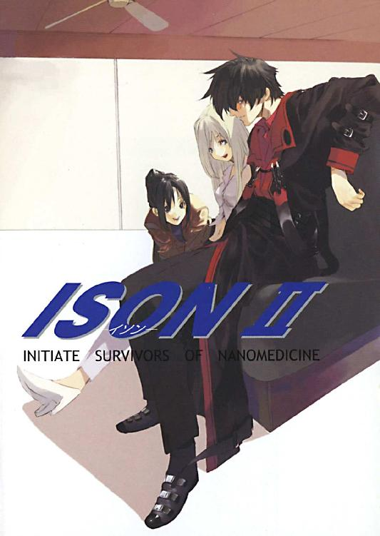

| ISON II －イソン－ ISON －イソン－ (富士見ファンタジア文庫) | |
| 一乃勢 まや | |
| (2014) | |


ＩＳＯＮII
─イソン─
一乃勢まや

富士見ファンタジア文庫
本作品の全部または一部を無断で複製、転載、配信、送信したり、ホームページ上に転載することを禁止します。また、本作品の内容を無断で改変、改ざん等を行うことも禁止します。
本作品購入時にご承諾いただいた規約により、有償・無償にかかわらず本作品を第三者に譲渡することはできません。
本作品を示すサムネイルなどのイメージ画像は、再ダウンロード時に予告なく変更される場合があります。
本作品は縦書きでレイアウトされています。
また、ご覧になるリーディングシステムにより、表示の差が認められることがあります。
口絵・本文イラスト ｐａｋｏ
ＰＲＯＬＯＧＵＥ
その日は静かな良い夜だった。それは退屈、という意味でもあったが、慌ただしいよりはずっとましだ。『医者と警察は暇なほうが良い』とは、誰の言葉か知らないが名言だと思う。
ナースコールも鳴らないし、急患も運び込まれない。眠気覚ましにコーヒーを飲むぐらいしかすることがない。まあ勤続七年の自分に言わせれば、この静寂はいとも簡単に破られる虚しいものだった。前述したような事態はいつもこちらの都合とは無関係に突然起きるのだから。
プルルルル......プルルルル......
読みかけだった本を持ってくればよかったかな、などと考えていた矢先、ナースコールが鳴った。
ほらやっぱり。同じく夜勤中の後輩が過敏に反応する。
部屋番号を確認し、後輩が怯えるような、嫌そうな顔をした。その部屋は患者が入っていない時でも看護士を呼ぶ、とかいう馬鹿な噂は耳にしている──彼女はそれをひどく気にしているようだが、生憎自分はそういったオカルト的なものをまったく信じていないし、それ以前にその部屋には今患者が入っている。胆石で入院している初老の牧師だ。容態が急変するような患者ではないが、何であれ患者に不都合があるならその世話をするのが自分達の仕事だ。呼ばれたなら行かねばならない。
動く様子のない後輩に嘆息し、
「いいわ、わたしが行く」
ライトを手に、内科病棟をぱたぱたと駆ける。
静かな廊下に足音が反響している。これがまた臆病な後輩の変な想像を搔き立てるのだろうが、長くここで働けばわかってくるはずだ。これが一人分の足音なのだと。
カタッ──
わかっているから──彼女の耳は聞き分けてしまった。明らかに自分のものではない異音を。
目指す３０３号室はすぐそこだったが、立ち止まって脇のリネン室にライトを向ける。音はそこからしたような気がした。
「......誰かいるの？」
いるわけがない──こんな時間にこの部屋に用がある者など──
と、闇の中から音もなくぬっと伸びてきた何かが、彼女を室内に引きずり込んだ。
手だ、と思う。丈夫そうな手袋に包まれた大きな手が彼女の口を塞ぎ、ぐいと上向かせる。冷たい感触が喉に触れ、
「ひぁっ──」
声の続きは、半ばほどまで深く切り裂かれた喉から漏れた。積み上げられた白いシーツが鮮血に染まる。
『何か』は彼女の思考が停止し、完全に絶命したのを確かめると再び音もなく去っていった。
＊
「あの女、別れたら確実に俺が損するように仕組んでるんだぜ？ その上『親権は絶対に渡さん』とか言いやがるしな......やっぱり弁護士なんぞと結婚したのが間違いだったんだよ」
「はぁ、大変ですねえ......」
いくら暇を持て余しているとはいっても、こんな話題は勘弁してほしかった。離婚の危機を迎えた男の愚痴など、聞いていて楽しいものではない。
多分、新婚で最近になって急に体重が増えた（幸せ太りだと言われた）自分への嫌がらせだろう。次はお前だ、と呪いをかけているのだ。
白衣を脱いで椅子の背に引っ掛け、デスクからカルテを取り出す。経過観察中の長期入院患者のものだ。
「聞いてるか？ お前も気をつけろよ」
はっきり言われた。あんたと違って仲良くやってる、余計なお世話だ。
「......そうですね」
「まあお前のとこは共働きでもないしな......奥さんは元気か？」
「ええ、娘共々。今お腹に二人目がいるんですよ」
一人目が生まれる直前に籍を入れたので、傍目にはものすごいハイペースだ。
「可愛くて仕方ないって顔だなこの野郎」
「可愛いですよ」
許されるなら当直など放り出して帰りたい。
「その娘も年頃になると親父とは口も聞いてくれなく......」
「やめてください」
不吉なことを言う先輩医師に憮然とし、カルテに視線を落とす。
特に気になる症状はない。次の検査で異常がなければ、通院に切り替えても良さそうだ。
少し晴れやかな気分になり、冷めたコーヒーに手を伸ばす。
バンッ
プラスチックのカップに口をつけようとしたその時、部屋のドアが乱暴に開け放たれ、数名の人影がなだれ込んできた。
全員が黒一色の出で立ちで、隙なくＳＭＧを構える。ガスマスクのようなものを装着していて顔はわからない。
先輩の額に赤い印が灯った。次の瞬間、吐息のような音とともに先輩の後頭部から赤いものが飛び散る。
何が起きたのかわからなかった。目の前で起きたことを理解しようとしたが、背中を強く引っ張られて身体が仰け反り、椅子の背もたれに叩きつけられた。胸に焼けた鉄棒をねじ込まれるような灼熱感。反動で椅子から投げ出され、床に倒れる。
目の前でコーヒーカップが跳ね、中身が飛び出す。こぼれたコーヒーと、自分を中心に拡がる別の赤い液体が床でぶつかり、混ざっていく。
赤が拡がるにつれて、体温が徐々に失われていくのがわかった。
身体に力が入らない。
（あれ......なんでオレ......撃たれてるんだろう......）
訳がわからなかった。
強盗だろうか......？ いや、ここは病院だ、何も盗るものなんかありゃしない。ここよりいいターゲットがいくらでもあるだろうに。
自分を撃った連中は、まだ部屋の中をうろついている。床越しに足音が伝わってきた。何をしているのだろうか。
頭を回したかったが、身体はまったく言うことを聞いてくれない。微かに指先が動くが、それはただ痙攣しているだけだ。
（......ああ、死ぬんだな......）
視界が黒く染まっていく。いきなり背中を激しく殴りつけられたようだった。痛みはあまりなかったが、多分また撃たれたのだ。やめてくれよ、もう死んでるのに。
胸への銃撃が既に致命傷だったから、背中に受けた銃撃は彼の命を数秒縮めただけに過ぎなかった。意識が薄れていき──そのまま二度と戻ることはなかった。
ルルルルルル......ルルルルルル......
黒の集団はどれぐらいの間そこにいたのか──見た者はいない。だが、そこに誰もいなくなってからしばらくして、電話が鳴った。
規則正しく鳴り続ける。
急を要する用件だったかもしれないし、そうではなかったかもしれない。ただ、その電話が取られることはなかった。
１．ＢＬＡＣＫ ＳＯＬＤＩＥＲＳ
まもなく日が沈みきり、これから急に気温が下がり始める時間帯、シャープなフォルムの赤いスポーツカーが走っていた。ボディーは洗車したばかりのようにぴかぴかで、夕陽も手伝って鮮やかな緋色に輝いている。
乗っているのは三人──ハンドルを握るのは、透けるように白い肌をしたくすんだ金髪の美女で、隣では黒いコートを着たサングラスの男が窓から肘を出してぼーっと外を眺めている。二人の座るシートの間から顔を出し前方を注視しているのは、長い黒髪を斜め後ろでまとめ、大きめのジャケットを羽織った女。印象こそまったく正反対だが、こちらも運転手の女に負けず劣らずの美女だ。
三人を乗せたスポーツカーは、前を走るシルバーメタリックの車と適度な距離を空けて走行している。この場合の『適度な距離』とは、車間距離という意味ではなく──後ろについて走っていると悟られず、かつ見失わない距離、のことである。つまり三人は尾行の最中だった。
二台の間で信号が赤に変わり、停車する。先に信号を通った前の車はそのまま走って行ってしまったが、三人は慌てない。既に捕捉済みだから、ここで焦って追いかける必要はなかった。
「ねえ二人とも。後ろ、気付いてる？」
信号待ちの間に、後部座席の女──ティファが前の二人に訊く。
男のほうはサングラスの奥の目だけ動かし、女は頭を回し振り返った。
「ああ」
「え、何？」
それぞれ別の答えが返ってきた。
「後ろ二台、ずっとついてきてる」
男──トーヤは見もせずにはっきり言う。
「......そういえば、あの車さっきもいたわ」
ミラーで確認し、運転席の女──ミュウも呟く。黒の普通車で、スモークガラスで中は見えなかった。
「気付いてるならいいんだけど」
たまたまだろうか。それとも何か自分達に用事だろうか。追跡中でなければわざと遠回りしてみるなりして確認もできるのだが。
「放っとくの？ それとも撒いちゃう？」
「できるか？」
「まかせて」
耳をなぞって顔にかかった金髪を除け、自信たっぷりに言う。
「......仕事の邪魔されたら気分悪いしな。撒いちまえ」
「オッケー」
信号が変わる。だがミュウは発進しない。ハンドルから手を離し信号機を見上げている。
そして、信号が黄色に変わった瞬間、素早くギアを入れて急発進する。後ろのシートにティファがぼすんと押し付けられる音がした。
交差点を渡り切ると同時に再び信号が赤に変わり、三人を尾行ていた（と思われる）黒の車は停まらざるをえず後ろにとり残された。
「......やっぱりな」
追跡を続行する車内で女二人の視線を集め、トーヤはにっと笑った。
「信号青だったのに、一度も急かされなかっただろ。あちらさん、オレ達に後ろ注目されたくなかったんだよ」
＊
鉄以外の部品が取り除かれた車の残骸が、山と積み上げられている。鉄錆と油の臭いが漂うスクラップ置き場の奥の、広く空けられたスペースに、シルバーの車が乗り入れられていた。
それ以外にも三台、黒の乗用車が停まっている。トーヤらの後ろにいたものとは違い、どれも値が張りそうな──ついでにいうと後ろ暗い匂いのする──高級車だ。
黒の車から、高価そうなスーツとコートに身を包んだ男が、そしてそれを取り巻くようにグレーのスーツを着た男達が三人下りてきた。そのうち一人は大きなジュラルミンケースを提げている。
四人が少し離れたところに停めてあるシルバーの車に歩を進め始めると、シルバーの車のドアが開きそちらからも男が現れる。こちらは黒の車の男達と違い、赤い派手なシャツを着、金のアクセサリーをじゃらじゃら身に着けている。
「ブツは」
「金が先だ」
確認するように問うコートの男に、言葉少なに答える。
コートの男が目配せすると、グレーのスーツの一人がボンネットの上にケースを置き、解錠して中身が赤シャツの男に見えるように開いた。
トーヤの位置からは中が見えなかったが、赤シャツの男は中身──高額紙幣の束を手に取って全て紙幣であることを確認すると満足げに頷く。
「確かに」
「次はそっちの番だ」
急かすコートの男にへへっ、と笑い、後部座席から一回り小さい黒いケースを出して同じように相手に中身を見せる。こちらの中身は──乳白色の粉の袋。ペインキラー──この惑星、ネオ・アースに原生していた植物の葉から精製される強力な麻薬だ。
コートの男と赤シャツの男の間で、ペインキラーと現金のケースが交換された。
（取引、確認）
トーヤはさっと愛用の銃を抜き、静かに薬室に初弾を送り込んだ。
ドン！ ドン！
銃声が響き渡る。
「はい、そこまでー。全員動くな」
五人にぴたりと銃口を向け、告げる。
タタタッ！
懐に手を伸ばそうとしたグレースーツを、ワン・トリガーで吐き出された三発の弾丸が撃ち倒す。
「抜けなんて言ってないぞ。動くなって言ったんだ」
今撃ち込んだのはプラスチック弾だ。死にはしないだろうが、完全に昏倒している。
「......その場に膝をついて、手は頭の上。抵抗はしないほうがいい。誰だって痛いのは嫌だろ？」
四人を車の横に跪かせ、武器を奪って後ろ手に指錠で拘束していく。
「ふざけやがって......」
がんっ！
忌々しげに呟いた赤シャツが、顔面から車に叩きつけられる。
「ふざけてるのはどっちだ。こんなもんあちこちに売りやがって」
ペインキラーの袋を手に後頭部をぐりぐりと踏みつける。名前はディラン・アリウス、麻薬の売人だ。司法機関が定めた犯罪者で、『生け捕りに限り』、つまり生かして当局に引き渡せば30万ＮＥドルの褒賞金が支払われる『賞金首』なのだ。
トーヤらはそうした犯罪者を捕らえ賞金を得る『掃除人』だった。『賞金稼ぎ』とも言われイメージはあまり良いものではないが、きちんと免許の存在する公認の資格であり職業である。
ディランを捕まえるだけなら、機会はいくらでもあった。だが、売り手がいるなら当然買い手もいるわけで、薬の蔓延はむしろ買い手の力に依るところが大きい。もちろんどちらも罪で、害悪であることは間違いないので、敢えて両方の姿が見えるまで手を出さなかったのだ。
こと取引においてはディランという男は用心深く、なかなか尻尾を摑ませなかったのだが、やっとこうして取引の現場を押さえることができた。買い手のほうには賞金は懸かっていないが、現行犯で身柄を押さえておけば引き渡し後の査定次第では褒賞金が上乗せされることがあるのだ。
「くっ、掃除屋か......そうだ、１００万出そう。どうだ？」
コートの男がトーヤのほうを振り返りながら言う。
「......１００万で逃がせってことか？」
「取引だよ。お前だって金は欲しいだろう？」
がんっ！
またも後頭部を蹴りつけ、ぐりぐり車に押し付ける。
「言うことがセコいんだよ。そんな取引に応じるくらいなら全員殺してそこから勝手に持っていくさ。そういう司法取引は警察とやってくれ。悪しからず」
撃たれた一人は言うまでもなく、あとの四人も観念したらしく大人しくなった。いや、ディランとコートの男は、蹴り所が悪かったのか気絶しているようだ。
始動音がして振り向くと、コートの男達が乗ってきた黒い車が動き始めていた。方向転換し、逃げようとしている。
逃がすつもりはない──というより逃げられないだろう。あちらはティファの担当だ。
先頭の車が狭いスクラップの山の間に自然にできた道を通ろうとした途端、目の前に骨格だけになった車が降ってきた。慌ててブレーキを掛けるも間に合わず激突、後続の車も相次いで追突して停まる。
ドンッ
骨だけの車に次いで、それよりずっと質量の小さな人影──ティファが先頭の車の屋根に着地した。その人影は腕を高々と振り上げると、足元に拳を叩きつける。
ぼごんっ！
パンチ一発、ただそれだけで屋根が15センチほど陥没し、同じだけ車内の天井が低くなる。
「な、何だ!?」
車内にいた者からは、何をされたのかわからない。左右から一人ずつ、銃を手にドアを開け──屋根より上に頭を出した瞬間、
「えい」
朗らかな声とともに打ち込まれた恐ろしく重い一撃を首筋に受け昏倒する。反対から出てきた男のこめかみには横殴りの硬い踵がめり込み、そのまま倒れて白目をむく。
屋根を蹴って後ろの車へ。真ん中の車は運転手一人だけで、既にエアバッグに顔を突っ込んで気絶している。最後尾の車の真横に音も無く下り立つと、銃を抜いて今まさにこちらに向けようとしている中の男ににっこりと微笑みかける。
「は......？」
男の手が止まった。ティファはその隙を見逃さず、拳を引き車内の男目掛けて真っ直ぐ突き出す。
ばりん！
見本のような正拳突きはガラスを突き破り、その向こうの男の顔面を精確に捉えた。
「わっ、ととっ」
バン！ バン！ バン！
ノックアウトされた男の隣、運転席にいた男が撃った銃弾を咄嗟に伏せて躱し、一息つく。男は膨張したエアバッグを銃で撃ち抜いて破裂させ、車外に出たようだ。車体に張り付き、反撃の機を窺っている。車を挟んで背中合わせになっている、ということだ。
ティファは立ち上がって身構え、静かに気息を整える。
「せあああああっ──！」
ドガッ────！
気合一閃。想像を絶する破壊力を秘めた回し蹴りが車の脇腹に突き刺さる。衝撃で車体が50センチほど真横に滑り、反対側にいた男は車の傍から弾き出された。
「うおっ......！」
何が起きたのかわからないまま、地面を這って落とした銃を拾い上げる。車に蹴飛ばされたようだ、としか表現できなかった。振り返ると、至近距離から爆風に晒されたように車のフレームが歪み、ガラスは全て粉々になっている。まさか本当に車越しに蹴られたなどとは思いもよらない。
「なっ、あの女、一体何をやった──」
「別に何も。ちょっと蹴っただけだよ」
声は後ろから聞こえた。蹴った？ 蹴ったと言ったのか？ そんな馬鹿な──
どすっ、という重い音に視界が激しくぶれ、男の意識はそこで途切れた。
ティファが戻ってくるのを見て、トーヤはぱたんと携帯電話を閉じた。
「警察には？」
「今呼んだ。そっちはいいのか？ 放置しといて」
「うん、大丈夫。全員の肩と膝外しといたから」
恐いことをさらりと言ってのける。それでは動けまい。指錠で拘束されうつ伏せに転がされている五人に、
「だ、そうだ。運が良かったな」
どっちを担当するかジャンケンで決めたのだ。トーヤがチョキを出していたらこの五人がそうなっていたはずだ。
ミュウはこういう荒事向きではないので、入り口を少し入ったところで車を隠して待っている。警察に賞金首その他を引き渡したら、今日の仕事は終わりだ。そのはずだが──トーヤの表情は険しかった。寝不足の顔かな、とティファは思っていたが、
「......なあティファ。全員って言ったよな。あっちの車にいたの、何人だった？」
眉根を寄せ、不審げに訊く。
「ん？ あっちも五人だったけど、それがどうかした？」
「じゃあ......この四人は一体何なんだろうな？」
「えっ？ どういう──」
訊き返しかけた言葉を切り、ティファも振り返る。
「この四人」
少し前から気にかかっていたのだ。何かが息を殺して近付いてきている、と。気配や第六感といった曖昧なものではなく、はっきりとトーヤの感覚に引っかかるものだった。
そしてそれは今、ティファの視線の先にいた。唐突に──ではないが、車の陰から音も無く現れ、こちらにＳＭＧの銃口を向けている。穏やかではない。
「......で、何か？」
動揺するでもなく、静かに問う。個性を極限まで殺したように、四人が四人とも全身を黒一色に包みコンバットベストとガスマスクを着用している。顔は見えないし、体格にも大きな差異がないため全員同じに見える。どころか、乱視が悪化して一人が四人に見えているだけかとさえ思った。
「オトナシクシロ」
黒ずくめの一人が、意図的に抑揚をなくした低い声で言った。
「掃除人か？ 他人の仕事を奪うのはルール違反だぜ」
「用ガアルノハオ前タチダ」
「ならその物騒なモンしまって、面見せてからにしろよ。おたくらの態度じゃ『死ね』って言ってるようにしか聞こえねーんだよ」
「殺気丸出しだしね」
二人ともいきなり喧嘩腰である。お互いに事を穏便に済ませようという気がまったくないようだった。
黒ずくめが頷き合い、ＳＭＧのセレクタを切り替えた──それを認識した瞬間、トーヤの手がそれを追い越す速さで動いた。
タタタッ！
身体を横に滑らせながら、引き金を引く。同時にティファも身を翻し相手の射線から身体をずらした。
一斉に放たれた弾丸が、一瞬前まで二人のいた場所を貫き銀の車体に突き刺さる。追いすがる火線をかいくぐり、一呼吸で車の陰に飛び込んだ。
狭い車の陰でティファと肩を並べ、腕だけ車上に出してもう一度三連射。命中した手応えはあったが、その何倍もの銃声が鳴り響き車体が震えた。ガラスが割れ、二人の頭に細かなガラス片が降りかかる。
斉射が収まり、つかの間の静寂。反対側のタイヤがパンクしたらしく、盾にした車ががたんと傾いた。
「怒らせたかな」
「トーヤのせいでしょ。口悪いんだから」
「......で、恨まれる心当たりは？」
「うーん......どーかな。トーヤは？ あたしの知らないとこでいっぱいありそうだよね」
ない、と言いたいところだが、掃除人をやっていれば逆恨みでも何でも恨みを買うことは少なくない。だがそれはティファだって同じこと、トーヤだけが恨まれているような言い方はやめてほしい。
髪を飾るガラスを振り落としながら、プラスチック弾の弾倉を抜く。黒ずくめのボディーアーマーにはあまり効き目がなさそうだったからだ。二人に三発ずつ撃ち込んだが、何事もなかったように撃ち返してきた。
「直接訊いてみりゃいいだろ」
頷き、拳を固めるティファ。相変わらず腰の後ろに下げた自動小銃には触れようともしない。そのことについては特に何も言わず、トーヤも愛銃に実弾の弾倉を挿し込んだ。
火力、防御力共に上回る黒ずくめは、左右に分かれて二人を追い詰めようとしている。
「──やるぞっ！」
トーヤの合図で二人が車の前後に飛び出した。
短い助走からティファはいきなり黒ずくめのガスマスクめがけて飛び蹴りをかますと、銃口を向けられるより早くもう一人の後頭部に手を回しトランクの角目掛けて思い切り叩きつける。
トーヤはヒップ・ホルスターからもう一丁銃を抜き、飛び出しざま左右の銃で同時に二つの標的を捉える。
ドン、ドン、ドン、ドン、ドン、ドン！
弾丸は通らないまでも、ほとんど同じ場所に二度三度と続けて銃撃を食らい、黒ずくめ二人は仰け反り倒れた。
ティファから手痛い打撃を受けた二人はそれでもふらりと起き上がり、見た。女が笑顔を浮かべ、ちょいちょいと手招きしているのを。ＳＭＧを連射し、廃車の陰に逃げたティファを追いかける。
トーヤに撃ち倒された二人が起き上がりＳＭＧを持ち上げた時には、既にその先にトーヤはいない。トーヤはティファを追った二人に目標を変更していた。
ティファを見失った黒ずくめは、素早く──常人離れした跳躍力で──絶妙なバランスで重ねられた廃車の山の上に登っていった。ティファはそれに気付いて同じように廃車を駆け登るが、一歩遅く眼下を見下ろした黒ずくめと目が合ってしまった。ＳＭＧの射線とティファの身体が交差し──
ドン！ ドン！
トーヤの弾丸が黒ずくめの脇腹と肩に命中する。アーマーに守られていない肩に鮮血が弾け、大きくバランスを崩す。その機を逃さず、ティファは目の前の廃車──黒ずくめの立っている車のフロントを蹴り上げた。
ゴォンッ！
部品の除かれた車体は思いの外軽く、衝撃で大きく斜めに傾いだ。足を踏み外し、黒ずくめは数メートル下の地面へ転落する。
気の休まる間もなく、トーヤは即座に背後の気配に反応した。地面に身を投げ出して死角からの斉射を躱し、蜂の巣になった車の陰に転がり込む。
カチッ
黒ずくめのＳＭＧが弾切れの音を告げたのを、トーヤの耳は聞き逃さなかった。足音を殺して車を迂回し、ボンネットを乗り越えて弾倉を交換している最中の黒ずくめの後ろに回りこみ、その背中に銃口をぴたりと押し当てる。
「動くな。この距離ならいくら防弾でも背骨が砕けるぜ」
トーヤの手にあるのは、愛用の銃ではなくいつもは脇に吊っている大型の拳銃だ。込められているのは通常の強装弾だが、今はそれで充分だ。それが背中の中心──背骨を真っ直ぐ狙っていた。そうして動きを封じた黒ずくめを盾にもう一人を牽制する。勝負ありだ。
「さて、じゃあおたくらの素性と理由を話してもらおうかな」
二人は沈黙を守っている。単なるお礼参りではなさそうだったが、簡単に喋るとは最初から思っていない。
「......だんまりかよ。まあいいや、なら掃除人流のやり方で聞かせてもらう。言っとくけどオレらは警察ほど上品じゃないからな」
撃鉄を起こす。自由なほうの黒ずくめはＳＭＧをゆっくり下ろすと足元に視線を落とした。トーヤからは死角になっているが、そこにはたった今確保したばかりの賞金首＋四人が転がっている。
あろうことか、無造作に動かしたＳＭＧの銃口が動けない五人を狙っていた。
ドンッ！ ドン、ドン！
左の拳銃と、神速で抜いた銃が同時に火を噴く。
零距離から放たれた弾丸は背骨を避けて激しく背を突き飛ばし、もう一方は引き金に指をかけようとしていた黒ずくめの両肩を撃ち抜いていた。
「......オレ達の獲物を勝手に殺すなよ......！」
呻き声をあげて倒れた黒ずくめに言い放つ。
背中に銃弾を受けてなお立ち上がろうとする黒ずくめに再び拳銃を向け、
「動くなって言って──」
苦悶しながら身を起こした、その手にあるものを見てトーヤは息を飲んだ。
手にすっぽり収まるサイズの、円柱状の物体。それが黒ずくめの手から、ころころとこちらに転がされる。
「──────────！」
閃光が膨れ上がった。
「トーヤっ!?」
悲鳴に近い声で叫び駆け出そうとしたティファの足が止まる。廃車の陰に隠れ潜んでいた黒ずくめが、ティファの首に太い鎖を巻きつけたのだ。
咄嗟に左手を差し入れたが、お構い無しにものすごい力で絞め上げてくる。
「このっ......！」
背後の敵の脇腹に肘を突き入れ、頭を振り上げて後頭部を顔面──ガスマスクにぶつける。ごつん、と鈍い音がした。多分相手より自分のほうが痛かっただろうが、怯んだ隙に鎖から抜けて反転、横面に裏拳を叩き込む。
マスク越しにくぐもった呻きを漏らす黒ずくめの胸板に、射抜くような中段蹴りがクリーンヒット。数メートルも水平に吹き飛び、廃車に激突する。
ティファの力でこれだけの連撃を受けたにも拘らず、黒ずくめはまだ動いた。相当足にきているようだが、それでも気丈に立ち、踵を返して逃げ出した。
追うべきか迷ったが、トーヤのほうが気がかりだった。
「トーヤっ！」
光は一瞬で、既に収まっている。閃光弾の類だろう。大きな爆発もなく、トーヤは同じ場所にうずくまっていた。黒ずくめは光に紛れて逃走したらしく、いなくなっている。
「大丈夫？ しっかりして！」
抱き起こしたトーヤは、苦しげに目を閉じていた。
「......大声出さなくても聞こえてる。大丈夫だよ」
言いながらも、目を開けようとしない。トーヤの目は色素が薄く、ただでさえ刺激に弱いのだ。その上薄闇に慣れた目では、まぶた越しでもあの閃光は強すぎた。
「それより、ミュウは？」
「へっ？ ミュウ？」
唐突にトーヤの口から出た名前に、ティファは抜けた声を出す。彼女は入り口近くで待っているはずなのだ。
「さっきちょっと悲鳴が聞こえた」
「悲鳴っ!?」
ティファには聞こえなかったが、何かあったのだろうか？ それにしては落ち着いている気がするが。
と、そこへスクラップの間からひょっこりミュウが顔を出した。
「ミュウ！」
「えっ、な、何？」
いきなり呼ばれ、ミュウはきょとんとしている。
「何があったの？」
「それはこっちが聞きたいんだけど......今の何？ いきなりぶつかられたんだけど」
トーヤが聞いたのはその悲鳴か。二人から安堵の溜息が漏れる。
「車で待ってるはずだったろ？ なんでここまで来てんだよ」
やっと視力喪失から回復してきたらしく、トーヤが目をうっすら開きながら問う。
「そんな睨まなくたっていいじゃない。あれだけばりばり銃声したら気にするに決まってるでしょ。何やってたの？」
「それをこれから訊くんだよ」
頭を廻らせ、トーヤに両肩を撃ち抜かれた黒ずくめに足早に歩み寄る。逃げ遅れたらしい。
拾い上げようとしていたＳＭＧを蹴り飛ばし、ティファが襟首を摑んでさんざん盾にされた車の傍まで引き摺っていく。
「さて、もう一回訊くぞ。お前らは何者で、どうしてオレ達を襲った？」
やはり何も言わず、ただ肩で息をしている。
「どうせ捕まったら吐くまで同じこと訊かれるんだぜ？ 言えよ、ほら」
さっとマスクを剝ぎ取ると、男──男だった──は焦点の合わない血走った目でトーヤを凝視し、痙攣したかと思うと突然動かなくなった。目を開けたままうなだれ、唇の端から血の筋が伝い落ちる。
「なっ......」
脈が止まっている。完全に事切れていた。
「毒......？」
秘密を守るため、だろうか。相手に情報を与えないよう自決した、或いはさせた、ということか。方法としては考えられるが、まともなやり方ではない。
「何なんだよ、一体......」
何一つ明らかにせず死んだ男。まだ白光の残る目を閉じ、トーヤはほんの少しの怒りを込めて呟いた。
＊
ソファーの上で毛布に包まるそれを見て、ティファは漠然と思う。この子は朝日を見たことがあるのだろうか、と。
ミュウとの同居を始めてからしばらく経つが、彼女がティファより早く起きていたことは一度もない。
ソファーの下には、服や下着が脱ぎ散らかしてある。服を脱いで寝る癖は、何度か注意したが直る気配がないので諦め、もう慣れた。特に用事もないので、起こすこともしない。
昨日のこと──賞金首の件は普通に処理されたが、黒ずくめの集団の件は警察の管轄下に置かれ調査されることになった。だが朝方あった連絡では、素性や身元がわかるようなものは何一つ出てこず、弾丸の線条痕を照合しても、該当する銃がなかったそうなのだ。改造か密造か──記録を抹消されている代物ということになる。普通ではない。残ったのは身元不明の死体が一つ、外傷はあったが直接の死因は毒、自殺ということになりそうだった。
ニュースを流しながら、自分の手をじっと見下ろす。握ったり広げたりを繰り返し、ふぅ、と溜息をついた。
「どーしたんですかぁ？ 表情が黒いですよぉ？」
キッチンから出てきた少女が、笑顔を垂れ流しながら語尾の延びたのんびりとした声で訊いてくる。両手で保持したトレーには、湯気の立つコーヒー。
彼女は、アディア。金髪碧眼の可愛らしい美少女だが、実はミュウがとある会社からモニターとして預かっている試作型のアンドロイドである。
「暗い、でしょ」
「そうですぅ、暗いですぅ。体調不良ですかぁ？」
「うーん......健康なはずなんだけど。あ、ありがとっ」
テーブルにコーヒーを置いたアディアに微笑む。
「お砂糖二個、ミルク多めでよかったですよねぇ？」
「うん」
お茶派のティファは、これまでコーヒーを飲むことはほとんどなかった。あまり好きでもなかったのだが、ミュウに付き合ってアディアの淹れるコーヒーを飲むようになってから、『まあこれはこれで美味しいかな』と思えるようになったのだ。どういうわけか、アディアはコーヒーを淹れるのが驚くほど上手だった。
マグカップに少しだけ口をつけると、ティファはふと何か思い立ったように腰を上げる。
部屋の隅に押しやってあるサンドバッグをリビングの真ん中に吊るし、軽く拳を打ち込んだ。
ずどん！
凄まじい音がして、サンドバッグが跳ね上がる。その音にぐっすり眠っていたミュウが飛び起き、
「なっ、何、なにっ!?」
「あ、ミュウさんおはようございますぅ」
あたふたと毛布を身体に巻き付けながらきょろきょろ周囲を見回すミュウと、それにマイペースに朝の挨拶をするアディア。
「うーん、正常だなぁ......」
ティファは首を傾げながら呟いた。
「正常って......何が？」
「うん、昨日のこと。あたし結構強めに殴ったはずなのに、立ったんだよね......なまってるのかと思ったけど、そんなことないよね？」
あの黒ずくめのことである。
「え、えーと......それはわたしには何とも......」
未だギコギコと振り子のように大きく揺れ続けるサンドバッグを見て、返答に窮する。
「何だったんだろうね、あれ......」
何事もなかったようにサンドバッグを元あった場所に戻し、テーブルに戻ってコーヒーをすする。
「......あ、アディア。わたしにもコーヒー」
「はぁい」
そんなやりとりを横目に他国の報道を聞いていたティファの手が、止まった。
「そんな......噓......っ」
音量を上げ画面を凝視するティファの顔は、ミュウの目にも明らかなほど青ざめていた。
ピリリリリ......ピリリリリ......
単調な高音と唸るような振動音が、二度寝の至福を味わっていたトーヤの覚醒を促す。
「............んだよ......っせぇな......」
もごもごと口の中で呟きながら、不届きな安眠妨害者に手を伸ばした。
ティファからだ。鳴り続ける携帯を手に、ぼりぼり頭を搔く。
電源を切ってやろうかと思ったが、それをすると三分経たないうちに直接押しかけてきそうなので素直に出る。
「......なん──」
『トーヤっ！ テレビテレビっ！ 今すぐテレビ見てっ！ ニュース！』
「......テンション高いな朝っぱらから」
『朝じゃないでしょ！ いいから早くっ！』
どうしたというのだ。必要以上の大声で叫ぶティファから耳を離し、枕元に置いた眼鏡をかける。クリアになった視界でテーブルの下に転げ落ちていたリモコンを探し当て、テレビをつけた。
「......明日から雨か」
週間予報によると、明日から天候が大きく崩れそうだった。
『ちがーう！ もう終わった！ ああもう、今からそっち行くからっ！』
「なんだったんだよ」
『ベアトリス国立病院がっ！ 大変なのっ！』
それは長く耳にしなかった、しかし片時も忘れたことのない単語だった。
２．ＩＮ ＴＨＥ ＨＯＳＰＩＴＡＬ
ソラリアは、トーヤらが本拠を置くシーク・イミダから赤道を挟んでほぼ同経度に位置する国だ。世界最大の国土面積と人口、ネオ・アース最古の歴史（といっても、せいぜい千年そこそこだが）を持つイオニアと比較すれば、国土はおよそ三分の一、人口は半分を少し下回る程度。この惑星における人類史のスタート地点であるイオニアから距離があることもあってか開拓は遅く、若い国だが、その分勢いがある。イオニアと肩を並べる大国といってもいいだろう。
そしてこの国は、トーヤとティファにとって二つ特別な意味を持つ。
まず故郷である。二人とも孤児だったから生まれた土地かどうかはわからないが、この国の田舎の、小さな孤児院で育ったのだ。今はもうその孤児院も残っていないが──院長先生は元気だろうか。時々届く絵手紙から察するに、どこかの山に籠って自活しているらしいが、住所が書いてないのでこちらから連絡のしようがないのだ。
そしてもう一つの意味。二人がＩＳＯＮ──ナノマシン医療の初期生存者となった場所である。人体破壊病に感染した二人が入院し、治療を受けたのが、この国の『ベアトリス国立病院』なのだ。
あまり良い思い出ではないため、自然ソラリアという国そのものから足が遠のいてしまいがちになってしまう。ティファはそれほどでもないようだが、トーヤは正直ソラリアに行くことにあまり乗り気ではなかった。
それを押して行くことにした理由が、ベアトリス国立病院で発生したという事件だった。数日前のことだが、病院内で殺人があったらしいのだ。報道管制が敷かれているようで詳しい情報は入ってこないのだが、深夜過ぎ、当直の医師、看護士数名が殺害されたという。殺された被害者に知った名前はいなかったが、それだけでは不安は拭えなかった。良い思い出はないとはいっても、そこは自分達の命を救ってくれたところであり、世話になった医師がいるのだから。
十時間を超えるフライトを終え、空港に降り立った三人は、荷物を回収すると固まった身体をほぐしながら早足で出口に向かう。
頭上から照りつける陽光が目を刺す。何時間か前まで雨が降っていたらしく湿った空気を肺に取り込み、トーヤとミュウはそっくりの仕草で欠伸をした。二人は機内であまり寝られなかったらしい。
「相変わらずだね」
ティファが同情の眼差しをトーヤに向ける。
「あ？」
不機嫌な返事。サングラスの奥の目が恐かったので、目を擦るミュウに話を振った。
「......でもミュウまでどうしたの？ 乗り物とは相性いいはずなのに」
「恐いんだもん。知らない人が操縦してると思うと」
彼女は運転・操縦のエキスパートなのだ。鳥が飛び、魚が泳ぐように、そういうふうに造られた、本能のレベルで組み込まれた技能である。だからか、他人にそれを任せるのが不安で仕方ない、というわけだ。
とすると、公共の交通機関を利用する度にそんなことを考えているのだろうか？
ミュウには悪いが、もう少し我慢してもらうしかない。気乗りしない様子のミュウの背を押し、三人はタクシーに乗り込んだ。
「ベアトリス国立病院まで」
＊
その病院は、レンガをいくつも組み合わせたような色と形をしている。といってもレンガ造りなわけではなく、全面がそういう色で塗られているだけだ。設計者の遊び心を反映したのか時計塔なんかもあったりする。屋上はコンクリートの色そのままで、上空から見ると灰色の巨大なコの字に見える。
最近外壁が塗り直されたようで、トーヤの記憶にある姿とは違って見えた。
受付に行くと、取材はお断りですと言われた。
「オレ達がマスコミに見えるか？」
掃除人は警察のようにバッジを出してパスというわけにはいかない。
「テイラー先生に会いたいの。トーヤとティファが来たって言えばわかると思うから」
（眠気で）半分に細められた目で呟くトーヤを横に退け、ティファが言う。受付の女性は不機嫌な顔でカウンターをとんとん叩くトーヤに怯えながら内線で連絡を取り、
「......ドクターは回診中です。三階の喫茶室でお待ちいただくようにと」
というわけで三階内科病棟へ。
清潔な病院の空気に落ち着かない様子のトーヤとティファ。コートにサングラスの男と美女二人の組み合わせは、行き交う入院患者の目を引く。待ちくたびれたミュウがテーブルに突っ伏し寝息を立て始めた頃、やっと見知った医師が現れた。
ディール・テイラー。短髪の前髪が白く、目尻の下がった男だ。二人の主治医だった時は三十過ぎだったから、今は四十前ぐらいか。顔には歳相応の皺が刻まれている。回診中ということで無事ははっきりしていたが、実際に見てやっと安心できた。
「トーヤ君、それにティファちゃん......か？ どうしたんだい？」
「よかった......先生」
喜びを素直に表すティファ。
「ああ、そうか例の事件の......それでわざわざ？ トーヤ君も？」
「そうですよっ。あたしもだけど、トーヤのほうがずっと心配してました。顔に出てないだけで、これでも喜んで......ねっ？」
「余計なことまで言わなくていいんだよ」
ぶすっとして言う。疎遠というか──今まで避けてさえいた相手だ。何を言ったらいいのかわからなかった。
「いいんだ。僕は君にとっては『良い医者』ではなかっただろうからね。そうか......ありがとう」
昔と同じように、優しく笑ってくれる。彼が差し出してきた手を、トーヤは黙って握り返した。
「ところで......トーヤ君。彼女は？」
顔を起こし、ぽーっとこちらを見上げているミュウを見る。
「あ、ああ、こいつは──」
「ミュウ・フェニックスです。初めまして先生」
立ち上がり、トーヤの腕を取ってわざとらしいほど明るく言う。
フェニックスはトーヤの姓である。当然ディールもそれを知っており、
「フェニックス......？ トーヤ君けっこ──」
『違いますっ！』
トーヤはともかく、なぜティファまで力いっぱい否定するのだろうか。
「わたし妹なんです。兄がお世話になったそうで痛っ！」
嬉々として言うミュウの頭をトーヤの手がはたく。悪質な冗談なのでさすがにティファも弁護しない。
「なんで叩くのっ？」
「噓つきは泥棒の始まりだ」
「妹？ あれ、トーヤ君は確か......」
「だから違うんですって。ちょっと訳ありでオレと同じ名字になってるだけで」
確かに登録上はトーヤの『妹』──しかも被扶養家族になっている。だがそれはミュウが勝手にやったことで、実際にはまったくの他人である。
「いいのに、妹で......」
「話がややこしくなるから黙ってなさい」
「あ、あれ？ ティファちょっと目が恐い......」
「それで、センセー」
脱線する二人をよそに、トーヤが真面目な顔をする。
「よかったら、事件のことを少し聞かせてほしいんだけど」
「それは構わないが......いや、こうして来ている以上、君達には聞いてもらったほうがいいだろうな」
「は？ どういう意味ですか？」
「......場所を変えて話そう」
案内されたのは、当直の医師が殺された現場だった。事件後使われていないらしく、誰もいない。
「証拠物件は警察が持っていってしまったから、もう何も残っていないと思う......」
鬚の伸び始めている顎を撫で回しながら、ディールは言う。
案内の間ディールが語ったのは、初動捜査の様子だった。病院の職員は、捜査の模様を多少なりと見ているのだ。耳に入ってくる情報を彼なりに整理して、トーヤらに伝えようとしていた。
「で、目撃者は無し、犯人らしき指紋は一切出ず、弾丸から銃を特定することもできませんでした、と」
昨日まで立ち入り禁止になっていた部屋を歩き回り、ディールの言葉を反芻する。
「どっかで聞いたような話だね」
「そうだな」
ひそひそと耳打ちしてくるティファに頷き返す。
「......先生、被害者に共通点とかは？」
「この病院に勤めているという以外は、特に......」
「怨恨の線は？」
「さあ、そこまでは僕にも......ああ、確かリカルドが離婚調停中だったが......」
それは多分関係ないだろう。
血痕は既に綺麗に掃除されていたが、まだ血の臭いがする気がした。被害者が倒れていたと思しき場所を見ると、床に弾痕が残っていた。ほとんど垂直に、つまり──倒れた被害者に真上から撃ち込んで──止めを刺した、ということになる。弾は貫通し、床に残った。
「で？ センセー、さっき変なこと言ってたよな？ オレ達には話しておいたほうがいいとかなんとか」
「ああ、そうそう......動機というか、それが犯人の目的だったんじゃないかと思うんだが......保管されてた診療録がなくなっていたんだ」
「カルテが？」
「そう。しかも七年以前のデータがね」
通常、カルテの保存義務は五年間となっているが、七年以上昔のカルテが残されていたというのは不思議なことではない。それ自体は珍しいことでも何でもないのだが、その時期が七年以前だというのが問題なのだ。
「それって......！」
「......君達のものも含まれている」
七年以前というと、教科書にも載るほどの大きな出来事の一つに、ＨＤＤの流行がある。十年前突然発生し、ネオ・アースの当時の全人口の５％が死亡したという。徹底した感染対策とワクチンの普及で今ではもう恐るべき死病ではなくなっているのだが、誰にいつ襲いかかるかわからない見えない恐怖が過去の出来事になるにはまだ時間がかかるだろう。
トーヤとティファはこの病院でＨＤＤの治療を受けた。その記録が盗まれたということは、二人もまた被害者なのだ。七年以上も昔の診療記録など、今さら大した価値はないだろうが──
「......確かに、こいつはオレ達も無関係ってわけじゃなさそうだな」
「そう、だね......」
眉根を寄せて考え込んでいた二人は、ほぼ同時にある仮定に行き着いて顔を上げた。
「七年前......あ、そっか！」
ＨＤＤ発生の三年後、と考えると辻褄が合う。
「センセーならわかるだろ？ ＨＤＤのワクチンができたのはいつだ？」
「そ、そうだな......大体七年ま──」
「そう！ そうだよ！ で、あたし達はそれより前にここで治療受けてるでしょ！」
「ナノマシンでのウィルス除去治療か......！」
ＨＤＤ発生から一年余りが経った頃、研究中だった医療用ナノマシンがようやく実用段階に入った。ＨＤＤウィルスの体内からの除去を目的として初めてナノマシンによる治療が行われたが、ワクチンが完成して以後、その治療法はほとんど使われなくなった。ワクチンの効力がほぼ１００％である以上、リスクを負う必要がなくなったからだ。つまり、ナノマシン医療がＨＤＤに使用されたのは、実用化からワクチン完成までのごく短い期間だけということになる。
「だったら......カルテを盗んだ犯人は、オレ達みたいに特別な治療を受けた患者を探そうとしてる、って考えられないか？」
特別な治療を受けた人間──ＩＳＯＮを。
治療に直接関わったディールは知っている。その治療が患者に──トーヤらの身体に及ぼした影響を。
「それじゃあ、犯人はトーヤ君達を......!?」
「仮定だよ。......まあそうだとして『会って話がしたいだけ』なんて穏やかな奴らではなさそうだけど」
目的のためなら殺人も辞さないような連中である。言葉だけは軽いが、口調には苛立ちが表れていた。
「ねえ、それってアレじゃない？ 一昨日の黒むぐ」
窓から駐車場を見下ろしていたミュウが口を開きかけ、ティファが素早くその口を塞ぐ。
「心当たりがあるのか？」
「いや、全然。......そうだ、治療を受けたのはオレ達だけじゃないし......センセ、そのカルテ見せてもらうわけにはいかないかな？」
「盗まれたのはディスクだけだから、資料室には残ってる......だけど、今さらだけど僕達には守秘義務がある。君達にも見せるわけにはいかないんだ。すまないけど」
「知ってる。ちょっと言ってみただけ」
にっと笑い、肩を竦める。
「......じゃ、オレ達はこれで。行くぞ二人とも」
「あ、うん」
ディールに短く挨拶し部屋を出ていく二人。それに続いてドアをくぐろうとしたトーヤの背を、ディールが呼び止めた。
「......君が笑った顔、初めて見たよ」
「......おかげさまで」
振り返る前に、後頭部に一度手をやる。
「その......ありがとうございました。それと、すいませんでした。センセーの元気な姿見られて、安心しました......本当に」
ティファの言う通りだった。不義理な自分を恥じた。
「こちらこそ。会えて──元気そうでよかった」
「......また、来ます」
「ああ。いつでも来なさい」
ディールに見送られて部屋を出、先に出た二人に追いつく。
「......どうしてさっき止めたの？ 先生には話しておいたほうが良かったんじゃ」
隣に並んだミュウが袖を引っ張り、本当にわからない様子で訊いてくる。トーヤはそれをじろりと一瞥すると、
「なんでそんなこと話さなきゃならねーんだ？」
「え......だって」
トーヤとティファを襲った黒ずくめも、病院を襲撃した殺人者も、どちらも登録にない（照合不可能の）銃を使っていた。時間的にもちょうど繫がる。単なる偶然の一致とは思えない。
「......心配かけたくないんだよ」
すれ違った入院患者が三人に好奇の視線を向ける。
廊下の窓から中庭を見下ろし、ぼんやりと考えを巡らせていると、ティファが窓とトーヤの間の狭い空間に割り込んだ。
「なーに考え込んでるの？」
必要以上に顔を近づけるティファの顔面を摑んで横に押し退け、緑の豊富な中庭──その中心に陣取る大樹を眺める。
周りにはベンチが幾つも据えられ、パジャマ姿の患者が木陰でくつろいでいる。
「いや、ちょっと面白いことを思い出してな」
トーヤらが入院するずっと昔からここにある木は、憶えている頃より枝葉が伸び緑が増しているようだった。名も知れぬあの木はここでどれだけの生と死を見守ってきたのだろうか──などと思いながら、ミュウににたりと笑いかける。
「......この病院にはそれなりに長い歴史があるから......まあいろいろとそういう方面の話も豊富なんだな」
「そういう方面？」
「つまり......大事な人に会う前に死んだとか、流産、死産とか、退院を目前に併発した病気で、とか......医療ミスってのもあるな。未練の残る死に方をしてるのが結構いるらしいってこと」
トーヤがとつとつと語りだした不吉な話題に、ティファがぴくりと反応する。
「......そ、それで？」
緊張した面持ちで、ミュウ。
「......あの木にもそういう伝説が残ってるんだよ。白い服着た首吊り死体が枝にぶら下がってるのを見たって人が何人もいるって話だぜ。噂じゃ、病気を苦に自殺した十四歳の少女らしいけど......」
「あっ、あはは......やだな、そんなことあるわけ......」
「噓じゃない。風もないのにその枝だけがさがさ揺れたり、呻き声だか溜息だかを聞いたやつもいる。それに──」
「わーっ、わーっ、わーっ！」
なぜか顔を赤らめ突然叫び出すティファ。
「──オレも見た」
「やめてーっ！ 聞きたくなーいっ！」
青い顔をしたミュウが耳を塞いでぶんぶん頭を振る。思った通りこういう話は苦手のようだ。
「......大丈夫だ、ミュウ」
耳を塞ぐ手をやんわりと除け、にっこり笑って言う。
「ここは病院だ。別に珍しいことじゃないから」
「バカーっ！ やめてって言ってるのにーっ！」
トーヤの襟を摑んで締め上げ始める。
前後に揺さぶられながらティファのほうを見やると、朱が差した顔でこちらを睨みつけている。トーヤが何を言いたかったのかわかったのだろう。というより──彼女こそがこの話の当事者だからだ。
それは二人が入院中のこと──トーヤよりかなり早く治療が終わり、一般病棟に移されたティファは、安静にして経過を見ようという状態だった。
同じく入院中のトーヤは、まだ集中治療室。会いに行けるわけもなく、彼女は退屈していたのだ。
元来身体を動かすことが好きだった少女は、まだリハビリは早いという医師の判断に納得していなかった。ナノマシンの作用で（当時はもちろん知る由もないが）身体はほとんど治っていたのに、どうして動いちゃいけないのか──そして、彼女は医師や看護士の目を盗んで、勝手にリハビリを始めてしまった。
人目のない夜中に、こっそり部屋を抜け出しては外──中庭に出、ランニングやら筋トレやらに勤しんだ。一日でこなしたメニューを考えれば、とても病人とは思えない運動量だっただろう。夜中だから誰も見ていない──だがそれは絶対ではなく、やはり目撃者がいたのだ。夜中に木の枝にぶら下がり懸垂する姿は、『首吊り死体』のように見えたかもしれない。実体のある人間がぶら下がっているのだから枝が揺れもするし、呼吸だってする──それがこの伝説の真相である。
真に受けて涙目になったミュウの反応を見ると、オチを話さないほうが面白そうだった。
「......オレにはわかる......それはまだここにいる。それもすぐ近くに」
「聞こえない聞こえないっ！」
「聞こえてんじゃねーか。それと、病院の中では静かにな」
「噓よね!?......二人とも、どうして黙ってるの？ ねえ、ねえったらっ！」
「さ、行くぞ」
「ちょっとーっ！ 否定してよー！」
半泣きで喚くミュウの声にこみ上げる笑いを堪えながら、玄関を目指す。
「あー、面白ぇ。こんなにウケるとはなー」
「......トーヤ、悪趣味」
二階から一階に下りている途中、階段を上がってきた人間に出くわした。
「おっ？」
手すりに手をかけた男は、トーヤとティファを見て声を上げた。
「なんだお前ら、こっちに来てたのか」
良く見知った人物なのに、あまりに面変わりしていて一瞬誰だかわからなかった──気まずい沈黙が訪れる前に、二人は相手の名を口に出した。
『キザイア兄......？』
白く染め抜かれた短髪をがりがり搔きながら、その男は気軽に片手を上げる。
「おう。久しぶりだな義弟ども」
＊
義弟ども、という言葉が示す通り、キザイア兄──キザイア・ウィードはトーヤらと同じ孤児院で育った兄のような存在だった。二十九歳、イオニアのメイフォンと並ぶ年長組の一人で、現在はここソラリアでバイク店を経営している。また、あまり使っていないがソラリアのアジトの管理も頼んでいる協力者である。
「で、キザイア兄なんで病院なんかに？ どっか悪いのか？」
営業中に抜けてきたというので、店に戻る車内。運転するのはもちろんミュウだ。隣に座るキザイアが振り返って、
「アホか、お前らのためにわざわざ行ったんだよ」
「えっ、だってあたし達キザイア兄にこっち来るって言ってないよね？」
「じゃなくてだ。例の事件──お前らそれでこっち来たんだろ？ お前らときたらガキみてーにいつまでもソラリア避けてやがるから、ちょっと代わりに先生に話聞きに行ってやろうと思ってたんだよ。ま、お前らのほうが一足早かったみてーだが」
無駄足だったぜ、と嘆息するキザイア。人はこうも変わるものなのだろうか、と後ろの二人は思う。二人の記憶にあるキザイアは癖の強い栗毛で無精鬚、眼鏡をかけていた。それが今では銀髪で鬚も綺麗に剃られ、コンタクトに替え、少し瘦せたし肌は日に焼けて浅黒くなっている。はっきり言って──別人。声と口調で義兄だとわかるだけである。
「あ、まあそれは......うん、ありがとう」
「けっ。普段ろくに連絡しねぇくせに、来る時はいきなり来やがって」
メイフォンといいキザイアといい、どうしてこう年長組はガラが悪いのだろう。客商売なのに。
「どれぐらいこっちにいるんだ？」
「それなんだけど......事件のことを調べてみようと思ってる」
「あァ？ 掃除屋の仕事じゃねーだろうよ？」
「オレ達に関係あるかもしれないんでね」
キザイアは少し考え、そのまましばらく黙り込む。
「ヤバい連中ってことか？」
「さあね。でもヤバい奴の相手なら慣れてるし」
「違いない」
深刻そうな顔をしていたのは数秒だけ、声を上げて笑い出す。
「で？ こっちのお嬢は？ まだちゃんと名前聞かせてもらってないんだが、どういう知り合いだ？」
「あ、はい。ミュウっていいます。よろしく」
邪気のない顔で性懲りもなく『いもう......』などと言い出したので後ろからシートを蹴りつけ、
「......ちょっと訳ありでね。まあ仕事仲間、かな」
「大丈夫、キザイア兄。信用していいよ」
ミュウを黙らせると同時に言葉を濁す。
「訳あり、ねぇ......まあ、お前らがそう言うなら俺は別に気にしやしねーが」
あれ......？ キザイアの態度にトーヤは違和感を覚えた。キザイア兄ってこんなキャラだったっけ......？
「キザイア兄、やっぱどっか悪いんじゃねーのか？」
「............？ 何を言ってるんだお前は」
やっぱりおかしい！ トーヤとティファは顔を見合わせて首を傾げ、バックミラーでそれを見たミュウは不思議そうに眉をひそめた。
「......んん？」
店舗の横手の駐車場に停められたスクーターを見て、キザイアは疑問符を浮かべた。
「どした？ キザイア兄」
「いや、なんでアイツが来てるんだ......？」
作業場でバイクの整備、或いは修理をこなしている総勢二名の従業員が手を止め会釈する前を素通りし、店内に入っていく。
「あら、おかえりなさいあなた。早かったのね」
各種二輪車関連の雑誌が積み重ねられている来客用のテーブルでのんびりコーヒーをすすっていた女性が、キザイアの姿を認めて柔らかく微笑む。
「お、お前どうしてここに」
「あなた携帯忘れてたから、買い物ついでに届けに来てあげたのよ。はい」
「あ、ああ、サンキュー......」
「用はそれだけ。じゃあね、お仕事がんばって......あら？」
キザイアの横をすり抜けようとした女性が、トーヤらのほうを見て足を止める。
キザイアの陰で見えなかった女性の顔を見て、トーヤとティファは驚いた。
『ヒヨミ姉！』
またしても──そして意外なことに、知っている女性だった。
一五〇ちょっとしかない小柄な身体に、二十五とは思えない丸みを帯びた童顔。昔は長く伸ばしていた栗色の髪を肩で切り揃えている。
ヒヨミ姉──ヒヨミ・ナカネは、キザイアと同じく、トーヤらと同じ孤児院の出身だ。年上だと意識したことはほとんどなかったが、最年少のトーヤ、ティファからはやはり姉の扱いになる。
「あらあらあら。トーヤにティファじゃない。久しぶり。大きくなったわねー」
背伸びしながら突然の再会を喜ぶ。
と、何を思ったかヒヨミは一直線にティファの胸に手を伸ばし、ティファはそれを素早く片手でさばく。『攻撃』を躱され一旦手を止めたヒヨミの目が、ぎらり、と輝いたような気がした。
執拗に胸を狙うヒヨミの両手を、さらに加速したティファの右手が右に左に弾く。無駄に凄まじい攻防が始まり、ヒヨミのスタミナ切れで終わる。
「はー、はー、はー......ちっ」
「ちっ、じゃなくて、ヒヨミ姉っ！」
外見はこうだが、孤児院時代にティファに格闘技の基礎を教えたのはヒヨミである。舐めてかかると手痛い反撃を食らうことになる。
「......ヒヨミ姉、なんで......？」
彼女が孤児院から独立して以来、一度も会っていないのだ。まさかここで会えるとは思わなかった。
トーヤの疑問に、ヒヨミの代わりにキザイアが答えた。
「ん？ 言ってなかったか？」
言うと、ヒヨミの肩をぐいと抱き寄せる。
「私たち、結婚したのよ」
『はぁっ!?』
忘れていた携帯を届けに来たという行為と、『あなた』という呼称──他に考えにくいが一番なさそうだと思っていた答えが当たりだった。

「けっ、結婚って......なんでまた二人が......」
「なんでもくそもあるか。一人で結婚はできんだろうが」
キザイアに会ったのも久しぶりだが、前回来た時はヒヨミのヒの字も出てこなかった。それどころか孤児院にいた時から、ヒヨミはキザイアのことを毛嫌いさえしていたはずなのに。
「ビビッときたのよ。あー私にはこの男なんだな、って」
「なんだお前らその『目の前で電車が正面衝突するのを見た』みたいな顔は」
「いや、別に......」
キザイアといったら、人妻から犯罪すれすれの少女まで、若ければ誰彼構わず手を出そうとする男だったはずだ。そんな男が、トーヤの知り合いとはいえ掛け値なしの美女であるミュウに興味を持たないはずがない──トーヤの危惧は見事に肩透かしを食らった。何かに目覚め、女に興味がなくなったのか──などと失礼な想像しか思い浮かばなかったが、何のことはない、いつの間にか妻帯者になっていたのだ。それで人格にまで大きな変革が起きたということなら、まあ納得できる。
「なんだぁ......結婚するなら呼んでくれればよかったのに」
「式は挙げてねぇよ。籍入れただけだ」
「そっ、ナカネは旧姓。今はヒヨミ・ウィードだから」
「そ、そう。まあとにかく......おめでと、ヒヨミ姉」
「ありがと」
「で？ お前らはどうなんだ？ ずっと一緒にいて、そういう感じにはならねーのか？」
トーヤとティファを見比べ、下世話な視線を投げつけてくる。
そういう感じ──つまりキザイアとヒヨミのように──
「なっ、ないない！ 全然ホント、なんにもっ！」
ティファが慌てて力いっぱい否定し、同意を求めるようにトーヤのほうを見る。
ずっと、ではないが、お互い一緒にいる時間が一番長いのは確かだし、既に生活に関わるいくつかの物品は共有しているし、時には一つ屋根の下で寝食を共にすることもある──そうすることがお互いのためだと思ってやっている、ということも踏まえれば、メイフォンのように結婚後も離れて暮らしている例もあるが、大多数の結婚後の男女と大差ないように見えるかもしれない。
「......そういうもんなのか？」
「いや、別にそうしろってわけじゃないが。俺らから見りゃお前ら二人は姉弟みたいなもんだったしな」
「だっ、だよね！ あはははは！」
ごまかすように明るく笑うティファ。
「あなたたち、積もる話もあるでしょうけど、立ち話もなんだし座らない？」
ヒヨミの提案にキザイアを除く三人が同意する。
「待ってて、コーヒー淹れるから。インスタントだけど」
「待てヒヨミ。ここは喫茶店じゃねぇんだ、話なら家かそいつらのアジトに行けよ」
「あら、そう？」
「鍵のある場所は教えたよな、確か」
「ええ。聞いたわ。覚えてないけど」
「......聞いた後自分で移動させたことも忘れてるな。本棚の百科事典の右から五冊目に挟んだだろ」
「つーか、何だってそんな凝ったところに」
トーヤの指摘は耳に入らなかったようで、
「というわけで、アジトへゴー」
ヒヨミがトーヤとティファの背中をどーんと押し、外に出る。軽く掌底気味だったため予想外に衝撃が大きかった。
会話から完全に置き去りにされていたミュウは、黙ったままキザイアから車のキーを受け取ると、それじゃ、と小声で言い残して後に続いた。
＊
今日はつくづく、人は変わるものだと思わされる日だ。
十年ぶりの再会ということもあってか、話の種が尽きることはなかったが、そんなによく喋る人ではなかったはずのヒヨミが驚くほど口が滑らかになっていた。まだ子供もおらず、主婦なので自由になる時間が多く暇なのだそうだ。陽が落ちかけていることに気づいて話を中断したぐらいで、ヒヨミはまだいくらでも話せそうだった。
喋り足りないというオーラを発するヒヨミをなんとか外まで送り出し、
「悪かったな、ヒヨミ姉。掃除まで手伝ってもらって」
「いーのよー。あの人ずぼらだから、これからは私がやっといてあげるわ」
ヘルメットのあご紐を締め、手をぱたぱたと振る。
面白かったのは、彼女らが再会から僅か二か月も経たないうちにスピード結婚に至った経緯だった。
元は隣国ローデリアの商社に勤めていたヒヨミだったが、ソラリアに転勤、通勤に足が必要になり踏み入れたバイク屋が偶然キザイアの店だったという。今乗っているスクーターを強引に店頭価格の半値で購入するという暴挙をやらかし、トーヤらの頭にあった癖毛に鬚、眼鏡というキザイアの容姿が気に食わないと言っては無理やりイメチェンさせたのだ。
大前提にあった嫌いという感情をよそにあれこれ世話を焼くうち、彼と一緒になるという選択も悪くないと思うようになった。それからはあっという間で、結婚と同時にほとんど未練のなかった仕事をすっぱり辞め家庭に入ったという。聞いているとキザイアの意思がかなり無視されているような気がしたが、間違いなく双方合意の上で、プロポーズは彼のほうからだったそうだ。
すごいというか、二人とも無茶苦茶な決断力である。
スクーターにキーを挿し、ゴーグルを装着したヒヨミが、突然トーヤの襟を摑みぐいと引っぱった。
「......で、ぶっちゃけどーなのよ？ 気心の知れた幼馴染と、ちょっと影のある金髪美女と」
「どう、って......」
「そー、この女ったらしめ、どっちが本命？ 二人には言わないからお姉さんに正直に教えなさい」
「どっ、どっちもそんなんじゃねーよっ！」
「タイプは違うけどルックスはいい勝負よねー。あ、でもトーヤはそういうので選ぶコじゃなかったっけ？」
「だーっ、もういいからさっさと帰れよっ！ ほらっ！」
「ほーほほほ............」
高笑いし、走り去っていく。
「ったく......迷惑な方向に変わったなヒヨミ姉は......」
嘆息し、アジトに戻る。
「さっ、どーするトーヤ？ 夕食」
ジャケットを脱いで身軽になったティファが訊いてくる。
「保存食なんて味気ないから食べたくないしさ。出かける？ それともピザでも取る？」
「......ピザかな」
「わたしも賛成」
トーヤの案にミュウも手を挙げた。
「決まり」
電話帳を出し、ピザ屋を探し始める。
トーヤは、ベッドに座って黙って指を複雑に組み替えているミュウの隣に座り、
「どうした？」
顔を上げたミュウは、寂しげな笑みを浮かべた。
「うん......二人にはこういう家族がいたんだよね。打算とか駆け引きとかなくて、あんなふうに自然に言葉交わせるって、いいなぁって......思って」
ミュウにはずっとそれがなかった。血の繫がらない家族の騒々しさは、ミュウには手に入らないと思っていた温かいものだった。
コートを脱ぎ、銃をテーブルに置いたトーヤは、ミュウの頭にぽんぽんと手を置く。
「......お前だってその中の一人だ。これからは嫌でもああいうのと付き合ってくことになるぜ。覚悟しとけよ」
冗談混じりに言うトーヤにミュウはくすっと小さく笑った。
「がんばる」
「......はーい、よろしくー」
ティファは二人の希望も聞かず勝手に注文を済ませてしまったようだが、多分大丈夫だろう。トーヤの嗜好は彼女も良く知っているからだ。
「貝入ってなかったらなんでもいいでしょ？」
「ああ」
アバウトな言い方だが、良くわかっている。
「ミュウは......」
「平気。わたし好き嫌い無いから」
「だよね」
ミュウは大の辛党だ。いつだったか、それでピザの味がわかるのかというほどタバスコをかけていたのを思い出した。
「それで、お二人さん。あたしは大変なことに今気づきました。緊急事態でーす」
ティファが指を立てて言い出す。
「なんだ？」
「どうしたの？」
「あたし達は三人です。でもベッドは二つしかありません。どうしましょー」
今まではトーヤとティファ二人で一つずつ使っていた。ミュウが増え、ベッドが足りないのだ。すっかり失念していた。
「......お前のベッドで二人寝りゃいいだろ」
「ヤだ。狭いし、ミュウ裸で寝るんだもん」
「ならオレとか？」
「却下」
「あ、あの、いいよわたし、床で寝るから」
「駄目よ。こういうことは不公平にならないようにしなきゃ」
「今オレとミュウの意見一言で却下したのは不公平とは言わないのか......？」
「だから、ジャンケンで決めましょ」
「公平かそれ」
「確率的にはねっ」
有無を言わさず、一回勝負。
勝者、トーヤ、ミュウ。敗者、ティファ。
言い出したティファが硬い床で毛布に包まることになった。
「あ、あたしって一体......」
グーを出した自分を呪うティファの両肩に、トーヤとミュウの手が乗せられる。
「公平にな」
「そうそう、公平に」
雨が降り出したらしく、気温が急に下がり始めた。
両側のベッドの二人は、寝不足もあってか心地良さげに寝息を立てていた。トーヤは壁と向かい合いこちらに背を向けており、ミュウは例によって床に服を脱ぎ散らかしている。
「寒っ......」
毛布を抱き締め、身体を丸くする。寝つきが悪いのは、それだけが原因ではないと思う。床が硬くて寝苦しいのと、彼らのように眠気が蓄積していないからだ。少しはその眠気を分けてほしい。
ジャンケンと言い出したのは自分だが、負けたのが自分でなかったらどうだろう。
トーヤ。やはり自分と同じように寝つけず、明日も寝不足で目つきと機嫌が悪くなる。
ミュウ。この寒さでもやはり脱いで寝て、風邪をひく。
自分なら──
（......よく考えたら、あたしが我慢することないじゃない）
むくりと起き上がり、二人のベッドを見比べる。
ミュウがどっちと寝るかばかり考えていたが、ティファが余った場合はどうするか。
迷わず──熟睡しているトーヤのベッドに潜り込む。
「はー、暖かい」
小声で言いながら背中同士を密着させ、トーヤの体温を背中で感じる。
子供の頃はよくこうして寝ていたのだ。今さら気にすることもないだろう。それに、トーヤは起きるのが遅いから、自分が先に起きれば何の問題もない。
「おやすみ、トーヤ」
「だあああぁぁぁっ!?」
ごつんっ！
床に頭をぶつけ、一瞬で目が覚める。
「いったーい！ 何するのよトーヤっ！」
「何じゃねぇっ！ なんでお前がオレのベッドに入ってんだよっ!?」
「だって寒かったんだもん！ トーヤこそなんで今日に限って早起きなのよっ！」
「知るかっ！ お前背負って山登りする夢とか見ちまったじゃねーか！」
「だからって蹴っ飛ばすことないでしょっ！」
二人がいつもより少し早い、そして少し騒がしい朝を迎えた時、ミュウはまだ夢の世界にいた。
３．ＫＩＤＮＡＰ
翌日からトーヤ達が始めたのは、現地の警察の動向を探ることだった。
トーヤ達は盗まれたカルテを見ることはできなかったが、警察は捜査の一環としてその内容を知っている。恐らくはトーヤ達と同じ仮定に辿り着くだろう。ＩＳＯＮは存在自体があまり知られたものではないが、警察ならば知っているはずだった。それによって警察がどういう方針を取るかはわからないが。
どうやら警察にも犯人の目星はついていないようで、とりあえず『狙われているであろう人物』──つまるところ『ＩＳＯＮである可能性がある人物』──数名をピックアップし、本人同意のもとで身辺警護に当たっている、という状態のようだった。傍からこっそり見ていると後手に回っている気がしてならないが、まあ現状ではそうするしかないだろう。当然並行して捜査も行われているが、そちらは犯人側が動かない限り手詰まりかもしれない。
トーヤ達はその中の一人を警護、または張り込んでいる警察の動きにずっと注目していた。ややこしい言い方だが、『張り込みの張り込み』である。狙われている本人に近付くと怪しまれること確実なので、少し離れたところから警察のほうを見張っている。といって、何か動きがあった時（犯人が動いた時）に、すぐさまトーヤ達が動けるわけではないのだが。
これにはトーヤのＩＳＯＮとしての能力が大きく貢献している。トーヤは聴・嗅・触覚が抜群に優れていて、集中すればかなり離れた位置からでもある程度状況が把握できるのだ。
それとなく調べたところ、警察が警護しているのはある家族らしかった。家名はフォウリー、夫婦と子供が一人の三人家族で、家は小さいながら一戸建てだ。警察の目があるのでそれ以上は調べられないが、この三人のうち誰か、または全員がトーヤらと同じ治療を受けてＩＳＯＮとなった可能性があり、狙われているというわけだ。
張り込みを始めて三日目になるが、今のところ何事もない。初日はトーヤとティファ、二日目はティファとミュウ、そして今日三日目はトーヤとミュウが張る番だった。
「退屈ー......」
ハンドルに顎を乗せてぼやくミュウ。まったく同感だったが、それを口に出すと余計虚しくなってくるので同意しない。
街灯が点き始める夕暮れ時、ミュウは自分以上に退屈している気配を発しているトーヤに唐突に切り出す。
「......ねえ、何か面白いことして」
「いきなり要求かよ。最初は『面白いことない？』って聞かないか普通」
「じゃあ面白いことない？」
「ベアトリス国立病院の怪談その２その３。面白いぞ」
「......意地悪」
「小児病棟の開かずの絵本の話なんかオススメなんだが」
「やめてったらっ！ それトーヤが面白いだけじゃない！」
「ちっ、バレたか」
「最っ低」
子供っぽくぷいと顔を背ける。
よく聞いていればオチが見えてくる怪談もどきにもいちいちリアクションしてくれるので、見ていて飽きないのだが。
「おっと......まずいな」
「なにが？」
不機嫌な口調で聞き返してくる。
「パトロール。こっちに来る」
スモークなので外から車内は見えないが、制服の警官が明らかに二人の乗る車に注目して歩み寄ってくる。
「ったく、面倒な......」
「どうするの？」
うるさく聞かれたくない。追い払う方法を思案する。
「ちょっとこっち来い」
「えっ？」
「早く」
シートを少し倒し、怪訝な顔をするミュウを助手席のほうに引き寄せる。
こん、こん。
真横まで来た警官がドアを叩く。
ミュウの腰を抱き寄せ、頭は肩の上に乗せる。
「顔伏せてろ」
ミュウの耳に囁くと、警官の二度目の呼びかけに応じてウィンドーを少し開けた。
「......なんだよ」
低い声で呟き、中を覗く若い警官を睨み上げる。
「あ、いやその......」
トーヤの上にミュウが覆い被さり、抱き合っている形だ。一目で『取り込み中』とわかり、気まずい表情になる警官。
「邪魔すんじゃねぇよ」
吐き捨て、ぴしゃりとウィンドーを閉じる。
思わぬ光景に動揺した警官は、もう一度声を掛けるべきか二度ほど躊躇った後そのまま去っていった。
「......さ、もういいぞ」
「........................」
「おい」
「う、うん......」
肩を叩かれてやっと顔を上げ、運転席に戻る。
「......そんなのあり？」
「これなら声掛けづらいだろ？」
へっ、と小さく笑みを浮かべ、肩をすくめるトーヤ。
そして何事もなかったかのように張り込みを再開するが──しばらくの間、ミュウの顔の血行が良くなっていたことは誰も知らない。
＊
隣にいた中年の男や運転手にも何も言わず、黙って車から降りたライアは、仏頂面のまま我が家の門を開けた。
振り返ってみると、まだこちらを見ている。彼らがどういう理由で自分に張り付いているのか、一応は説明を受けたが、鬱陶しいことに変わりはない。
彼らは刑事で、自分達家族の警護が仕事だそうだ。何者かが自分達を襲う可能性がある、ということだけは聞かされたが、実感はない。父親は大手医薬メーカーの宣伝部長だが、家は特別裕福というわけでもない普通の中流家庭だ。誘拐ならもっとやりやすくて金のありそうな家が近所にいくらでもあるだろう。恨みを持つ者は──自分はどうか知らないが、両親は息子が言うのもなんだがお人好しで、誰かに恨まれることなどなさそうに思える。
（うっざ......）
よって、狙われる覚えはない。学校では変な目で見られるし、ずっと監視されているようで（実際その通りだが）落ち着かない。
玄関をくぐり、二階の自室に向かう。母親が台所で掃除機を動かしているが、無視して階段に足を運ぶ。
「ライア......？ 帰ったのならただいまぐらい言いなさい」
足音を聞きつけ、母親が階下から見上げてくる。
「......ただいま」
小声で言うと、
「随分早いけど......どうしたの？」
「......別に何も」
「調子悪いの？ お医者さんに行ったほうが......」
「何もないって言ってるだろ」
「でも......」
「あーもう、うざいっ！ 大丈夫だからほっといてくれよっ！」
今日は定期テストで、最後が得意な教科だったから二十分で抜けて帰ってきただけだ。説明するのも鬱陶しくなり、母親の声を背に自室のドアを閉じる。
軽い鞄を放り投げ、大音量で音楽を流す。──警察も、過保護な両親も、何もかもがうざったい。
だが両親が過保護になるのには、ちゃんと理由がある。ライアは一人っ子で、しかも母親の身体の問題で医者にもう二人目は無理だと言われている。つまりあの両親にとって彼はたった一人の子供というわけだ。
それに加え、ライアは昔──小さい頃なのでよく覚えていないが──大きな病気を患い、生死の境を彷徨ったことがある。そんなことがあったから自然と両親はライアの変調に神経質になってしまうのだ。結果的にこうして生きているし、その後は特に病気らしい病気もせず健康そのものなので、必要以上に心配されても煩わしいだけだが。
「何なんだよ一体......」
ベッドに寝転んだままバスケットボールを手の中で玩ぶ。名目上は被警護対象なので遊びにも出られない。『外出は極力控えるように』と控えめに言っていたが、実質出るなと言われているのと同じだった。
「馬っ鹿馬鹿しい......」
どうせ何もありはしないのに。
＊
フォウリー家から一ブロック離れた、賃貸マンションの四階空き室にて、待機中の刑事二人は何度目かの報告を受け取っていた。相変わらず異状は無し。何もなければそれはそれでいいのだが、本当にあの家族が狙われているのだろうかという疑念は湧いてくる。
別の課から増援に駆り出された若い刑事には、家族の警護を命じた上層の判断の詳しい説明がまだされていない。なにしろ急なことだったので、担当の課の者から説明を受けるようにとのことだった。組むことになった壮年の刑事がそうなので、今のうちに聞いておくことにする。
「ベイカーさん、あの......」
「おぉ、そうそう」
二人が同時に喋り出し、顔を見合わせたまま固まる。
「......先にどうぞ」
「そうか？ いや、そろそろ腹が減らんかと思ってな」
言われると、そんな気がしてきた。昼を軽めにしたため、ほどよく空腹感が襲っている。
「そうですね。じゃあ何か取りますか」
命令の件は後で改めて聞こう。
「ああ、いいんだ。もう若いモンに頼んであるからな、そろそろ届く頃だ」
「準備いいですね」
「だろう？ なに、いつものことだからな」
少し得意げだ。
「......で、何を頼んだんです？」
「来てからのお楽しみだ」
壮年の刑事がにかっと歯を剝き出すと、良いタイミングで呼び鈴が鳴った。
「おっ、来たな」
歳を感じさせぬ軽い足取りでドアに歩み寄り、念のため魚眼レンズを覗く──
ドアの向こうに立っていたのは、見知った後輩の顔ではなく黒い目出し帽を被った黒ずくめの姿だった。それはすっと手を持ち上げると、手にした銃をレンズにぴたりと当てた。
キュン！
甲高い音が響き、レンズを覗き込んでいた刑事が声もなく仰向けに倒れる。
「ベイカーさん？」
重い物音に若い刑事が立ち上がり玄関を見やる。そこには眼球を射抜かれ倒れた先輩刑事の姿。さらにドアの鍵の付近が数発撃ち抜かれる。
慌てて部屋の奥に引き返し、脇から官給品の銃を抜く。不審者は乱暴にドアを蹴り開け侵入してきた。玄関は左右が塞がっており、逃げ場はない。反撃するなら今だ──驚くほど冷静に判断し、身構える。こっちだって素人ではない。銃を持った犯人を撃たせず取り押さえたこともある。
「警察だ動く──」
陰から飛び出し、そこにいる人影に銃を向け──ようとし、それが予想以上に接近していたことに動揺した。手を伸ばせば届くほどの距離。銃口はあさっての方向に向けられ、黒ずくめの長い腕がするりと首を脇に抱え込む。
「ぐ」
ゴキッ
絞めに苦しむ間もなく首をへし折られ、刑事の身体から力が抜ける。
刑事の死体を静かに床に下ろし、部屋内をくまなく見回した黒ずくめは首のマイクに触れ囁いた。
「──制圧完了」
入った時と同じように静かに外に出ると、その黒ずくめは平然と手すりを乗り越えて四階下の地面に着地した。
そんなことがあったとも知らず、エレベーターを使わず軽快に階段を駆け上がってくる人影があった。一歩ごとに抱えた紙袋ががさがさ鳴る。中身は先輩の刑事に教えてもらったバーのサンドイッチだ。もう一人はどうか知らないが、先輩は大食らいなので量がすごい。あまり揺らして形が崩れていたらまた怒られそうだが、どうせいつものように文句を言いながらも『味は変わらんから』とたいらげるのだから構わない。
仕事中だが、ジャケットの前は寛げ、シャツの裾はだらしなく外に出している──サンドイッチよりそっちが問題だろう。服装の乱れにはうるさいのだ。
シャツをズボンの中に押し込みながら、四階に到達する。
部屋に向かう途中で、異変に気づいた。ドアが開け放されている。しかもドアノブ付近が壊されていた。
中の様子を見て、若い刑事は紙袋を取り落とした。
「ベイカーさん!?」
顔を撃たれている。それもたった今だ。体温がまだ残っている。だが即死だっただろう。処置なしと見て、奥に倒れているもう一人の刑事を抱き起こす──
「うっ......」
首が折れており、頭がだらんと垂れ下がった。目を開けたまま死んでいる。
「一体何が......!?」
異常発生だ。踵を返し、階段を駆け下り乗ってきた覆面パトカーに戻る。
運転席から警察無線を摑み、
『捜査本部』
「緊急事態！ ベイカー、アレック両名が──」
バリン！
言いかけたその時、突然助手席のガラスが割られた。
「え？ おいっ！」
黒い人影は車内に何かを投げ込むと、そのまま去ろうとする。
追いかけようとドアに手を掛け、ちらりと投げ込まれた物体を見る。
「ぅわ──」
彼がそれを認識した瞬間──爆発が起きた。
母親と二人で早めの夕食を手短に済ませ、ライアはベッドでぼんやりアニメ雑誌のページをめくっていた。
父親もついさっき帰宅したようだが、顔を合わせていないし言葉も交わしていない。最近は一日に二言か三言会話したら多いほうだから、別に気にならないが。
外から聞こえた花火のような音に顔を上げた。
音が近い。すぐ近所だ。窓を開け、身を乗り出して音のした方向を見やる。
夜闇の中、何かが赤々と燃えて黒煙を立ち昇らせているようだ。爆発？ なんて物騒な世の中だろう。
いつだったかニュースでやっていた爆弾魔がまた出たのだろうか。いや、あれの犯人は隣町で掃除人に捕まったと一昨日のニュースで言っていた。どこで耳に入ったのだったか、『模倣犯』という言葉が頭を過る。そんな馬鹿な。
心中で笑い飛ばしながら窓を閉じる。
別の雑誌を手に取ってベッドに戻り、ページを開く。
バンッ！
と、突然自室のドアが乱暴に開け放たれた。振り返る前からライアの顔は不機嫌になる。
「ノックしろって言ってるだ──」
母親か、父親か、予想していたどちらでもなかった。丈夫だけが取り得のような真っ黒い服を着、ガスマスクで顔を隠した人間（？）が、ずかずかと部屋に押し入ってくる。
「な、なんだよお前らっ！」
跳ね起きたライアの口を塞ぐように黒ずくめが手を伸ばす。
口に当てられた手から、甘いようななんともいえない匂いがした。
「んっ──！ ────！ っ──！」
麻酔を嗅がされてなお暴れるライアの腹に、黒ずくめは鉄塊でも握っているような重いパンチを見舞った。
「......ちっ、手間かけさせやがって」
吐き捨てると、ぐったりしたライアを抱え上げ部屋を出て行った。
＊
「ん？」
シートを倒してくつろいでいたトーヤは、眉根を寄せて身を起こした。
「......今の、爆発だよね」
「ああ、それもだが......」
「も？」
「別の音っつーか、こう......」
爆発音に紛れて、他の音が聞こえたのだ。押し殺した──消音器を使っていると思しき──銃声と、さらに微かな弾丸が空気を切り裂く音。トーヤだから聞き分けることができたぐらいで、彼女には説明しにくい。
「......行くぞ」
「えっ、でも......」
「いいから行け！ なんかヤバい匂いがする！」
「う、うん！」
エンジンを始動し、慌ただしく発進する。
何度か角を曲がり、フォウリー家のほど近くまで移動してくると、見覚えのあるパトロールが現れた。まだ異変に気づいた様子はないが、向こうも見覚えがあると思ったらしくこちらに視線を投げている。
パスッ！
冗談のようにあっけない音とともに、パトロールの胸の中心に穴が開いた。
（狙撃......!?）
爆音に紛れたのと同じ音だった。当人は何が起こったのかわからないうちに舗道に倒れ、それきり動かなくなった。
ドアにかかる手をぐっと堪え、集中して周囲の様子を探る。
「......なんで......なんで誰も来ねーんだよっ！」
フォウリー家を中心に異変が起きているのは明白なのに、何故誰も動かないのだ。
一家を警護しているはずの警察に、まったく動きがない。どういうつもりなのだろうか。
動きがないのではなく、動けないのだということまでは、トーヤにはわからない。異変に真っ先に気づき、対応すべき立場の者が、真っ先に殺されているのだ。異変に気づき警察が駆けつけてくるまで、まだしばらくかかるだろう。
「......くそっ！」
閑静な住宅街で、しかも夜だ。人通りはない。意を決して車を降り、フォウリー家に走る。
中からは、家族三人以外に複数の気配がした。無骨で、無遠慮な足音、そして──
吐息のような銃声と、悲鳴。
「ちょっと、トーヤ......！」
「しっ！ ......中で誰か撃たれた......」
彼女には聞こえていない。門の脇にしゃがみ、ミュウの口を押さえて言う。
「ふぁへはっへふぁえが（誰かって誰が）？」
「知るかよ。けど撃つと撃たれるはワンセットだ」
舌打ちし、銃を抜いてスライドを引く。
警護がついているのを承知の上で、さらにその上を行っているのだ。どんな危険な連中かわからない。
トーヤに倣って小口径、コンパクトな銃を出すミュウに、
「......オレを撃ってくれるなよ」
「うん、善処する」
「......やっぱ持つな。しまっとけ」
間違って撃たれたらたまらない。背中に不安を感じながら、指紋を残さないようにフォウリー家のドアを開ける。
「そこらへんに素手で触るなよ」
「わかってる」
鍵は開いていて、チェーンロックも捻じ切られていた。
感覚を研ぎ澄ませばトーヤにはどこに何がいるのか察知できるので、視界を巡らしていちいち目で確かめる必要はない。ずんずん奥に入っていくトーヤの後ろで、ミュウがきょろきょろと辺りを警戒している。
「金目のものでも探してんのか？」
「なんでよっ！」
小声で抗議するミュウにダイニングを指し示し、
「......そこで二人撃たれてる、見てくれ」
安全な場所にミュウを残し、複数の『音』が遠ざかっていくほうを見る。
（ツラ拝んでやる）
眼鏡の位置を直し、まだ見ぬ不審者（家の住人からすればトーヤらも同じだが）を追って奥の裏口に進む。
まとめて積み上げてあったと思われる新聞紙の束が倒れている。半開きになっている裏口のドアを肘で押し、外に飛び出して逃げる背中を視界に捉えた。
（あいつらっ......！）
幅の大きな暗色のビーグルに何かを放り込み、今まさに最後の一人が乗り込もうとしているところだった。黒一色のボディーアーマーに、見覚えのある形状のガスマスク──その姿はトーヤらを襲った黒ずくめと酷似していた。
気配に振り返った黒ずくめは、家の中から現れたトーヤに銃を向けた。その出で立ちには不似合いな、片手で扱えるおよそ最大級のサイズの、銀色のリボルバーだった。
ドンッ！
派手な銃声が響き、飛び退いたトーヤの後ろで観葉植物の大きな鉢が粉々に砕け散る。
壁の陰に隠れたトーヤを嘲笑うように、ビーグルは走り去っていく。道路に駆け出しタイヤに照準を合わせるが、狙えない。当然だろうが、ナンバーの類もついていなかった。
「......くそっ！」
撃ってきた黒ずくめのことが脳裏に焼き付いて離れない。引き金を引く直前──ガスマスクの奥の目が、笑っていたのだ。初めて感情らしいものが見て取れた、ということになるのだろうか。
苛立ちをその場に吐き捨て、フォウリー家に戻る。
「ん............」
屋内の空気に違和感を覚え、鼻をひくつかせるトーヤ。まだ微かだが、この臭いは──
（なんって見境のねー連中だよっ！）
慌ててダイニングに舞い戻る。
「トーヤ......駄目、血が止まらない」
床に倒れているのは三十代後半ほどの男女。ミュウが手を血塗れにして必死で二人の胸の傷口を押さえているが、まったく意味をなしていないようだ。ミュウも薄々わかってはいるのだろう──致命傷だ。まだ息があるのが不思議なくらいだった。
「......もういい。ここから出るぞ」
「そんな......！」
「気づけよ！ ガスの臭いだろうがこれはっ！」
まだそれほど強くは臭わない。トーヤにやっと嗅ぎ分けることができる程度なら、ミュウにはまだ感知できないだろう。
「いいからそっち引っ張ってこい。急げ！」
男──恐らくは父親──のほうの脇に腕を回し、玄関までずるずる引っ張っていく。
「ちょっとぉっ！」
身体に力が入っていない分、見た目以上に重い。苦労して門の外まで連れ出し、なかなか出てこないミュウのところに引き返す。もう一刻の猶予もない。
「トーヤー......」
「ったく、お前非力過ぎっ！」
やっと廊下まで引っ張り出したミュウに代わり、女を抱き上げて外へ出る。
こっちも助からない──もう心臓の鼓動が聞こえなかった。だが今は怒りを嚙み締めるより先にすることがある。
可燃性のガス臭が濃くなっていく屋内に戻り、ダイニングの二人が倒れていた場所にしゃがみ込む。
（同じ手口なら残ってるはずだ......）
新しい血痕の中に隠れるように、それはあった。フローリングにほぼ垂直に撃ち込まれた弾痕。
ナイフを出し、がりがりと弾痕を搔き回すと、すぐに硬い感触に到達する。ガスに咳き込みながら刃先を捻り、床にめり込んだ一発の弾丸を掘り出した。
弾丸を拾い、全速力で外に走る。
門まで出たその時、空気の流れが変わった。それが示すところを瞬時に悟り、ミュウの細腰を抱えて強引に路面に伏せさせ女の遺骸とミュウに身体ごと覆い被さる。
ボッ────！
混合気体に引火する音と、窓ガラスが砕けドアが吹き飛ぶ音──さまざまな音が一斉に破壊を奏でた。炎が新鮮な空気を求めて吹き出し、飛び散ったガラス片が地に落ちてさらに細かく割れる。
──油でも撒いてあったのか、まだガスが噴出しているのか、周囲の空気を吸い寄せながらフォウリー家は激しく燃え始めた。
二人を門の脇にもたせ掛け、燃える家を見上げる。
と、まだ辛うじて息のあった男が突然トーヤの手を強く摑んだ。瀕死の人間とは思えない力だった。命の最後の、本当に最期の一欠片を燃やし尽くすような──
「ラ、イア......ライア、をっ......」
うわ言のように呟く。男の目はもう見えてさえいまい。誰とも知れぬ、ただ死に際に最も近くにいた気配に、その想念を移そうとでもしているように。
ライア。この二人が二親だろうから、子供の名に違いない。
「......わかってる......必ず助けるから」
聞こえたのかどうなのか......トーヤの言葉に安心したように、手から力が抜けていく。
「......死んだの？」
「ああ」
地面に落ちた手を膝の上に戻し、そっと目を閉じさせてやる。
無言で憤るトーヤに、ミュウは言葉を継ぐのを躊躇いその場に立ち尽くした。
「ライア、か......」
革手袋で手を包んでから男の懐に手を入れ、指先に触れた手帳を取り出す。ハードカバーの裏のポケットに数枚の写真が収められていた。
色褪せ具合から見て、数年から十年程度の年数が経過しているようだ。一枚はトーヤも良く知っている病院の中庭で、男女二人と、中央にやっと学校に行き始めたぐらいの年頃の少年が病院着で車椅子に乗せられている。
「こいつがライアだ」
トーヤの肩越しに写真を覗き込むミュウに、指し示す。
旅行先で撮ったらしい写真に素早く目を通し、一番新しい写真を手に残し他は手帳に戻した。
イオニアの『母船』の足跡を背景に、三人が写っている。やはり間に少年を据え、両親が幸せそうな笑顔を浮かべていた。少年はこの旅行に不満でもあったのかあまり楽しそうな顔はしていなかったが。
「......一枚借りてくぜ」
手帳を元あった位置に戻し、立ち上がる。
「......行くぞ」
「二人ここに置いとくの!?」
「オレ達がここにいてどうするんだよ......警察を納得させる言い訳ができる自信があるんなら一人で残ってくれ」
「え、う......あぁ、待ってよっ！」
車に戻ると、シートを倒して眼鏡を外し、目を閉じて額に腕を乗せる。
「トーヤ？」
呼びかけに応えず黙っていると、ミュウは黙って車を走らせ始めた。
「......目の前で人が死ぬってのは......慣れねーな」
独り言のように、呟く。
孤児院育ちのトーヤは、『血縁』というものをさほど重要視していない。そんなものがなくても家族にはなり得、またその逆もあるということも知っているからだ。だから、人と人の絆が理不尽に断ち切られる瞬間に殊更に反応してしまう。
「............うん、そうだね......」
ハンドルを操りながら、ミュウはやっとそれだけ答えた。
＊
その日のうちに、トーヤの描いた絵からミュウが車種を特定し、黒ずくめの集団が使っていたのはかなり特殊な車輛であることがわかった。
それだけではない、その日警護に当たっていた人間が、フォウリー家襲撃の直前のごく短時間の間──ほぼ同時に、一人残らず何者かに殺害されていたということがわかり、警察の動きはにわかに慌ただしくなっていた。
「......で、俺にこの車調べろってか？」
カラープリントされたビーグルの画像を照明に透かすように上向いて、キザイアが気乗りしない様子で呟いた。
「なんとか頼むよ、キザイア兄」
「そう言われてもな......ウチは単車しか扱ってねーからな。つては当たってみてやるけど、期待すんなよ」
「ごめんね、無理言っちゃって」
「へっ、今に始まったことかよ」
温くなったコーヒーをすすりながら言うキザイア。そこへトーヤと同い年ぐらいの若い従業員が作業場から店内に入ってくる。
「店長ー！ なんとかしてくださいよあの人！」
「んん？ どした？」
「仕事させてくれないんですよー！」
気弱に泣きついてくる従業員を伴い、作業場に向かう。
いつの間にか店内から消えていたミュウが、なぜか作業場で真剣な顔つきをしてバイクをいじっていた。
「......何やってんだお前」
「え？ あ、吹けが悪いっていうから......」
「困ってんだろ。仕事の邪魔してんなよ」
「邪魔なんかしてないもん」
手を拭きながら悪びれず言うミュウを作業場から引っ張り出し、車に乗せる。
「邪魔じゃなかったら何だってんだよ」
「作業見てたらつい手が出ちゃったの」
「......真性だなこりゃ......」
三人が車で発った後、従業員は作業を再開しようとバイクの横にしゃがみ込んだ。
「ふぅ......」
何だったんだろう、彼女は──あ、でもすごい美人だったな。なんて名前だったっけ......などと益体もないことを考えながら、ふと思い立ってスロットルを捻ってみる。
「あれ？ 直ってる......」
＊
窓が小さく薄暗い部屋で、男は手元をライトで照らし書類に目を通していた。
歳の頃は円熟期に入って数年、四十前後といったところだろうか──硬そうな灰色の髪を短く刈った彫りの深い顔は若々しく、皺一つ刻まれていない。砂色の軍服の上からでも体格の良さが窺え、歳の割に引き締まった身体をしていることがわかる。
がちゃりとドアが開けられ、何の断りもなく男が入室してくる。
「......ノックぐらいしたまえ」
入ってきた男は軍服の男のほうを見て片眉を上げ、
「おっと......これは失礼しました、大佐どの」
自己流らしく敬意の欠片もないいいかげんな敬礼を返し、椅子の背もたれに肩に提げていたベストを投げ掛ける。
黒のタンクトップにアーミーパンツというラフな格好で、腰には趣味で選んだとしか思えない大きな銀色のリボルバー拳銃が無造作に下げられている。露出している腕部は極端に太くもないが、無駄なく筋肉が付いていた。二十九歳と申告しているが、三十過ぎていると言われたとしても特に疑問を抱くこともないだろうし、不敵に吊り上げられた口元に若々しさを感じなくもない。つまりは歳相応。短く切って放っておいただけのようなざんばらの髪が、軽くまぶたにかかっている。
「ご苦労だった」
「いんや。仕事ですから。......で、どんなもんでしょう？ 『ゼオン』の仕上がり具合は」
「......まだまだだ。掃除人程度に遅れを取るようではな」
不満を口にする軍服の男に、眉の上を搔き、鼻を鳴らす。
「ああ、あの......悦に入って油断でもしたか......出来の悪い連中だったってことですかねぇ？」
話は聞いているのだろう、率直に感想を述べる男を静かに見返し、
「フォレスト君......君の協力には感謝している。だが君は評価する立場ではない。遠慮したまえ」
「はいはい、口が過ぎました、っと」
フォレストと呼ばれた男は口を押さえおどけてみせる。
「しかし......あんな誰にでもできるようなチョロい仕事、いくらやらせても意味がない気はしますがねえ」
「君が相手してみるかね？」
「御免ですよあんな連中の相手なんて」
両手を挙げ首を振る。口元は歪んだままで、本気かどうかさえ怪しい。
「でも実戦は必要ですよねぇ......いずれ」
「今はその時ではない」
「わかってますって。冗談ですよ、冗談......」
肩をすくめ、椅子に掛けたベストを取り上げた。
「次の仕事まで休ませてもらいますよ......何が起こるかわからないですからね」
軍服の男に背を向け、退室する。何が可笑しいのか、五割ほど笑みを深めたまま。
＊
アジトの寝室の真ん中で、トーヤとティファが向かい合っている。両者とも正座で、互いの距離はおよそ80センチ。二人の間には丸めた新聞紙が一本と鍋のフタ。
尋常ではない緊張感の漂う中、二人は拳を固めて身構えた。
『──じゃんけんほいっ！』
何の変哲もないじゃんけんである。ティファ、パー、トーヤ、グー。ティファの勝利。
「あっちむいてほい！」
ティファが指を突き出し、巧みなフェイントをかけながら右を指差す。トーヤはそれを一瞬で見切り反対に顔を向けた。
そして再びじゃんけん。あいこが二度続き次はトーヤが勝利。ティファも負けじとトーヤの指の動きを見切る。
じゃんけんの勝率はほぼ互角。見切りもお互い負けておらず、間の新聞紙棒と鍋ブタは未だ出番がない。
そして勝負が動いた。ティファがじゃんけんで敗れ、トーヤの指を見切り損ねたのだ。トーヤの手が新聞紙棒に、ティファの手が鍋ブタに伸びる。
スパーン！
トーヤが横に振り払った棒をティファが鍋ブタで受け止めた。
奇妙な沈黙が流れ、どちらからともなく得物を同じ位置に戻す。そしてまたじゃんけんから再開する。
二人とも真剣で、遊んでいるにしては異様な光景だ。
これは単なる遊びではなかった。暇つぶしではあるが、ある種の訓練でもあるのだ。一瞬の判断力とフェイント、攻撃と防御、戦闘に重要な要素がいろいろ含まれている。
この勝負の勝利条件は『相手の身体のどこでもいいからクリーンヒットさせる』だ。新聞紙の棒とはいえティファの力が加わるとかなり凶悪な武器になるので、トーヤはティファに攻撃させまいと見切りに必死になる。ティファは攻撃権を得るためなんとかトーヤの反応を上回ろうと必死になる。どちらも負けないが勝てないのでなかなか決着がつかないのだ。
「聞いて聞いて聞いて！」
二人が延々とじゃんけんを繰り返していると、少し前から姿が見えなかったミュウが戻ってくる。
「......何遊んでるの？」
「遊んでるように見えるか？」
ミュウは喋りながら手は止めない二人を見て数秒悩み、
「......遊んでるようにしか見えないんだけど......」
「あんなこと言ってるわよトーヤ」
「なかなか面白いことを言うようになったよなミュウも」
「面白いって......もーいいから聞いてよ二人とも手止めてー！」
「いいからそのまま話して。今朝からどこ行ってたの？」
「うー......あのね、昨日警官撃った弾丸......やっぱり該当するデータなくて照合できなかったみたい」
「警察行ってたのか？」
「わたしが警察に顔出せるわけないじゃない」
「ミュウ......ハッキングは犯罪よ」
「大丈夫、ネットカフェからだしすぐ店出たから足はつかないよ」
そういう問題でもないのだが、ミュウはあっさりと言う。
「まあ、やっぱりというか......予想はしてたけどな」
トーヤがフォウリー家から回収してきた弾丸も、鑑識の人間に金を握らせて照合を急がせている。まだ返答はないがこの分だと答えは見えていた。
残った証拠から素性が見えてこない──何も残さないやり方が逆に特徴的だった。そう簡単にできることではない。同一犯、それも組織的なものと思って間違いないだろう。
「狙いはやっぱ......ＩＳＯＮなの──」
すぱーん！
「痛ーっ!?」
真剣な顔をするティファの脳天に、トーヤが振り下ろした新聞紙棒が直撃する。
「隙あり。今日の昼飯お前のオゴリな」
「ちょっと待って今のズルイ！ 無効よっ！」
「何がずるいんだよお前が防ぎ遅れただけじゃねーか」
会話中もずっと継続していた勝負に、やっと決着がついた。
昼食後、待っている他にすることのない三人は、全焼したフォウリー家に足を向けていた。現場に戻る放火犯の心境とはこういうものなのだろうか、と思いながら、燃え落ちた家屋をぼんやりと眺める。
騒ぎは昨夜のうちに収まったようで、昨日まで存在していた物や人がなくなっていることなど無関係のように、人の営みは変わらず続いている。そこに残っているのは、火災現場を調査する捜査官だけだった。
裏手に回り、逃げた車がいた辺りでしゃがみ込む。
何もない。タイヤ痕さえ残っていない。
何度目かの溜息をつくトーヤの肩を、ティファが軽く叩いた。
「ちょっと思ったんだけど、このライアって子......なんとなくトーヤに似てない？」
写真をひらひらさせながら言う。
「......そう？」
写真とトーヤを見比べ、首を傾げるミュウ。同感だった。自分の顔は毎日見ているが、似ているとは思えない。
「じゃなくて、昔のトーヤに。反抗期っていうの？ 何にでも突っ張ってた時期あったじゃない。そのころ。顔じゃないよ？ 醸す雰囲気ってやつ」
「似てねぇよ。昔の話なんかやめろよ、こんな時に」
「......こんな時だからよ。そうやってすぐ余裕なくしちゃうの、トーヤの悪い癖」
ティファだから言える、的確な指摘だった。彼女のこういうところには何度も救われていると思う。
「......悪い」
「うん、よろしい」
サングラスの奥で苦笑するトーヤの横に、同じような姿勢でミュウが並んだ。何やら言いたそうな顔で、少し悩んだ末に訊いてくる。
「トーヤって、普通の人より感覚が鋭いんだよね？」
「ああ」
彼女に特に隠した覚えはない。何を今さら。
「だったら......匂いとかで何かわかったりしない？」
「馬鹿言うな。警察犬じゃあるまいし、できるかよンなこと」
目を吊り上げるトーヤ。
「え、そうなの？ したくないんじゃなくて、本当にできないんだ？」
便乗したティファがからかうように言う。変な時に鋭い。
「できると思ってたのかよ」
不機嫌な声でうめく。匂いで追跡するという感覚自体本来人間に理解できるものではないので試したことはないが、常人を遥かに凌駕する聴・嗅・触覚を持つトーヤなら、やってやれないことではない気がする。だがどのみち、車で逃げた犯人をそれで追うのは不可能だし、そんなことをしたら今後犬扱いされること必至だ。できないことにしておかなくてはならない。
「無理だ。絶対に」
「そんなに念押さなくてもわかったってば」
なぜかつまらなそうに口を尖らせるティファの胸ポケットで、携帯が鳴り始めた。
「......キザイア兄」
着信画面を二人に見せてから、通話ボタンを押す。
「もしもし......うん。......うん......え、ホント!? わかった、すぐ行く！」
二十秒ほどで携帯を閉じると、アンテナを唇に当ててぽつりと呟く。
「......例の車のこと、わかったってさ」
＊
情報提供者は、自動車販売の関係者や車マニアの類ではなかった。
本人に会うことはなかったが、その人物はキザイアの店の常連客で、趣味はツーリングと公言する退役軍人だそうだ。趣味に入れ込み過ぎて妻子に愛想を尽かされたなどという人物像はどうでもよく、三人は結論を急かした。
いつものように店を訪れたその男は、キザイアが何気なく見せたビーグルの画像を見て懐かしそうに語った。その車は、ソラリア軍が使用していたものだという。三年半前除隊するまで近郊の小さな基地の整備中隊にいたそうで、実際に何度も整備し、また自ら運転したこともあるらしい。あまり深く考えていなかったが、その車を製造したのはどんな会社だったのか、総生産数は何台だったのか、そういった情報がいまいちはっきりせず、不思議に思った覚えがあるそうだ。
軍のために作られたもので、恐らくあまり市場に出回っていない代物だ。
そんなもののことを何故知っているのか、と怪訝な顔をするキザイアにミュウは曖昧な笑顔を浮かべてごまかす。
「そうとわかったら早速調べてこなきゃな」
気が逸るトーヤに二人が続く。
「あ、ちょっと三人とも！」
自動ドアが作動したところで後ろから呼び止められ、振り返った。コーヒーカップを載せたトレーをテーブルに置き、ヒヨミが駆け寄ってくる。
「......私にはＩＳＯＮとかなんとかってよくわからないけど」
いつか話すべきだと思っていたのだが、キザイアが話したのだろう。
「私はまだあなたたちの口からちゃんと聞いてないことがあるみたいね。危ないことしちゃ駄目、とは言えないけど......絶対帰ってきなさい。約束」
ヒヨミの口調は、二人を責めているものではなかった。
「ああ」
「うん、わかってる」
はっきりと答えた二人を、ヒヨミは満足げに微笑んで送り出した。
「......ミュウちゃん、二人のことよろしくね」
突然のお願いにミュウは返す言葉が見つからず、口をぱくぱくさせる。彼女はわたしのことを何も知らない。本当のことを何一つ話していない。なのに──
居心地の悪さと少しの罪悪感を覚え、ミュウは逃げるように店から出ていった。
円く切り取られた視界の中で、記憶に新しい暗色のビーグルが車庫に入っていくのを確認した。
市街からしばらく内地に向かって車を走らせていった先、とりあえず整地されただけの更地から、手つかずの荒野に風景が移り変わる中に、その施設は存在する。周囲に他の建物はなく、唯一の人工物だ。乾いた風と赤い砂塵が音を立てて吹き過ぎていく。
軍事拠点というよりは、市民の声によってソラリアの都市計画から弾き出され置き場に困った結果そこにあるといった様子の小規模な基地だが、一通りの設備は揃えちょっとした要塞としての威容は保っている。
「で？ トーヤが見たのってどれのこと？」
裸眼でトーヤと同じものを見ながらティファが言う。彼女に双眼鏡は必要ないようだ。
「......どう？」
トーヤの手から双眼鏡を受け取ったミュウが訊く。実物を見たのは彼だけなのだ。
「ああ、同じ車だな......」
練度の高さと高度に統制された組織的な動き。一連の事件がソラリア軍の仕業なら説明がつく。確かに軍なら裏から手を回して銃器の登録を抹消することも可能だろう。国家ぐるみでＩＳＯＮを集めているとして──わからないのは目的だが。
「当たりだと思う？」
「思いたかねーけど、多分な」
正規の軍のやることとは思えないが、危険なことに変わりはないだろう。
一旦引き返すことも考えたが、それは相手が許してくれそうにない。もう相手の懐の中──戻れないところまで踏み入れてしまっているらしかった。
「......こいつは......いきなり当たりかぁ？」
あまりに早く、トーヤにも対抗しようがなかった。突然現れた複数の気配に、三人は完全に包囲されていた。
４．ＰＲＩＳＯＮＥＲ
全員がやはり揃いの黒い戦闘服に身を包み、ガスマスクで顔を覆っている。その数十二人。アサルトライフル、ショットガン、ＳＭＧと手にしている銃の種類はさまざまだが、その全てが三人を真っ直ぐ狙っていた。
半円状に囲まれていて、まったく隙がなかった。車以外に遮蔽物がない今の状態で一斉に撃たれたら逃げ場がない。
「ティファ。やめとけ」
拳を固めかけるティファに小さく指を振り、制止する。どうするつもりだったのか、腰の銃に手を伸ばそうとしていたミュウも、その言葉で手を止める。
「......オレらだけならまだしも、ミュウがいるんだぜ」
運転・操縦をさせたら並ぶ者のないミュウも、身体能力は普通でしかない。彼女を守りながらこの状況を切り抜けるのはさすがに不可能だ。
「じゃあどうするのよ」
「どうもこうも......」
両手を挙げ、抵抗の意思がないことを示す。
「捕まるしかしゃあねーだろ」
お手上げ半分、作戦半分の賭けだ。だがここで戦るよりは分が良いだろう。
「そんなっ......！」
「ティファ」
納得していない表情のティファに、軽くウインクする。
「信頼してるぜ」
トーヤの思惑をなんとなく悟り、不満と不安が半々の顔で溜息をつく。
「ふぅ......わかったわよ。何かあったら責任取ってよね」
言って、おとなしく手を挙げる。
自分より遥かに高い戦闘力を持つ二人があっさり投降してしまい、ミュウの選択肢は一つしかなくなった。
（何か考えがあるんだよね......？）
ミュウの視線に込められた問いかけにも、トーヤは無言のまま。
いくつもの銃口を突きつけられ、三人は基地内に連行されていった。
＊
その部屋は暗く、窓一つなかった。あるのはベッドとは名ばかりの、長椅子を組み合わせてマットを置いただけの寝台と、どうにも使う気になれない古い型の便器だけ。営倉かそれに近い用途に使われているのだろう。
トーヤは張り出した配管に手錠で両腕を固定、磔のような姿勢で座らされた。ティファは両手両足に手錠をされて寝台の横に転がされている。後ろ手にはめられた手錠の鎖が寝台の脚に通され、起き上がれないようになっている。ミュウはティファと対角の位置でやはり両手をパイプに繫がれている。三人の中では一番無理のない姿勢だが、拘束されていることに変わりはない。
三人が見事に一部屋の中で分断され、互いに協力し合えないよう配置されていた。
当たり前だが、武器になりそうなものは全て奪われている。
ミュウは不安を押し殺すように一心に手を動かし、なんとか手錠から手を抜こうと努力していた。手が疲れたので一旦休み、首を回してトーヤを見るが、彼は何かしようとしている様子はない。何を考えているのか、いつもと変わらぬ表情からは何も読み取れなかった。
「ガチャガチャうるさいっつーの。外れるわけねーだろーが。静かにしてろよ」
口を開いたと思ったらそんなことか。
「......どなたかお出ましだぜ」
施錠されたドアを見やる。しばらくしてからやっと足音が聞こえ始め、数名分の足音が部屋の前で停まった。
ドアが開き、外の明かりとともに五人の男が入ってくる。
先頭の一人はかっちりした軍服を着た壮年の男で、次に続くのは不敵に口元を歪めたラフな格好の男。続けてぞろぞろ入ってきた三人は、お馴染みの黒ずくめだが今回は顔を隠していなかった。全員男だ。ＳＭＧを待機位置に構え、先の二人の後ろに控える。
一番地位が高いらしい軍服の男が黒ずくめの一人の差し出したファイルを受け取り、開くと、
「どうやってここを嗅ぎつけたか知らないが......そちらから来てくれるとはな」
冷笑を浮かべながら進み出て、トーヤら三人の顔を次々に見下ろす。
「トーヤ・フェニックス......ティファ・バートランド......面白い。大した経歴だ」
一人名前の出ないミュウの顎を摑んで上向かせ、
「......この女のデータはないのか......？ 調べておけ」
気丈に相手を睨み返すミュウ。だが小刻みに震えていて、唾を吐きかけるほどの度胸はないようだった。
「君達の口から確認しておきたい。正直に答えたまえ」
「これがものを訊きたいって待遇かよ」
「君達は、以前にＨＤＤに感染したことがあるな？」
トーヤの言葉など耳に入っていないように、質問を重ねる。
「そこに書いてあるんだろ。答えさせる必要あるのかよ？」
「答えたまえ」
「......ああ。思い出したくないんでそれ以上訊かれたくねーけどな」
「そちらはどうかな？」
「同じく」
溜息混じりにティファも答える。
「思い出す必要はない。重要なのは君達があのウィルスに冒されて生き残った事実──ＩＳＯＮだということだからな」
「イソンー？ 何のことだよそりゃ？」
「君達は特別な治療を受けている。そして、自分達が普通ではないと感じたことがあるはずだ。どうかね？」
「知るかよ。善良で良識ある一般人にいきなり銃突きつけて拉致るような常識の欠けた奴らに普通を説かれる謂れはねーな」
軍服の男の眉がぴくりと動き、乱暴にトーヤの髪を摑み上げる。
「......白を切るならそれで構わない。どのみち後でじっくり調べさせてもらうことになるのだからな」
トーヤの頭を投げ出し、広げられた腕を摑む。手錠の輪が締められ、手首に食い込んだ。
不愉快げに振り返り、出口に向かう。
黒ずくめ三人を伴い出ていこうとする軍服の男に道を空け、ラフな格好の男が数歩トーヤに歩み寄ってくる。
腰に揺れるのは銀のリボルバー。そして薄笑いを浮かべた双眸には見覚えがあった。
「......なかなか大したタマだねぇ......そんな状態で大佐どのを挑発するとは」
大佐。あれは本物の軍人か。
「お前とは初対面じゃねーな」
「んん？ そうか？」
鬚の跡の残る顎を撫で、とぼけてみせる。なんとなく、この男だけは『違う』気がする。同じ組織の中にいるのに、他の──あの『大佐』とさえも一線を画する、決定的に別のものという雰囲気があった。
「覚えがあるようなないような、だなァ」
どこまで本気かわからない、面白がるような笑み。
「......目的は何だ」
「そりゃ、俺達のか？ それとも俺の？」
「お前らのだ」
「そいつは知ってても言えないだろうよ。まあ知らねぇし、興味もないがな」
「じゃあお前の目的ってのは何だよ」
「別にぃ。俺はＩＳＯＮで、大佐どのの計画に協力してるってだけさ。傭兵だからな。払いのいいところに就くのは当然だろ？」
「てことは目的はひたすら金か」
「あぁ」
ゴッ！
首肯し、同時に足を振り上げる。寸前までトーヤの頭があったところに踵が突き刺さった。
首を曲げて躱した姿勢のまま睨み合う。
「......ま、そういうことだ」
蹴り足に軽く肘を置き、にやりと笑う。
「フォレスト君。捕虜への暴行は控えたまえ。場合によっては彼らにも協力的になってもらわねばならないのだからな」
「えーえーわかってますって。ちょっとふざけただけですよ」
避けなかったら頭が潰されていた。冗談じゃない。
「あーあ、惜しいよなぁ......いい女が二人もいるのによ」
下品なニュアンスを含むその言葉に嫌悪を露にするティファとミュウ。
「俺のことはマークと呼んでくれ。じゃあな、また会おうぜ掃除屋ぁ」
ひらひらと手を振り、四人に続いて退室する。ドアが閉じられ、再び鍵がかけられた。
暗くなった部屋で、誰からともなく溜息が漏れる。
わかったことは少ない。だがＩＳＯＮに関わる何らかの計画が動いていた。イオニアでの一件が思い出される。同じようなことがここでも行われている......？ そしてここではＩＳＯＮ──トーヤやティファ、ライア、恐らくは計画の一端を担っているマークさえも、研究対象の一人だ。
「また......実験動物扱いかよ。畜生......！」
吐き捨て、きつく締まった手錠を軋らせる。
ミュウが力いっぱい首を回してトーヤのほうを一旦見、向き直ると何やら口をもぐもぐさせ始めた。小さな口から舌先を覗かせ、寝台の上にふっと何かを吐き出す。
「......二人とも、待ってて。今手錠外すから」
寝台に落とした二本のクリップ──ずっと口に含んでいたらしい──を取り、ぐにぐにと曲げたり伸ばしたりして手錠の鍵穴に挿し込む。
「なんだ、ずっと黙ってると思ったら、そんな小賢しいことしようとしてたのか？」
ミュウにとっては会心の策だったが、トーヤはあまり感心した様子がない。褒めてくれると思ったのに。
「せこいことを......」
「なんでせこいのよっ」
「まあその努力と気持ちは買うけどよ......ティファ、そっちはどうだ？」
寝台の向こう、ミュウの死角に寝転がっているティファに声をかける。
「ん、うん。なんとかなりそう」
「じゃ、いいぜ。やっても」
「オッケー」
びきんっ！
異様な音がし、ミュウの膝に小さな金属片が飛んできた。何かと思って膝元を見回そうとした時、また同じ音がする。
「ふぅ......あー肩こったぁ」
起き上がれないようにされていたはずのティファがむくりと身を起こし、手足をぷらぷらさせる。彼女の手首と足首には、手錠の輪がまだ付いていた。鎖を力任せに引き千切ったのだ。ミュウに当たったのは弾け飛んだ鎖の破片だった。
「噓......」
手錠に突っ込んでいたクリップをぽろっと落とす。
「そういうわけ」
ティファのでたらめなパワーに呆然とするミュウの顔を眺め、可笑しげに笑う。
覗き穴から外の様子を見ながらティファが、
「ドア壊しちゃって大丈夫？ 音とか」
見張りはいないが、音を聞きつけられると厄介だ。
「なるたけ音立てない方法でそっとやれよ」
「簡単に言うけど難しいよそれ」
口を尖らせ、一息吐いて覗き穴に手を突っ込む。引き戸だ。大きく息を吸ってドアに片膝をつき、内側に引っ張り始める。
ギ......ギギ、ギ......
鉄のドアが軋み、歪んでいく。鍵と蝶番がみしみしと悲鳴を上げ、上の蝶番が限界に達して壁から外れた。それも叩き壊すよりはずっとささやかな音だ。
「うわっ、うわっ......」
ドアの材質は鋼で、それなりに厚さもある。人間がちょっと引っ張ったぐらいで曲がったりするはずがないのだ。異様な光景にミュウはそれ以上の言葉が出ない。
腕が通るほど開いた隙間に両手をこじ入れ、さらに壁から引き離す。
びきっ！
また一つ蝶番が壊れ、頭が通るぐらいに隙間が広がる。
「これで、よしっ、と......はぁ......それじゃ行ってくるけど、何か注文は？」
ぐらぐらと傾ぐドアを支えながら、気楽な調子で言う。
（ファミレスのオーダー取ってるんじゃないんだから......）
驚くことばかりでぐったり脱力したミュウを横目に、トーヤがまた気楽に注文する。
「そーだな、まずは手錠の鍵、それと武器。あとは......」
「あとは？」
「ライアって子供探して、ここで何やってるか突き止めて、あの偉そうな大佐とやらをぶちのめしてきてくれ」
「全部あたしにさせる気!?」
「院長先生がよく言ってたじゃねーか。お前はやればできる子だって。頑張れ」
「こうも言ってなかった？ 物事は一つ一つ順序良く片付けていきなさい、って。トーヤたち助けに戻るの後回しでいいなら、そうするけど？」
「あー、それは困るな」
「でしょ？」
微笑み、肩を縮めてドアの隙間からするりと外に抜け出る。滑るような足取りで、ほとんど靴音を立てずに遠ざかっていく。
二人の会話の最中にも、ミュウはまたごそごそと身体を動かしていた。落としたクリップを拾うのに四苦八苦していたらしい。
「別に止めやしねーが......どーしても自分で外したいか？」
「うん、まあね......」
手錠を引き千切ったり、ドアを曲げてみたり──それに比べれば小細工かもしれないが、無駄なことだったとは思いたくなかった。せめて自分とトーヤの手錠ぐらい自分が外そう。ささやかな意地を通し、ミュウは再び手錠の鍵穴と格闘を始めた。
＊
「なぁ、アイツらちょっと戻るの遅くないか？」
「そういえば......そうだな。様子見てくるだけにしちゃ遅いな」
手の中のトランプをテーブルに伏せ、黒ずくめの兵士はドアのほうを見やった。
あの部屋から脱走できるわけがないのだが、念のために時々様子を見に行くよう命じられているのだ。だが様子を見に行ったはずの二人がなかなか戻ってこない。往復するだけならそんなに時間はかからないはずなのだが。
席を立ち、ＳＭＧを肩に掛ける。
「......行くぞ」
「ったく、何やってんだか......」
もう一人が腰を上げようとした時、ドアがノックされた。
「なんだ、戻ったのかよ」
出向くまでもなかった。椅子に戻ろうとすると、がちゃがちゃとドアノブが回され、再び、今度は少し強めにノックする。
「なんだ？」
開かないのだろうか。鍵をかけた覚えはないが、そういえばここのドアは少しばかり建てつけが悪かった気がする。開けるには少しコツがいるのだ。
中からドアノブを捻り、開けてやる。
「何してたんだ、遅──」
文句を言おうとした途端、開いたドアの間から伸びた手が兵士の襟首を摑み、有無を言わせない凄まじい力で廊下に引っ張られた。抵抗する間さえなく腹に大砲のような一撃を打ち込まれ、吸いかけた息と絞り出された息が喉でぶつかる。
「ぅぐ──」
内臓が捻じ切れるような激痛に奇妙な声が漏れる。
がすっ！
平手打ちというより投げつけるように──最後に見たのは、眼前に迫る灰色の壁だった。鼻を顔に埋め込み、噴き出した鼻血の痕を壁に残しながらずるずるくずおれる。
「な、なんだ!?」
疾風のように部屋に駆け込んできたのは、長い黒髪の女だった。美女だったが、本能がこれまでに感じたことのない種類の危険を告げていた。この女は危険だ、殺らなきゃ殺られる──
テーブルに立て掛けてあったアサルトライフルを取り、突進するティファに向ける。しかし引き金に指を掛ける前にティファのしなやかな脚が一閃し、アサルトライフルが手から弾き飛ばされた。
「つっ......!?」
手に伝わった衝撃はあまりに鋭く、重かった。
蹴りを放った勢いで反転したティファは後ろ──相手のほうに一歩踏み出し、さらに反転する。
ぱぁん！
振り抜いた裏拳が狙い違わず黒の兵士の顎の急所を捉えた。かくん、と膝の力が抜けた兵士の腕を取り、引っ張りながら懐に滑り込む。
普通の背負い投げではなかった。両腕を逆に極めながら背を丸め、軽々と兵士の巨軀を担ぎ上げる。一瞬、二人の身体が完全に宙に浮いた。
どすっ！
受け身も取れずに硬い床に叩きつけられた上、落下と同時に鳩尾にティファの肘が入っていた。
短い呻き声を発し、伸び切って痙攣していた手はぱたりと落ちて動かなくなった。
起き上がりスカートの裾を正したティファは、ごそごそと兵士のポケットを探り始めた。すぐに目当てのもの──手錠の鍵は見つかり、満足げによし、と呟くと自分の手足の鉄の輪を外しながらぐるりと部屋の中を見回す。
「あ、こんなとこにあった」
壁のフックに数本のホルスターとトーヤのコートが掛けてあった。自分の銃を身に着け、コートと他の銃を脇に抱える。
「あれ？」
そこでふと気づく。
「......あたしの棍がない......」
車に乗せてあったのだが、あれだけ別の場所に置かれているのだろうか。
「ちぇっ......特別危ないもの扱いかぁ......」
それはないと思うが、突っ込む者は誰もいない。髪の紫の部分を指に巻きつけながら、ティファは静かにその場を後にした。
＊
「お待たせ～」
曲げたドアの隙間から滑り込み、手錠の鍵を揺らして見せるティファ。ミュウが顔を上げたその時、手の中でかちりと音がして手錠が外れた。
「......外れた」
「あ、自分で外したんだ？ はい、これミュウの」
小さい銃を手渡し、トーヤの手錠を外しにかかる。
「早かったな」
「まーねっ。見回りは四人いたみたいだけど、全員倒して閉じ込めといたからしばらくは気づかれないと思うよ」
「上出来」
トーヤの両手の手錠を外し、ミュウに鍵を渡してドアの傍に立つ。
トーヤが銃を身に着けコートを羽織り、ミュウが腕に残った手錠を外したのを確かめると、ティファはドアに手をかけた。
ばきんっ！
半端に壁とくっついていたドアを完全にもぎ離し、脇に置く。
「次は？ ライアくん探すんだよね？」
「ああ。昨日の今日だからな......無事ならいいんだが」
『大佐』が言っていた。ＩＳＯＮはここで何かを調べられるのだ。それが身体測定なのか、切り刻まれてホルマリン漬けにされるのかは知らないが。
突然ミュウが胸元に手を突っ込み、フォウリー家の写真を取り出す。
「この子だよね」
「どこに入れてんだよお前は」
「ブラの中なら調べられないと思って。いい考えでしょ？」
今さら写真など見せられなくても、もうライアの顔貌ぐらい頭に入っているが。
「......まあ何でもいいか......行くぞ」
他の営倉には誰も収容されていなかった。耳と肌で敵の動向を探りながら、地下特有の重苦しい空気を突っ切っていく。普通なら自分達の行く先に『誰かいるかもしれない』といちいち確かめるものだが、天然の動体探知機ともいえる感覚を持つトーヤにはその必要がない。生きた人間は音の塊だから、警戒するまでもなく『いれば感じる』のだ。
だがやはり見つからないように立ち回るのは神経を使う。僻地の施設なので常駐している兵士が少ないのが救いといえば救いだが。
トーヤが探り、ティファが物的、人的な障害を迅速かつ静かに取り除き──ミュウはただそれに息を切らしてついていく。
これでも多少自分に合わせて動いてくれているのだろう、と思う。こういう時には自分と彼らとの差を実感してしまうが、それでもよかった。別々の人間だからどこかに差や違いがあるのが当たり前だし、同じものになりたいとも思わない。力があるのは必ずしも幸せなことではないからだ。彼らは彼らで苦悩と葛藤があって今ここに在るのだから。
三人は兵舎を抜け出し、倉庫に隣接する四角い建物に侵入した。
＊
またノックもせず勝手に入ってきたマークに、軍服の大佐はじろりと冷ややかな視線を向けた。
「毎度どーも。どうです大佐どの、景気は」
例によっていいかげんな敬礼をする。
「君を呼んだ覚えはないが」
「まあまあ、そう固いこと言わずに。一本もらいますよ」
デスクのシガーケースを勝手に開け、葉巻を取り出す。
「......昨日連れてきた子供、どうでした？」
マッチを擦り、葉巻の先に火を近づけながら問う。
「......これまでにない実に珍しいタイプだよ。見るかね？」
良ければ、と呟きながら、差し出されたファイルを興味なげに受け取る。
ちょっと見ただけでは何だかわからないデータの羅列に、興味のなさそうな眼差しはそのままに葉巻を口から離す。
「なんですか、こりゃ。別に何も......単なるそこらの子供と変わらないんじゃ」
「そうだ、普通の子供だ......ＩＳＯＮであることは間違いないが、身体的な強化の形跡はない」
「珍しいって、そういう意味ですか？」
「いや、そうじゃない。よく見たまえ、君と良く似た──」
「失礼します！」
大佐の言葉を遮り、黒い野戦服を着た兵士が駆け込んでくる。
「どうした」
「拘束中の捕虜が、扉を破壊し脱走したようです！」
「何だと!? 掃除人がか！」
「あららら、そりゃ大変だ」
茶化すマークを無視し、大佐が叫ぶ。
「見つけ出して、拘束──いや、殺して構わん！ 探せ！」
「了解！」
敬礼し退室する兵士を見送り、マークが大佐のほうを振り返る。
「モノホンのＩＳＯＮ相手に実戦か......ご自慢の『ゼオン』の出番じゃないですかね？」
「無論だ。君も行きたまえ」
「はいはい、了解しました、っと」
灰皿に葉巻を置き、ベストに腕を通しながら出ていく。足取りは軽い。
「さて、面白くなってきた......簡単に死んでくれるなよ、掃除屋ァ」
＊
ティファが当て身を食らわせて倒した兵士二人を引き摺りながら、さらに奥へ進む。兵舎とはだいぶ雰囲気が違い、何か普通の会社のオフィスのように見える。そろそろ脱走したのがバレたようで、外は騒がしくなっているが、まだ近くに他の兵士の気配はない。
「なあティファ......この音聞き覚えないか？」
人がいないのをいいことに廊下を堂々と闊歩しながら、耳に手を当てる。
「え？ どの音？」
「ほら、よーく聴いてみな......ブーンって音聞こえるだろ？」
「あー......うん、まあちょっと聞こえるけど......」
「あの、わたし聞こえないんだけど......」
「なんか......引っかかるんだよなぁ、この音......」
延々と奏で続ける、機械の稼動音──その音を聞いていると、トーヤは妙に落ち着かない気持ちになった。苛立ちのような、虚脱感のような、心を搔き乱される感覚。
これは自分だけなのだろうか。迷いのない歩調でその音に引き寄せられていく。
「あ......この音？」
ミュウにも聞こえ始めたようだ。目的地は近い。
角を曲がると廊下が広くなり、正面に物々しい二つのドアが並んで見えた。手前には左右に廊下が延びている。右のドアには進入禁止が赤い標示で描かれており、左のドアには何も描かれていない。間のディスプレイには、
「『ここより気密エリア』だってさ」
タッチパネルが表示されているが、手は出さない。
もう一つ、『フロアの状態......正常 退室時は消毒を徹底してください』という表示がある。そんな設備が軍事施設にあること自体驚きだが、とりあえずこの先に進んでも大丈夫らしい。廊下の隅に兵士の身体を蹴転がし、ドアの前に立つ。
ＯＰＥＮスイッチを押すと、簡単にドアが開いた。その先は小部屋で、またすぐドアがある。ここは一方通行で、出るときは反対のドアからのようだ。
小部屋に入ると後ろのドアが自動的に閉まり、前のドアが開く。その瞬間シュッという音がして空気が先のフロアに流れ出した。
（気圧が下がった......そうか、聞いたことがあるはずだぜ）
急激な気圧の変化に物が詰まったようになる耳を押さえ、やっとこの音の正体を記憶から探り出した。
この部屋は減圧されている。中の空気が外に出ないように。これとほとんど同じ環境を、トーヤとティファの身体は覚えていた。ＨＤＤの治療に不可欠なものだったからだ。
ＨＤＤは空気感染するので、ウィルスの飛散、院内感染を防ぐため全ての治療が減圧室で行われる。ナノマシンによる治療を受けた二人も例外ではなく、治療中は常にこの環境下にいて、この音──減圧装置の稼動する音──を聞いているのだ。
神経をズタズタに侵され五感のほぼ全てが失われていた状態だったのに、なぜかそれは覚えていた。消えかけた感覚が辛うじて脳に焼き付けた外界の情報、ということなのだろう。
「トーヤの言いたいこと、わかったよあたし」
「ああ。懐かしいよな？」
皮肉げに言い、意識を現在に戻す。回顧はいい。
気圧に耳を慣らしながら、眼鏡の位置を直した。
「こっちだ」
物音のするほうへ二人を促す。
「ライアって子、ここにいるのかな」
「多分な......で、ミュウ、お前大丈夫なのか？」
「え？ 何が？」
「減圧設備まである部屋だぜ？ もしかしたらここにはヤベェ菌とかウィルスがうようよいるかも知れねーのに......例えばＨＤＤとか」
ＨＤＤならばＩＳＯＮのトーヤとティファには免疫があるし、他の細菌やウィルスに対しても常人よりは多少抵抗力が強い。だがミュウはどうだろう。
「あ......ホ、ホントだ！ やだ、どうしよう......！」
慌てて口を塞ぐミュウ。
「なんてな。ま、大丈夫だろ。入り口んとこグリーン点いてたし」
「だったら言わないでよっ！」
絶対にとは言い切れないが、その点はまあ安心していいだろう。気にしている場合でもないし、何かあるなら今さら息を止めたりしても手遅れだ。
作られた清潔さがにじみ出る廊下の左右に、病院の集中治療室のような部屋がいくつもある。その中の一室に、診療台と思しき台の上に革錠で固定されている人間の足が見えた。足の長さと大きさからいって、成人ではない。
「見つけた......多分アレだ」
部屋のドアは施錠されていた。
「どいて」
ティファが進み出て、ドアに触れる。
バァンッ！
ショートストロークの掌底で中心を突くと、鍵はあっけなく吹き飛んだ。
革錠で厳重に拘束されたスリムな肢体のあちこちに筋電計を取り付けられ、特に目立った変化もない筋電図を取られ続けている。少年──ライアは目隠しをされたままぴくりとも動かず、意識を失っているようだった。
ナイフで革錠を切り、目隠しを外す。なかなかの美少年だったが、男性らしさが出てくるにはあと二、三年は必要だろう。
「おーい、生きてっか？ 起きろー」
ぴたぴたと軽く頰を叩くが、反応がない。
「......しゃーない、担いで運び出すか──」
肩を竦め嘆息するトーヤだったが、その時ライアが突然ぱっと目を開け、身を捻って自ら診療台の下に転げ落ちた。動作に迷いがない。意識がないふりをしていたのだ。
「きゃっ！」
近くにいたミュウを突き飛ばし、筋電計をぶちぶち引き剝がしながらトーヤ達三人から距離を取ろうとする。よろけながらも咄嗟にライアの手を摑んだミュウだったが、成長途上とはいえ健康な男子の力、強引に振り解いてさらに逃げる。
部屋の隅まで行ってから辺りを見回し、手近にあった煮沸消毒中のメスを取ってトーヤを睨みつける。
「近付くなっ！」
声変わりの最中らしく高低の不安定な声で叫ぶ。
「落ち着いて！ わたしたちはあなたを助けに来たのよ！」
「近付くなって言ってるだろっ！」
歩み寄ろうとするミュウにメスを振りかざし威嚇する。
「......可愛げのないガキだな......」
「仕方ないと思うけど」
ミュウを下がらせ、鋭い刃物を握る少年を冷めた目で見据える。
「ライア・フォウリー。要求はわかった。近付くな、だな。で、他に注文は？ 自殺しろとか銃を渡せとか以外なら可能な範囲で前向きに考えてやるぜ」
「な、なんでおれの名前......」
「いいから聞け。オレ達も強引にここに連れてこられたクチだ。たった今逃げ出してきたとこだけどな」
喉を鳴らし、警戒の色を強める。
「じゃあ......ＩＳＯＮとかってやつかよ」
詳しく知っている、という様子ではない。あの大佐にでも聞かされたのだろう。
「ああそうだ。お前と同じでな」
「同じじゃない！」
メスを持ち直し、嫌悪も露に叫ぶ。
「......おれは、普通の人間なんだ！ お前らみたいな化け物と一緒にするなっ！」
まくし立てるライアに、ティファは肩を強張らせぎゅっと拳を握り締めた。彼女個人に向けられた言葉ではなくとも、ＩＳＯＮだというだけで化け物と言われ拒絶されるのはティファにとって何より辛いことなのだ。それはトーヤも同じだが、トーヤは『平気なふり』ができるようになった。痛みを感じないという意味ではないが。
「化け物に見えるかよ」
「なんだよ......来るなよっ！」
「ＩＳＯＮって何なのか、聞きかじりで良く知りもしねーくせに。言ってみろよ、お前の目の前にいるのは何だ？ 何に見える？」
ずかずかと歩み寄り、目の前で止まる。お互いに手を伸ばせば届く、殴り倒すのも、メスを突き刺すのも可能な距離だ。
ライアの呼吸を読み、吸ってから吐き始めるまでの間に生じた一瞬の隙に、トーヤの足が動いた。
「ふぁっ!?」
無造作に差し出した足をライアの足首に引っ掛け、斜め上に軽く掬い上げる。ライアの身体はぐるんと真横になり、そのまま床にひっくり返った。
ライアの手から離れたメスを空中で拾い、床のライアをぐいと引き起こして壁に押し付ける。
「お前がオレ達を嫌うのは勝手だ。好きに思えばいいさ。だがな、こっから出るにはオレ達の力が必要だろうが」
「......なんなんだよっ......お前らっ......」
解放され床にへたり込むライア。それに目線を合わせるようにしゃがみ、腕組みをする。
「わっかんねーかなぁ......見ての通り、お前と同じ『人間』だよ。ちょっと他の人よりできることが多いってだけのな。トーヤ・フェニックス、掃除人だ。ほれ、復唱」
「トーヤ......フェニックス......掃除人」
「よくできました」
手を引いて立たせ、シャツの前を止めるよう指で示す。肉が少なく薄い胸板に、筋電計の跡がまだ消えずに残っていた。何かスポーツでもやっているらしく、細身でも貧弱さは感じさせないが。
「オレ達は逃げるぜ。お前にその気があるなら、ついてきな」
「待てよ」
警戒を緩めかけていたライアが、視線を一旦床に落としてから訊いてくる。
「なんでお前ら、おれのこと知ってるんだよ」
当然の疑問だった。
「......答えろよ」
ほとんど唇を動かさず、喉を震わせる。察しはついているのだろう──頭の良い子のようだった。うやむやにできることではないし、誤魔化すわけにもいかなかった。
ミュウが懐から写真を出し、そっと差し出す。
「わたし達が行った時には、もう......手の施しようがなくて」
「......噓だ」
「噓じゃない」
「噓だっ！ おれは信じないからな！ お前らの言うことなんか......っ！」
腕を振り回し叫ぶ。
憎悪にも似た表情でトーヤを睨み、歯を食いしばって嗚咽を喉で留める。泣けば二人の言葉を──両親の死を認めることになってしまうから。
「わかった......だったら尚更、一緒に来い」
「触るなよっ！」
撥ね退けられた手でライアの襟首を摑む。
「一人で逃げられると思ってんのか？ 自力じゃここから出ることもできなかっただろうが。外の連中突破して、乗り物ぶん奪って、がお前にできるか？ 意地張るのは結構だが、現実を見ろよ」
為さねばならないことがある時こそ、目先のことだけに捕らわれず冷静に状況を見据え、最良の道を導き出さなくてはならない──『死神』とまで呼ばれた男のことが思い出される。今はトーヤがそれをする役だった。
「もう一度言うぞ。オレらはここから逃げたい。お前もだ。目的は同じだろ？ だったらお前はお前自身のために、オレらを利用すればいい。少なくともお前よりは戦う力があるし、まあ......ほんのちょっとは大人だしな」
ぽん、とライアの頭に手をやり、軽く髪を搔き上げる。
「......泣くのは、それからだ」
「ばっ、な、泣くかよっ......！」
「その意気だ」
言いながら振り返ると、ティファが慌てて目元を拭ったのが見えた。
「......ん、何？」
誤魔化すように曖昧な笑みを浮かべるティファ。
「大丈夫か？」
「......うん。ちょっといろいろショックでぐちゃぐちゃしてたけど......平気。考えたってしょうがないことだもんね」
ぐりぐりと肩を回し、明るい笑顔を取り戻す。
「無理すんなよ」
「そっちこそ。うん......そうだね、いつか本っ気でヘコんで一人で立ち直れなくなったら、そのときは思いっ切り泣かせてもらおうかな」
冗談めかして言う。
「ヤケ食い、ヤケ酒の無制限オゴり付きで」
「却下だ。飲み食いで破産なんて笑えねーし」
「失礼ね。そんなに食べないってば」
「いつかが永遠にこないことを祈るばかりだな」
「あ、ひっどーい。問題発言」
いつもの二人の会話にまた不審げな顔になるライアに、ミュウが言った。
「普段からあんな感じだけど......ホントにすごく強いんだよ、あの二人」
フォローのつもりだったのに、目も合わせようとせず顔を背ける。無言で診療台の下に揃えられていた自分のバッシュに足を突っ込み、靴紐を締めて結ぶ。脱出する気になったようだ。
「ところで......お前、連中のことどれぐらい知ってる？」
トーヤの問いに、ライアは爪先で床を叩きながら気のない口調で答える。
「お前らのほうがよく知ってんだろ」
「いや、あんまり。全然っつってもいい。一回襲われてからばたばたしてるうちにこんなとこまで来ちまったからな」
片眉を上げるトーヤに、視線を一度床に落としてからぼそりと呟く。
「......ゼオン計画」
「ぜおん？」
「人体にＩＳＯＮと同じ進化を促す研究だって」
「進化だと？」
「......ＨＤＤに感染して、ナノマシン？ で強くしたのがＩＳＯＮなんだろ？ それと一緒で、兵士にわざとウィルス感染させたりしてから治してるって」
ＨＤＤウィルスを扱っているなら、高気密性と減圧設備は必須だ。
「ちょっと待って。ライアくん妙に詳しくない？ なんでそんなことまで知ってるの？」
「あいつらがそう話してたんだよ。暴れたから鎮静剤とかいっぱい打たれたけど、意識ははっきりしてたからさ......これ以上変なもの打たれたり嗅がされたりするの嫌だったから、ずっと寝たふりして聞いてた」
鎮静剤を打たれても意識があった？ しかもはっきりと？
「......まあいいか......で、他には？ その研究になんでＩＳＯＮが必要なんだよ」
「ＩＳＯＮの身体には強化された形跡が残ってるとか言ってた」
「それを調べるのも計画のうちってわけだ」
多分、と頷く。
「......じゃあゼオンってのはそうやって強化した兵隊のことか」
「だと思うわ」
記録用のパソコンに見入っていたミュウが口を挟む。
「情報を引き出せないかと思ったんだけど」
ディスプレイには『Secondary Enhanced Of Nano-technology』と表示されていた。
「『ナノテクノロジーによる第二世代強化者』......でＳＥＯＮか。はっ、くっだらねぇ、要はＩＳＯＮを量産しようってことだろ？」
「あー、それでかぁ......」
何か合点がいったようにティファがぽんと手を打ち鳴らす。
「何がだ？」
「気にしないで、こっちの話」
先日トーヤとティファを襲撃したのも、ＳＥＯＮだったのだろう。身体がなまっていたのではなく、常人だと思って手加減し過ぎたというだけだ。
「さんざん人殺しまくって、オレらまで襲われたんだ。勝手にやってろってわけにはいかねーな......元を断たないと」
「そうだね。でもまずは脱出しなきゃ」
頷き合い、四人揃って鍵の捻じ切れたドアから出る。
足早に減圧施設の廊下を戻り、入った時とは反対の向かって左側のドアを開ける。傍のディスプレイにも『退室時は消毒を徹底してください』と表示が出ているが、それは無視して進む。
小部屋に入ると自動的に後ろのドアが閉まるが、正面のドアは開かない。ピピッ、と小さな電子音がしたかと思うと、天井と足元の噴射口から白い霧状のガスが噴き出し始めた。鼻を突く刺激臭。
「消毒!? オレらバイ菌扱いかよ！」
咳き込みながら毒づく。
「けほっ......と、トーヤどいて、開けるから......」
涙目でトーヤを押し退け、ティファがドアに蹴りを放つ。凄まじい音がしてドアが歪むが、一発では足りず続けて拳を叩き込んだ。
ガシャアッ！
二発目のパンチで致命的にひしゃげたドアが吹き飛び、勢いそのままに外に転げ出るティファ。ミュウがそれに続き、ライアも外に踏み出そうとした瞬間、トーヤが叫ぶ。
「二人とも避けろっ！」
鋭く言いながら外に出かけたライアの腕を摑んで引き戻し、ガスの満ちていく小部屋の壁に張り付かせる。
「いっ!?」
同様にティファも手近にいたミュウの手を引っ張り、右に跳ぶ。
ドドドドドドッ！
ほとんど同時に、激しい銃撃がトーヤとライアの眼前スレスレを通り過ぎていく。
「ゲホッ、くっそ、よりによってこんな場所で......！」
黒ずくめの兵士が正面廊下の陰からアサルトライフルを構えていた。頭を出そうとするとまた銃弾が撃ち込まれる。未だガスを噴出し続ける小部屋に追い込まれた。
「トーヤ！ ライアくん！ 大丈夫!?」
無事に出られた二人が訊いてくる。大丈夫ではない。深刻な事態が差し迫っている。即座に有毒というガスではないが、長く吸い続けても無害というわけではない。それに耐えかねて出てくるのを相手は待っているのだ。
「あ、ああっ！ そっちは！」
咳き込むライアをちらりと見て、訊き返す。
「あたしは大丈夫！」
「少しは加減してよ。肩外れるかと思った」
「ごめん、突然のことだったから......」
姿は見えないが何やらもめている二人に指示を出す。
「いいか、そこにマシンガンあるだろ！」
「う、うん！」
入る前にそこに捨てておいた二人の兵士を見て、頷く。
「合図したらフルオートで撃ち返せ！」
「あたしが!?」
兵士の持っていた二丁のＳＭＧを手にしながら叫ぶ。
「どっちでもいいから早くしろっ！」
ティファの射撃下手は知っているし、ミュウだってお世辞にも銃の扱いに慣れているとはいえないが、もとより二人に射撃の腕は期待していない。
愛用の銃を抜き、ライアの肩を引き寄せる。
「いいか行くぞ１２３っ！」
「ああもうっ！」
ばららららららららっ！
壁の陰からＳＭＧだけを出し弾をばら撒く。ティファの素人のような無茶苦茶な連射に兵士が身を引いた瞬間、ライアの手を引いてガスの充満する小部屋から飛び出す。
タタタッ！
逃がすまいと再び顔を出した兵士の肩を、トーヤの射撃が精確に捉えた。
ライアを連れてなので、左右に延びる廊下の近いほうに行くしかなかった。左手側──ティファとミュウがいるのとは反対の方向に。
ガス地獄から出るには出られたが、正面廊下から見て左右に分断された形だ。今から彼女達のほうに行くのは無謀だろう。
「トーヤ！」
「悪ぃ、そっちには行けなかった」
苦笑しながらむくりと身を起こす。
「しゃあない、別々に逃げ道探すってことにしようぜ」
ぞろぞろと兵士が集まってくる気配がする。
「わかった......気をつけて」
「ああ。頼んだぜ、ミュウのこと」
「トーヤこそ、ライアくんしっかり守ってよ」
言い、今使わなかったほうのＳＭＧを床に滑らす。
それを拾い上げると眼鏡の位置を直し、返事代わりに手を挙げた。
「じゃあな、外で会おうぜ。行くぞ」
ライアを連れて行くトーヤの背を見、ティファも振り返る。
「さ、あたし達も行こ」
「で、でも......」
「大丈夫だよ。あたしがついてるから」
「そうじゃなくて、トーヤ......」
「心配ないって。ほら、ぐずぐずしなーい」
ずっと背中を預けてきた仲間だから──力強く言い、ミュウの手を引く。
二組に別れた四人は、目的を同じくする別々の道に駆け出した。
＊
脱走した三人を追跡していた兵士から召集を受け、医療・研究棟の出入り口前に黒ずくめの兵士が続々と集結してきた。
まだ噴き出し続けるガスを止めると、敵が二手に分かれたことを報告する。
それぞれの火器を手に次の指示を待たず行動に移ろうとしていると、そこに大佐が雇ったという傭兵──マークが少し遅れて数名の兵士とともに合流する。
彼がＩＳＯＮであるということはＳＥＯＮ処置を受けた者の内でも周知のことで、やはり兵士達の見る目は少し違っていた。研究に協力していて、時々彼らに混じって作戦に参加しているが、仲間意識などなかった。何故そこにいるのだ、というような、畏怖のようでも、侮るようでもある、そんな視線が投げつけられる。
「子供は捕まえて、あとは殺せってよ」
当たり前のように指示を伝え、
「何やってんだ、ほれ、追っかけろよ」
手をひらひらさせるマークの襟を、横から摑む手があった。マークと一緒に合流した兵士の一人だ。
「......女は殺させろ」
力の入った手を見下ろし、相手の顔を見る。目の色が尋常ではなかった。後ろにもう一人、同じように目をぎらぎらさせた兵士がこちらを見ている。
何日か前にあの掃除屋に返り討ちにされた三人のうちの二人だった。そういえば戻った後さらなる強化処置を志願してきたとか大佐が言っていた気がする。
「んん？ 負け犬が雪辱戦ってわけか？ 伝達屋にいちいち許可取るんじゃねぇよ、好きにしろ」
薄笑いを浮かべるマークを突き放し、壁に押し付ける。
「調子に乗るなよ、雇われが」
「せいぜい気をつけな、また返り討ちにされないように」
にやりと口の端を上げ軽口を叩くマークをものすごい形相で睨む。味方だから手が出なかったぐらいで、一触即発の空気が一瞬漂う。
ティファとミュウが逃げたほうに駆けていった二人に、数名の兵士が続く。
「......へっ、なら俺はヤローのほうを殺るかね」
トーヤとライアを追っていく他の兵士を見送り、マークものんびりした足取りでそれに続いた。
５．ＳＥＯＮ
ガガガガガガッ！
ライアの手を引き走るトーヤの間近で弾丸が乱れ飛び、雑多な紙束やらコンクリート片やらが舞う。
「頭低くしてろっ！」
ライアから返ってくるのは意味のない悲鳴ばかり。原因は銃火だけではなく、トーヤに手をぐいぐい引っ張られているからだった。特別に鈍いわけではないが、普通のスポーツ少年程度の運動能力で、体格も劣るライアが走るトーヤについて行くとなると、自然と『強引に引き摺られる』ような形になってしまうのだ。
やはり地の利がないのが痛い。二人は大勢の兵士に追われ、あちこちに無骨なコンクリートの柱が露出している、広めのフロアに逃げ込んだ。専門誌でいっぱいだったりまとめかけの報告書が置きっ放しだったりと使っている者の性格が出ているデスクがずらりと並ぶ。兵員用のオフィスのようだった。
奥へ奥へと追いたてられ、出入り口からどんどん離されていく。視線を素早く巡らせるが、他に出口はなさそうだった。あるとしたら窓ぐらいだが、ここは三階である。一人ならともかく、ライアを連れて飛び降りるわけにはいかない。
滑り込むようにデスクの陰に隠れると、銃撃が止んだ。
次々と増えていく兵士の数を数えながら、息を乱すライアに訊く。
「銃を撃ったことは？」
「あるわけないだろ......！」
「なんだ、ないのか？ どういう教育受けてんだよお前」
「普通はないんだよ！」
トーヤらの孤児院では院長先生が率先して銃の扱い方を教えていたが。持たせない触らせないではなく、自分の手で扱って正しい使い方を学ぶことが大事なのだと言って。包丁やはさみと同じで、知らずに使うほうが危ない、という理屈らしい。
トーヤはコートを脱ぎ、ライアの頭にばさっと被せた。
「わっ」
「ならそれ被って隠れてろ。防弾になってる」
視界を塞いだコートを持ち上げ、ＳＭＧを手に行こうとするトーヤを呼び止める。
「防弾って、お前どうするんだよ!?」
防弾になっているコートを脱いだ、つまり生身で連中と戦うということではないか。
「......オレを何だと思ってるんだ？ お前の大嫌いな......ＩＳＯＮなんだぜ」
小さく微笑み、ライアをそこに残し低姿勢で場所を移動する。
ＳＥＯＮ云々はともかく、なにしろ数が多い。包囲される前に切り崩していかないと。
（先手は......こういう手でいくか）
動きを『視る』限り、トーヤ達が隠れてからの動向は兵士達には見えていない。対してトーヤには相手の位置が手に取るようにわかる。
ライアから少し離れたところでトーヤは床にごろりと寝転び、ＳＭＧのセレクタをフルオートに合わせた。
ばらららららららららっ！
銃身を押さえ、引き金を引く。高速で吐き出された弾丸が床すれすれを薙ぎ、何発かは床で跳ね、また何発かは床の上を歩くＳＥＯＮ兵のブーツに突き刺さった。思わぬ角度から足を撃たれた兵士がばたばたと倒れる。
（これで三人）
悲鳴で成果を確認し、唇を舌で湿す。
銃声に反応し、トーヤがいた方向に散発的な射撃が集中する。トーヤはいつまでも同じ場所にはいないが。柱の陰やデスクの下をくぐり、最初の攻撃で減った分だけ味方との距離が空き孤立しているＳＥＯＮ兵に目標を定める。
わざと靴を鳴らしその兵士の注意を引くと、そっと近付いていく。足元への攻撃を警戒してデスクに飛び乗り、少し高い位置から周囲を見下ろす兵士だったが、それらしい姿は見当たらない。
「机の上に立つなんて行儀悪いぜ」
場違いとも思える注意が、真後ろの下方から掛けられた。見つからなくて当然だった──トーヤは巧妙に兵士の目をかいくぐり、既に真下、デスクの下に潜んでいたのだ。
振り返ろうとしたその足を蹴り払い、転げ落ちた兵士を床に押し倒すとＳＭＧの銃口をボディーアーマーにぴたりと密着させる。
ばららららららら！
アーマーがいくら丈夫でも、零距離で叩き込まれたＳＭＧの残弾全て──十発以上の弾丸の衝撃までは防いでくれない。
弾切れのＳＭＧを捨ててから瞬き一回分ほどの後には、トーヤの手に既に愛用の銃が握られていた。
タタタッ！
振り返りざま放った三発の弾丸は精確に背後にいた兵士の胸板に命中するが、大きく仰け反っただけで再びライフルを構えようとする。
（やっぱ駄目かっ!?）
痙攣し動かなくなった兵士のアサルトライフルを取り、踵を返して手近な柱の陰に逃げ込んだ。兵士の反撃に他の兵士の攻撃も加わり、トーヤの隠れた柱に容赦ない銃撃を浴びせる。
頭を振ってコンクリートの破片を落とし、銃火の間隙を見切って奪ったライフルで撃ち返す。異様なまでの動作の速さと照準の精確さで、トーヤが撃つたびに次々と、きっかり五発ずつ弾丸を浴び倒れていく。
（ライフルなら貫けるか）
弾丸がアーマーを突き破るのが見えた。高初速のライフル弾までは止められないらしい。
四人を撃ち倒したところで弾が切れたので、ライフルを床に投げ捨てる。
「ぅわっとっ！」
再び愛銃を抜こうとした手を止め、身を捻った。
ドォン！
直後、トーヤの身を隠していた柱が横手から撃たれ盛大に砕ける。
ジャキッ
ポンプを引き、さらに引き金を引く。トーヤを狙う射線の先で別の柱の一部が爆ぜた。
追い出されたトーヤを別の角度からの銃撃が襲う。相手の銃身の延長線上──空中に引かれる触れてはならない線──をくぐるように、流麗に身体をさばく。一発がシャツの端を掠めたが、なんとか無傷で一部欠けた柱の陰に逃げ込んだ。
「ふー、やばいやばい、ショットガンかよ......」
散弾は銃口を見ていてもどこに飛ぶかわからないので避けにくいのだ。
ショットガンを構えた兵士がするすると前進してくる。
他の兵士も包囲を狭めながら撃ち込んでくるため、頭が上げられない。かといって右にも左にもうかつに飛び出せなかった。相手はＳＥＯＮ、ほんの少しでも反応速度がトーヤの想像を上回っていたら、次の銃撃は躱しきれないかもしれない。隙を突く余地がない以上、身をもって試してみる気にはなれなかった。
（右か、左か......）
銃弾が飛んでくる方向に撃ち返しながら、背後から迫る兵士の動きを読む。
じりじりと近付いてくる足取りを肌で感じ──
（左！）
兵士が左側から回り込むことを決定づける一歩を踏み出した瞬間、トーヤはその逆を突いて右側から飛び出した。柱を中心に忍び歩き、兵士の後ろを取る。
「なっ......」
気づいた兵士が咄嗟に眼前に迫るトーヤにショットガンを向けるが、銃口が完全にトーヤを捉える前に銃身を蹴り上げられる。激発した散弾が天井を穿つのと、トーヤの銃が兵士の腿を撃ち抜くのはほぼ同時だった。
反動で完全に上向いたショットガンのスライドを摑み、兵士の肩を支点に一回転させる。
「いただき」
兵士の手を離れたグリップが弧を描き、すとんとトーヤの手に収まった。
スライドを引き、大きな銃口を背中に押し当てる。
ドォンッ！
爆音のような銃声が響き、兵士の身体はおよそ限界いっぱいまで仰け反って硬い床に倒れ込んだ。
ジャキッ、ドンッ！
排出された薬莢が床に落ちるより早く、次なる標的に発砲。デスクを乗り越えようとした兵士が足を撃ち抜かれる。
ばららっ！ ばららっ！
真後ろというまったくの死角からの銃撃を、背中に目がついているかのような動きで躱す。通り過ぎる銃弾の軌道さえも感じながら反転し──
ジャキッ
驚愕に目を見開く兵士の姿を、銃口の先に捉えた。
銃声が交錯するフロアの隅を、ライアは足音を殺しながら（と本人は思っている）少しずつ移動していた。足は竦み、震えは止まらないが、ただ真実をこの目で確かめるまでなんとしても生き延びようという意志と、突然現れて自分の生活を蹂躙した黒の兵士達への怒りが、彼の身体を動かしていた。
頭から被っても全身をすっぽり覆う大きなコートをぎゅっと摑み、唇を嚙みしめる。
煙草とは違う、煙の匂いがした。生まれてこの方嗅いだことのない匂いだったが、これがきっと硝煙というやつなのだろうと思う。コートなどそう頻繁に洗うものでもないだろうが、それを考慮に入れてもこのコートの持ち主──トーヤとかいったか──は硝煙の匂いが衣服に染み付くような環境にいるということだった。
お前の大嫌いなＩＳＯＮなんだぜ──
そう言い残して行った掃除人は、まだ生きているようだった。銃声がするということはそういうことだったが、いつまで無事でいられるとも思わなかった。ＩＳＯＮだからどうだというのだ。あれだけの数の兵士を──しかもその兵士だって、普通ではない──相手に一人でどうしようというのだ。
なのに、あの男はこの状況を危機とも思っていないような顔をした。自分を不安にさせないためだったのかもしれないが、それだけではないような気がした。本気で戦い、勝つつもりだと、ライアの目にはそう見えた。それは希望を抱かせるものではなく、無謀としか映らなかったが。
逃げ道を探すためにデスクの陰から恐る恐る顔を出すと、たまたまトーヤの姿が視界に入った。
（何だ、アイツ......!?）
戦っているのだということはわかった。だが、なぜそんなことができるのか、目の前で起きていることが理解できなかった。
撃つ、撃たれるの繰り返しの中で、倒れていくのは兵士だけなのだ。それ以上の銃火に晒されているはずなのに、トーヤには掠りさえしない。
そこに繰り広げられているのは、銃撃戦ではなかった。銃という武器を手にしての剣舞──全てが一連の流れとして決められている殺陣のようだった。
鮮烈な光景に目を奪われていたライアだったが、間近で跳ねた流れ弾に現実に引き戻される。
「ひ......っ」
頭を下げ喉まで出かかった悲鳴を止める。そうだ、今がチャンスなんじゃないか。あの兵士達と互角以上に戦えるなら、他はどうだっていい。ＩＳＯＮもＳＥＯＮも知ったことじゃない、化け物同士で勝手に潰し合えばいい。
震える足を叱咤しながら這うように移動する。
「停まれ」
背後から忍び寄ってきた硬質な声に、全身が強張る。
（見つかった......！）
心臓が早鐘のように鳴る。近付いてきた気配が、ライアからコートを剝ぎ取った。
殺されるんだ──恐る恐る振り向くと、黒の兵士の冷たい目とライフルの銃口が目の前にあった。
後ろに下がろうとして足を滑らせるライアに、兵士が無慈悲に歩み寄ってくる。なぜすぐ撃たないのかは知らないが、捕まったらどのみち終わりだった。
ライフルを片手で構えたまま、兵士の手がライアに伸びる。襟を摑もうとしたその手が、ライアに届く寸前でなぜかぴたりと止まった。
「撃つなら撃てよ。てめえの脳みそぶちまけたいならな」
別の声に兵士の顔を見上げると、その後ろにいつの間にかトーヤが立っていた。身体をほとんど密着させ、左右それぞれ──左手の銃を首筋に、右手の銃をこめかみに突きつけている。
「武器捨てろ。三秒以内」
簡潔なトーヤの命令に、兵士は引き金から指を離しショルダーストックを床につく。手を放してライフルをゆっくり床に倒す。
「素直でよろしい。あんた長生きするぜ」
こめかみに当てていた銃を外す。その瞬間、兵士の身体がすっ、と前のめりになり、首に当てていた銃口が外れた。兵士は腰を捻り、下ろしていた手を背後目掛けて振り上げる。手には短いが鋭いナイフが握られていた。
「危な......！」
キィン！
肉を裂く音はしなかった。トーヤの右手の銃が、首に達する寸前でナイフの刃先を受け止めていた。
「......やると思った」
表情一つ変えず兵士を見返す。
ドン！ ドン！ ドン！ ごすっ！
両膝の裏と右肘の上あたりを容赦なく撃ち抜き、後頭部をグリップで殴りつける。
「......ほれ、しっかり被ってろ。もうちょっとで片付くから」
倒れた兵士を隅に除け、コートを再びライアの頭に被せる。
トーヤはライフルを取ると、また走り去っていった。
＊
ずどんっ！
殴る、という行為からは連想できない爆発のような音が響き、黒ずくめの兵士の身体が水平に吹き飛ぶ。
凄まじい突きを放った右手を引き、ジャケットの襟を正す。左手には一度も火を噴くことなく元の持ち主の手を離れたライフル。銃身は少々持ちにくい太さだったが、適度な長さと重さを持っていた。
不要な出っ張りである弾倉を引っこ抜き、薬室に装塡されていた弾丸を排出する。単なる鈍器と化したライフルを八の字を描くようにぶんぶんと振り回し、調子を確かめた。
職員──研究者の仮眠用だろう、壁際に並んだ二段ベッドの一つに歩み寄り、その下を覗き込む。
「ミュウ、出てきていいよ」
もそもそとベッドの下から這い出てくるミュウ。
目の前には、累々と横たわる兵士達の姿。ざっと数えて、七人はいた。ミュウを連れて逃げ回るのはやはり大変なので、彼女を隠れさせここで追っ手を迎え撃ったのだ。
落ちている火器はどれも銃身が折れ曲がって使い物にならず、倒れている兵士は皆手や足の、特に関節部分を砕かれている。折れている、ではなく、砕けているのだ。広がる光景が、ティファの尋常ではないパワーの程を物語っていた。
しかも、全員が昏倒している。骨折や打撲だけでは意識を失わない可能性が高いので、しっかり当て身も食らわせてあった。戦闘能力を完全に奪うための破壊力と、致命的な部位を避け殺さず制圧する技術が、高いレベルで両立していた。半日は意識が戻ることはないだろう。
「さ、行くよ」
息一つ乱さず肩を回すティファ。髪の紫の部分の乱れを気にする仕草は、とても銃で武装した兵隊を素手で全滅させるような女には見えなかった。
足元に転がる兵士を迂回しようとして、うっかりヘルメットを蹴飛ばしてしまった。ころころと転がったヘルメットには、ティファの拳の（としか考えようのない）形のへこみがくっきり残っていた。
何気なく見下ろした兵士の指がぴくりと動く。
「ひゃっ!?」
「大丈夫だよ、痙攣してるだけだから」
「笑顔で言わないでよ恐いから......」
隅のダストシュートに無理やり詰め込まれた兵士の尻に同情しながら、そそくさとその場を後にする。
ミュウのペースに合わせて飾り気のない廊下を進む。少し先で廊下は右に折れていた。
そこまで辿り着くと、階段があった。だが上りだけ。下りの階段はない。
「......どうする？」
「どうって......上がるしか」
顔を見合わせる二人。と、何か思いついたようにミュウが顎に親指を当てた。
「うん、上がろ。今さら戻れないし」
「そーだけど......何か考えでもあるの？」
「ちょっとね。逃げるなら足は要るでしょ。屋上行けば何かあるんじゃないかな」
悩んでいる時間はない。小さく頷き、ティファは三段、ミュウは二段飛ばしで階段を駆け上がる。
先に上り切ったティファが、勢いで廊下まで飛び出した足で急制動をかけた。視界の端に、ショットガンを構える兵士の姿──
「ちょっと待っ──！」
「きゃっ!?」
ドォン！
ブレーキをかけた足でそのまま真後ろに飛び退き、追いついてきたミュウを階段に押し戻す。ほとんど同時に壁の角が砕けて抉れた。
「あ、危なかった......」
廊下の角に張りつき、胸を撫で下ろす。先回りできる道があったか、二人が遠回りしていたのだろう。
「えほっ......危なかったって、危ないじゃないっ！」
突き飛ばされたミュウが、階段の中ほどからティファを見上げて抗議する。段に強打したらしく、涙目でお尻をさすっている。
「ごっ、ごめん！ 大丈夫!?」
大丈夫、ではない。押し返された衝撃はかなりのものだったし、手すりに摑まってなかったらそのまま踊り場まで一直線に転げ落ちるところだった。
「大丈夫じゃないっ！ 殺す気っ!?」
「どーいう意味よそれ......そんなこと言うならもう助けないからね」
「加減してって言ってるの！ わたし体力ないんだからっ！」
「マイナスポイントを堂々と言わないのっ！」
口を尖らせ、武器（鈍器）として持っていたライフルをその場に置く。
さっ、と素早く頭を出して廊下の先を窺った。
ドォン！
頭を吹き飛ばされる前に身を引き、口元を引き締める。
（ひとり）
「......援護して」
「え、あ、ちょっと!?」
ティファは既に飛び出していた。
ドォン！
兵士のショットガンが火を噴いた時にはもう、その先にティファの姿はない。床を蹴り、兵士を視界に収めたまま壁に向かって跳ぶ。
たんっ！
銃口が動く前に、さらに壁を蹴る。
たん、たん、たんっ！
左右の壁を交互に蹴って、天井近くまで高く高く跳び上がる。
ティファの姿が兵士の頭上で停まった。上昇の頂点であり落下の始点──空中で一瞬静止したティファに、やっとショットガンの射線が重なる。
ドォン──！
しかし、弾丸がティファに食い込むことはなかった。引き金が引かれるより早く両手で天井を突き放し、自由落下以上の速度で床に降り立ったのだ。
着地地点は、兵士の真正面。ショットガンの射程のさらに内側。互いの息がかかるほどの距離まで接近していた。
ジャキッ
ポンプを引きなおも火器に頼ろうとする兵士の襟首を捕まえ、引き寄せる。
ガギッ──
真下から伸び上がった掌底が兵士の顎をまともに捉えた。半開きの口が閉じる音と顎の骨の悲鳴が急角度の放物線を描いて床に落ちる。
白目をむいた兵士の鳩尾に踵を叩きつけて完全に昏倒させると、階段のほうを振り向く。
欠けた壁の陰から、小さな銃を両手で包むように持ったミュウが半分だけ顔を覗かせていた。
「......全然援護する気ナシ？」
「そんな、邪魔しないようにと思って撃たなかったのに」
「そぉ？」
「そうそう」
こくこく頷きながら銃をしまう。
正しい判断だったかもしれない。彼女の射撃の腕はティファとどっこいどっこいだから、後ろから誤射されるぐらいなら何もしてくれないほうがいい。
奪い取ったショットガンのポンプを前後させて弾を全て排出し、即席の棍棒完成。
ミュウのプラン通り上りの階段を探すが、一向に上階へ続く階段は現れない。要塞としての性質が強いのか、制圧されにくいように一続きの階段がないのだ。
息を切らしたミュウの足が遅れ始めた時、ティファが歩調を緩めてミュウの耳に小さく囁いた。
「ゆっくり歩いてついてきて」
「なんで？」
「女の勘」
「わたしも女だけど」
「いいから」
女のというより動物的な勘のようなものだった。トーヤのようにはっきりわかる、というのではないが、感じるのである。自慢にならないが、ティファのそれは人やそれ以外のものの殺気、或いは災害などの、概ね危険を伴うものに対して特に強く働く。
そして、そういった予感は嫌なものに限って──
ガギィン！
（当たっちゃうんだよね......）
廊下の角から飛び出してきた影が振るった刃を、ショットガンの銃身で受け止める。
予想以上に強い力だったため咄嗟に左手を添え、両手で銃身を支えた。そこに上──刀身の長いナイフを叩きつけてきた兵士とそれを防いだティファの頭上を跳び越え、もう一人の兵士がティファの後ろに回り込む。
キンッ！
背後に着地した兵士が振り下ろしたナイフを、ヒップホルスターから抜いた銃でなんとか受け止める。
ぎりぎりと押し込まれるナイフとそれを支える銃がみしりと軋んだ。信じ難い腕力に道具が悲鳴を上げているのだ。
違う──ティファは思った。これまで倒してきた兵士はＳＥＯＮかもしれないが、常人より多少優れているかな、程度にしか感じなかった。だがこの二人は、まさしく常人離れしている。初撃を受けただけで普通ではないとわかった。
（本気でやらなきゃ、やられる）
銃を持つ手に力がこもる。
「ミュウ！ 手を出しちゃだめっ！ 先に行って！」
鋭く言い、銃を出しかけたミュウを制する。ミュウを守りながら戦えるような相手ではない。
すっと腰を沈め、一回転して左右の兵士の足元を払う。兵士は素早くそれに反応して少し足を浮かせるが、ティファの足は微妙に軌道を変えその浮いた足を引っ掛けた。
僅かにバランスを崩した隙にミュウが脇を駆け抜け、その先の階段を駆け上がっていった。ティファもその後を追うように兵士と位置を入れ換え、兵士の前に立ち塞がる。
黒くつやのないナイフを持ち直し、にやりと口だけで笑う兵士。
ティファもショットガンを棍棒のように構え、じりじりと迫る兵士二人を油断なく観察する。
片方の兵士には覚えがあった。以前はガスマスクをしていたから顔が見えなかったが、初めにティファらを襲った兵士と動きの癖──構えや足運びが同じだった。もう一方はちょっと覚えがなかったが、恐らくあの時のメンバーだ。前以上の力を持って雪辱の機会を待っていたのだろう。
二人はどういうわけか、ミュウを追うそぶりはまったく見せなかった。普通の人間などいつでも殺せる、ということだろうが、それだけではなかろう。ここまでの道行きでもう二度も先回りされた。一本道に見えたが実際には別の道があるということだ。だとしたら、ミュウを先に行かせたのはまずかった。一刻も早く彼女に追いつかなければ。
（一人あたま三秒で片付けないと）
焦燥が伝わったのか、兵士が同時に動く。半歩引きナイフより長いリーチを活かしてショットガンを横薙ぎに振るが、ナイフの一振りで上に弾かれる。返す突きがティファのがら空きの腹を襲う。
がきんっ！
だが弾いたと思ったショットガンが舞い戻り突き出されたナイフの腹を叩く。ナイフを叩き落とした時点で用済みとなったショットガンを手放し、左手でナイフを持っていた腕を、右手で正面の兵士の襟首を摑む。
左手を振り解き両手でティファの手を引き剝がそうとするが、ティファの握力と丈夫過ぎるボディーアーマーが災いして離れない。もう一人の兵士は大柄な味方が邪魔になって攻撃に出られずにいた。
捕捉した兵士の踵を踏みつけ、軽く押して重心を崩す──最小限の動作で床に捻り倒し、腹に手のひらを当てた。
ズンッ──！
寸勁──打撃ではなく、瞬間的な加重による衝撃を叩き込む。
「ごぶっ!?」
兵士の身体がＶの字に跳ね上がった。
顔を上げたティファの目の前に深い凹凸のあるブーツの底が迫る。
ばしぃっ！
両手を重ねて防ぐが、中途半端な姿勢だったためにバランスを崩して尻餅をつく。
「ひゅっ！」
蹴り足を引き戻したその足で倒れた兵士を跳び越え、逆手に持ったナイフを突き下ろしてくる。
刃先が目の中に入る寸前で止めるも、勢いに負けて床に背をついてしまう。なおもぐいぐいとナイフを押し込んでくるが、それ以上の進行は腕力で完全に抑えていた。
「殺してからたっぷり犯してやるよ、怪物女」
にたり、と笑い舌なめずりする。
「......そのセクハラ発言、高くつくわよ」
ティファの目つきが変わった。
めきり。
ナイフを持った手首にティファの指が食い込み、枯れ木でも折れたような音がする。
「ぎっ......！」
ぼぐっ。
手首に関節を増やした兵士の股間を蹴り上げ、床を叩いて一瞬で立ち上がる。
意味不明の呻き声を上げながら脂汗を流す男に、ぽつりと呟く。
「男って不便よね」
ＳＥＯＮでも何でも効くものは効くらしい──半歩踏み込んでの強烈な突き蹴りで兵士を壁まで吹き飛ばす。
「だらぁぁぁっ！」
手加減し過ぎたか、執念で起き上がりなおも突っ込んでくる。折れていないほうの拳で殴りかかってくる兵士に、
「しつこい男は嫌い」
パンチを躱しながら腕を取り、背後の壁に叩きつける。軽いステップで一回転し、跳ね返ってきた兵士の背中に止めの回し蹴り。
「よしっ」
今度こそ確かな手応えを感じ、急いでミュウの上っていった階段を駆け上がる。
（時間かけ過ぎた......ミュウ無事だといいけど）
＊
「きゃああぁぁぁぁ！」
銃声に負けないほどの悲鳴を上げながら、ミュウは足を動かし続けていた。
ばららららららら！
ティファの危惧は現実になっていた。飛来する銃弾に壁が弾け、間近でガラスが砕ける。
縺れそうになる足を必死に進め、無数の火線が横切る廊下を駆け抜ける。わかるのはただそちらから撃たれているという事実だけで、射手の姿を見る余裕などなかった。一発も命中しなかったのは、ミュウの身のこなしが素早いからでも、兵士の腕が悪いからでもない。単に運が良かっただけだった。
実際には大した距離ではなかったが、長く感じた廊下を曲がったところでとうとう前進に足の回転がついていかなくなり、派手に躓いて転ぶ。
（なんだか、わたしだけ怪我してる気がするわ......）
心臓も今にも爆発しそうに脈打っている。今ぶつけた膝だけではなく、あちこちがズキズキ痛む。原因を作っているのはあの兵士達だが、直接の理由は思い切り引っ張られたり突き飛ばされたりという、つまりティファの助けかただと思うと複雑な気分になる。
（わたしも身体鍛えたほうがいいのかな......）
生きて帰れたら考えてみよう。
生きて帰れたら──今は帰る場所があるんだから。半泣きで叫んでも、みっともなく転んでもいい。絶対に生き延びるんだ。
歯を食いしばり、目の前の階段を駆け上がる。止まったら膝が笑いそうだった。
どかどかと複数の兵士の足音が近付いてくる。死の足音だが、殺されてやる気はさらさらなかった。
見上げた先にはドアが一つ。覗き窓から日光が射し込んでいた。外だ。
ががががっ！
撃ち込まれた弾丸が耳元で跳ねる。跳弾に身体を屈めながら階段を上り切り、ドアを押し開ける。鍵は掛かっていなかった。
屋上だ──ドアを閉じ、外から鍵を掛ける。自然の明るさに目を細め、そこにあったものにふと笑みが漏れる。
「あった......！」
外から基地の様子を窺っていた時、建物の屋上に戦闘機が一機駐機されていたのがちらっと見えたのだ。ただそれがまだ同じ場所にあるという保証はなかったし、確かにここの屋上だったかも自信がなかったのだが。
誰がどういう目的でここに置いたのかは知ったことではないし、興味もない。目の前にぽつんと鎮座し操縦士を待つ垂直離着陸機に全速力で駆け寄る。
「......よし、知ってる型だ......」
ミュウ──『μ』は、本来こういう兵器を運用するデバイスとして造られた。持ち主（創造主）が道具にいちいち存在意義を説明したりはしないが、本能がそう告げていた。だがそんなことはこの際どうでもいい。これが自分の『力』だ。
コックピットに手を掛け片足を踏み入れたその時、屋上のドアの鍵が強引にこじ開けられて兵士の一団が屋上に出てきた。
「きゃぁっ！」
慌てて操縦席に転がり込むと同時に、数発の銃弾がコックピット付近に突き刺さり風防が割れる。
隠れたとでも思ったのか、それ以上高価な機体を傷付けるのは躊躇われたらしく銃撃を止めて近付いてくる。
ミュウは頭を低くしたまま準備に集中し、手早くエンジンを始動する。
機体から甲高い音が響き始めると、そこまで近付いていた兵士が慌てて足を止めた。ジェットエンジンの吸引力は凄まじく、近付き過ぎると人間でも吸い込まれる危険があるからだ。
兵士達が何か言っているようだったが、エンジンの音にかき消されてはっきり聞き取れない。焦っている様子だけは伝わってきたが。
操縦桿を握り、推力を真下に解放、機体を浮かせ、車輪を収納する。無駄の無い手つきで機を操作するミュウに、先程までの童女のような振る舞いの面影はなかった。水を得た魚のように生き生きした──ではなく、まさしくその道具を構成する部品と化したような、冷たく冴えた眼の輝き。
噴出する熱気に炙られてたたらを踏む兵士をよそに穴だらけの風防を閉じ、ベルトを締めながら機首をゆっくり転回していく。
自身と一体化した鋼鉄の翼の機首を兵隊に向ける。
ここに至ってやっと、兵士達は操縦席の女がその戦闘機を自在に操る能力を有していることを悟った。
それ自体既に信じ難いことだが、とてつもなく危険な状況に置かれていることは紛れも無い事実だった。誰が乗っていようと、目の前に滞空しているのは強力な火力を持つ兵器なのだ。
ライフルを構える兵隊を前に、ミュウは火器の安全装置を解除してぐっとトリガーボタンを押し込んだ。
バリバリバリバリバリバリバリ！
機首に二門備えられた20ミリ機関砲が火を噴き、雷鳴のような轟音が鳴り響いた。秒間数十発の速度で機銃弾がばらまかれ、空を引き裂く。暴風雨の如き弾幕が右から左へと移動し、兵隊を薙ぎ払った。
ボタンから指を放し、戦果を確認する。
累々と横たわる兵隊──ミュウの強烈な反撃によって、一瞬にして全滅していた。屋上の出入り口にも機銃弾が掠め、いくつか大穴が開いていた。よく見ると出口に、何か動くものが見える。いつでも撃てるように再びボタンに指をかけ──
恐る恐るといった様子で顔を出したのは、ティファだった。仲間の無事な姿を見て、ミュウはやっと緊張を解いた。
＊
兵士は折れた手首を抱え、壁に手をついてのろのろと身体を起こした。
屈辱だった──二次強化の激しい苦痛に耐えてさらに強くなったはずの自分を、あの女は歯牙にもかけなかった。冗談じゃあない......あれがＩＳＯＮの力なのか？ しかし、自分だってＳＥＯＮ──ＩＳＯＮと同じ、いや、それ以上のものになったはずだ。化け物になってまで得た力は、この程度のものだったのか？
また返り討ちにされないようせいぜい気をつけな──
あのにやけた傭兵の言葉が脳裏に反響する。
（畜生が......）
意識は保っていたが、身体にまったく力が入らなかった。少し動かすたびに全身に激痛が走る。
「っつ......おい......生きてるか......」
それほど痛手を受けたとも思えないが、倒れたままぴくりとも動かない仲間の肩を爪先でつつく。
「......ぅぐ......あ、あ......がはっ......！」
意識を取り戻した兵士が、返事をしかけて猛烈に咳き込み、身をよじる。悶絶して跳ね、咳き込み、また悶絶、をひとしきり繰り返し、静かになった後、青ざめた顔をこちらに向けてくる。
あの体勢からどういう打撃を打ち込めばこんなことになるのか彼にはわからなかったが、仲間は吐血していた。
「あ、の......」
苦しげに胸を上下させながら、うめく。
「あ、の女あァァァ！」
胃液混じりの血を吐くのも構わず、叫ぶ。力の入らない手を伸ばし、腰のキットから一本の注射器を取り出した。
しゃきっ、と乾いた音を立てて、太い針が飛び出す。
「......へっ......そうだ......負けてたまるかよ、なぁ......！」
生気の失せた顔で、しかし異様なまでにぎらついた眼でこちらを見る兵士ににやりと力無く口の端を歪める。奇しくも同じことを考えていたようだ。
同じものを取り出し、同様に針を出す。
「ブッ殺してやる......！」
呪詛のように呟くと、二人同時に自分の首に針を突き刺した。
血管に、どくどくと液体が流れ込む──筋力増強剤と、ペインキラーの混合溶液が。
即効性のある麻薬の効果で、痛みが噓のように引いていく。霞が晴れるように意識が鮮明になっていく。心臓の鼓動と鼓動の間隔が驚くほど長く感じる──意識の覚醒と加速、そして痛覚の除去、それがペインキラーたる由縁だった。
まずは忌々しいあの女を引き裂き、その次は舐めた口を叩いた傭兵だ。眼鏡の野郎もそういえば許せねぇ、その他は......何かいたような気がするがどうでもいい。子供はどうするんだったっけな──
そこまで考えたところで二人の兵士の高揚はピークに達する。煩わしい思考を巡らすのをやめた二人は突然奇声を上げると、標的をひたすら狙う戦闘機械と化して飛び出していった。
＊
至近距離を通り過ぎていく弾丸も、トーヤにはさしたる脅威にはならなかった。銃撃は所詮直線でしかない。その直線に触れさえしなければいいのだ。当たらない銃撃を恐れる必要はなかった。
半分以上減った兵隊は、トーヤの姿を見るなり無闇に銃弾をばらまいてくる。その一発一発の存在が認識でき、着弾の瞬間まで感じ取れるほど集中しているトーヤには、射手の動きはあまりに緩慢で無防備に見えた。
自身の身体も、同じようにゆっくりにしか動いていないように感じる。水の中にいるように、スローモーションのように──遅い。身体が脳の命令についてこない。意識──心と身体の間にある違和感。それが大きくなり始めるあたりが、トーヤの肉体の限界なのだ。
銃弾が飛び交う中、グラビア雑誌や週刊誌の山を蹴散らしてデスクを乗り越える。視線の先に落ちていたライフルに飛びつき、グリップを摑んで床に片手をつく。そのまま側転のように空を蹴った。
トーヤの目が急速眼球運動のように小刻みに動き、その位置から狙える全ての兵士を瞬時に捕捉する。
ドッ──ドッ──ドッ──ドッ──
左手一本で支えられたライフルの一続きの銃声が、時間が引き延ばされたように途切れ途切れに聞こえる。激発と激発の間の引き延ばされた一瞬に次々と照準を変更していき、銃口から弾が吐き出される瞬間にはその先に確実に兵士の姿を捉えていた。
たんっ
トーヤの足が再び床に下り立った時には、捕捉された兵士は恐るべき精度で放たれたフルオート射撃を浴びて一人残らず倒れていた。
「ＳＥＯＮっつっても、別にどうってことねーな......」
柱の陰に隠れたトーヤは、ライフルの残弾を確かめながらそう呟いた。
「っつ......痛え......何なんだ、あれは......っ」
銃声がするたびに聞こえる仲間の悲鳴を聞きながら、兵士の一人が息も絶え絶えに吐き捨てる。両足に散弾を受け、黒い戦闘服が赤黒く染まっていた。この足ではもう立てそうになかったが、両腕の力だけで身体をフロアの隅まで引きずっていく。
なぜこうも当たるのか、なぜああも当たらないのか、どちらもまったく理解できなかった。相手がＩＳＯＮだということはあらかじめ聞かされていたが、油断だけはするなと言われてはいても、深刻には考えていなかったのだ。
自分達はＳＥＯＮ──人間の限界を超えた存在なのだ。意識が冴え渡り、身体が驚くほど軽く力に満ち溢れていた。これまで苦労していたことが苦も無くできるようになった。優れた肉体を持つ兵士で組織された、最も進化した戦闘集団のはずだった。なのに──
たった一人のＩＳＯＮに歯が立たないのなら、ＳＥＯＮの存在する意味は？
「......おやおや、こりゃあまた手酷くやられてるなァ？」
声のしたほうを振り仰ぐと、大佐に雇われたという傭兵がいた。名前は知らないが、この男もＩＳＯＮだったはずだ。
「何を......している、お前......」
ＩＳＯＮの男は鼻で小さく笑うと、つかつかとこちらに歩み寄ってきた。
何がおかしい。今までどこにいた。
「ほぉ......こりゃ痛え。酷えよなぁ、一思いに殺してくれりゃよかったのに、これじゃ生殺しだ。そう思わねぇか？」
「ふざけるな」
傍でしゃがみ込み、血まみれの足を眺める男にライフルの銃口を突きつける。
「撃つ相手が違うだろ？ そりゃ何のジョークだ？」
睨みつける兵士にも動じず、不敵な笑みを浮かべる男。気に食わない、今ここで射殺してやろうか。どうせバレやしない。
「笑えねぇ。そんなもん向けんじゃねえよ」
ひょい、と軽い調子でライフルの銃身を押し動かす。命拾いしたな。
「......やる気がないなら失せろ」
「ホント、ウゼぇよなぁ......中途半端なことしやがって」
兵士の言葉を無視し、首を振りながら溜息をつく。
「何？」
「ちょろちょろちょろちょろ小ネズミみてーに。こんだけ頭数揃えて掃除屋一匹仕留められねぇのかよ、お前らはよ」
男の目にこれまでとは違う何かが浮かぶ。
「出来損ないが数ばっかりぞろぞろ増やして......目障りなんだよなぁ」
（こいつ──）
その言葉が自分に向けられていると気づき、ライフルを再び男に向けようとするが──遅かった。
男が腰から抜いた大口径のリボルバーが、額にぴたりと照準を合わせていた。
ズドン──！
殺傷力の高い銃弾が額を貫き、後頭部が弾けて脳漿が飛び散る。
「......おっと、悪いなァ......俺のはジョークじゃなかったんだ」
「なっ......貴様、何をしてる！」
一際大きな銃声に、別の兵士が駆けつけてきた。頭を吹き飛ばされた兵士と、銃口から硝煙を立ち昇らせる男。
「うるさいなァ......」
無造作にリボルバーを持ち上げ、撃つ。ボディーアーマーの中心を突き破り、胸のど真ん中に深々とめり込む。即死だった。
「道化役はそろそろ退場の時間だぜぇ？」
６．ＵＮＢＲＥＡＫＡＢＬＥ
気息を整え、高ぶった神経を休ませていたトーヤの耳に、これまでとは違う銃声が届いた。
指先で眼鏡の位置を直し、銃声のしたほうを探る。
同様の銃声が二度と、同じ数だけ重いものが倒れる音。
（ライア......じゃないな）
目立って小柄ではないが成長途上の少年の姿は、常に意識の端に留めている。隠れかたが上手く、あれから一度も危険に晒されていない。おかげで戦闘に集中できる。
顔だけ出して様子を窺うと、あの傭兵──マークの姿がちらりと見えた。
ドォン！
銀色のリボルバーをぶら下げ、薄笑いを浮かべて足元に向かって撃つ。単純作業を繰り返しているようにまたこつこつと移動し、また撃つ。
（あいつ......っ！）
クイックローダーで弾丸を補充すると、トーヤの捜索に集中している兵士を後ろからいきなり撃った。味方のはずのＳＥＯＮ兵を殺して回っているのだ。
トーヤの攻撃で致命傷を負っていない兵士を見つけては頭を撃ち抜き、そうでない兵士でもまだ息がある者には容赦なく止めを刺す。
止められた義理ではないが、不必要な殺人を黙殺できるほど冷血ではない。
柱の陰から半身だけ出し、ライフルを向ける。だがマークの意図がわからず一瞬だけ躊躇いが生まれた。その一瞬でトーヤに気づいたマークは何の躊躇いもなく銃を持ち上げ発砲した。
バガッ！
躱した耳元で柱が派手に弾ける。
「んにゃろっ！」
飛散した破片が床に落ち切るより早く飛び出し、今度は躊躇無く引き金を引く。だがマークとていつまでもじっとしてはいない。トーヤが撃ち返してくるのを見越して既にその場から離脱していた。
「ちっ......」
当人に隠れるつもりがないらしく動向を把握するのは簡単だが、深追いはできなかった。動きを見れば只者ではないのはわかる。ＩＳＯＮだというのも噓ではないだろう。
ライフルを構えたままするすると静かに移動する。これ以上兵士を殺すようなら迷わず撃つつもりで。
「ああ、ちょっとタンマな。ったくよぅ......」
と、突然無防備な姿を見せたかと思うと道端に落ちたチラシでも見るような目をして、床に力無く座り込んでいる兵士の頭──から視線を下に移していく。助けを求めるでもなく怪訝な顔をする兵士の脇腹に、半笑いで銃弾を撃ち込んだ。
「ぁがっ......!?」
マークが引き金を引くと同時に、トーヤも撃っていた。無論マークに向けて。しかしマークは撃つ瞬間トーヤをちらりと見て僅かに体をずらし、紙一重で銃弾を躱していた。弾道を見切ったのだ。
「掃除屋ってのは野暮だねェ......タンマっつっただろ？」
「どういうつもりだ？」
「あ？ ああ、ひょっとしてこれのことか？」
頑丈な肉体が災いしてか、即死せずにもがき苦しむ兵士を軽く蹴る。
「......邪魔だったんだよなぁ、なんとなく」
「ふざけんな」
「本気さ。数ばっかいて掃除屋一人狩る役にも立たねえんじゃ......在る意味ねぇだろ？ だから丁重にお引き取り願ったんだ、よっ！」
負傷しながらも戦意を失っていなかったＳＥＯＮ兵が、今のやり取りでトーヤだけではなくマークも敵と認識したらしく、ライフルを手に飛び出してくる。浴びせられる銃弾をひらりと躱し、トーヤとマークは別々の方向からの銃撃にそれぞれ反撃する。
ドォン！ ドドッ！
運悪くマークの標的にされた兵士は頭を吹き飛ばされ、トーヤの放った弾丸は精確に両足の膝の上辺りを撃ち抜く。
「......殺しちまえよ、どうせ二度手間になるんだしよ」
「うるせーよ」
くっきり明暗の分かれた二人の兵士から、再び相手に向き直る。
「......これが本当の目的だったわけだ」
「んん？ 金って言わなかったっけか？」
「バカ正直に信じるほど真っ直ぐ育ってないんでね。で？ 兵隊皆殺しにして誰に何の得がある？ 一人で戦争でも始めるつもりか？」
「ああ、それもアリだな......ってのは冗談で、まあ得ってほどのもんじゃねェさ。そうだな、強いて言えば傭兵稼業と並行したボランティア活動だな」
「ボランティアだと？」
「戦争始めるつもりかって？ とんでもない。逆さ。むしろ世界平和に貢献してるんじゃねぇかな？ ソラリアとイオニアの争いの火種を消してやってるんだからな」
ネオ・アースの二大大国といえるソラリアとイオニアは、表向き友好を保ってはいるが、各国内における互いの国のイメージは実はあまり良いものではない。
かたや歴史が長い割に大して進歩のない、自堕落な人間ばかりの国、かたや砂漠と荒野に埋もれた、未発達で粗暴な国──客観的に見れば、よくそこまで曲解して悪し様に言えるものだと思う。言葉に含まれる悪意さえなければ、概ね間違った分析ではないと評価できるのだが。
遠い海の向こうの国だから、多少の無理解もあるのだろう。そう考えると、仕事柄あちこち飛び回って必然的にさまざまな国を（表から裏まで）見ることになる掃除人は最も平等かつ客観的に『国』を見られる職業ではなかろうか。
「どんないい顔して見せたって、裏じゃ睨み合って、お互い牽制してんだ。例えばこういう軍事や医療の研究とかな。最たるもんだ」
絶命した兵士を見下ろし、片眉を上げる。
「イオニアでもこういう研究はあっただろ。知らねえなんて言うなよ？ ふた月ぐらい前だったか、デカいニュースになったもんなぁ？ アレが明るみに出ちまった所為で、あちらさんの計画三年は遅れるってよ」
あれか──表情には欠片も出さず、心中で呟く。
「国の事情なんか知ったことかよ」
「だよなぁ？ 話が逸れたな。この出来損ないどもがＳＥＯＮ計画の産物だってのはもう知ってるだろ？ 計画自体は結構前からあったらしいぜ。けど、イオニアとの兼ね合いか？ 大っぴらに事を起こすわけにはいかなかったんだとよ。そこへ例の事件だ。イオニアのほうの研究が遅れてるうちに一気に計画進めて水をあけようとしたわけだ」
「そこにＩＳＯＮだって名乗り出て協力するふりして潜り込んだってわけかよ」
「ふりも何も、真面目に協力してやったぜぇ？ 最初だけはな。けど、笑っちまわねーか、その成果がこのザマだぜ？ この程度でＩＳＯＮと同じものになったつもりでいやがる。大量生産の粗悪品が、生意気にもなぁ」
「何が世界平和だ。結局それが本音だろうが」
「はっ、結果的にはって話だよ。まあ所詮こいつらは本物には敵わねえ、お前自分で証明したじゃねぇか。殺り合っててどう思ったか正直に言ってみな」
大したことはない──そう思ったのは事実だ。黙り込むトーヤに満足げな笑みを浮かべ、続ける。
「認めちまえよ。ＩＳＯＮってのは無二の特権──唯一人間を超越することを許された存在なんだ。それを侵そうとする奴らは潰しゃいいんだよ。当然の権利だぜ」
「くっだらねえ。オレらは単なる生き残り、偶然の産物でしかねーよ」
「だから？ そう卑下せずにお前ももっとＩＳＯＮであることを楽しめよ。どうせこっち側の化け物なんだからよ」
「お生憎様、オレはこの人生結構楽しんでる」
「けっ......人間ぶった口利くんじゃねェよ、同類のくせに。俺とお前、やってることにどれほど差があるってんだ？」
「......お前らはＩＳＯＮを神聖視しすぎだ」
「そうかい。で、まさか俺を止めるなんて言い出すんじゃねェだろうな」
「オレがそうしなきゃ止まらねーんならな」
「ほー。なら止めてみな。やれるもんならな！」
戦いは避けられなかった。
二人のＩＳＯＮは同時に動き、弾丸が交錯する。
黒いコートを被って隠れていたライアは、はっと我に返って頭を上げた。
一時やけに静かになったものだから、つい彼らの会話に耳を傾けてしまっていた。
お前自身のためにオレ達を利用すればいい──向こうから提案してきたのだから、遠慮なくそうさせてもらうつもりだった。初対面の掃除人がどうなろうと別に胸は痛まなかったし、どうせみんな化け物みたいな奴らばかりなんだから勝手に撃ち合って共倒れになってくれれば好都合だとさえ考えていた。
そして結果的にそれはほとんど現実になりかけている。今撃ち合っている二人以外で無傷でここに残っているのはライアだけらしかった。
話の流れからすると、あの二人──自分もそうらしいがそれは考えたくなかった──だけがＩＳＯＮのようだ。だが言っていることは真反対。ＩＳＯＮは超越者か、偶然の産物か。
やっていることは同じ。それは頷けた。ＳＥＯＮの兵隊をあっという間に退けたのは事実だし、それをやったのは他ならぬトーヤだ。
しかし──ライアにとっては彼らの主義主張などどうでもよかった。重大だったのはその声だった。
トーヤと敵対している、自ら怪物たろうとしている男は、記憶の奥底に残るあの声と同じ声をしていた。
──ちっ、手間かけさせやがって──
気絶する前に、その一言だけが耳に入った。
あの場にいたのなら、リビングにいた両親を襲ったのは別の奴だろう。だがあいつが、自分の普通で平穏な人生を踏み荒らした破壊者、仇の一人であることに変わりはない。
どこにぶつければいいのかわからなかった怒りや憎しみ。今はっきりと目の前に現れ、自分で確認した相手に、その全てが向けられた。
（あいつが......！）
逃げる前に、あいつだけはこの手で──
周りを見回し、少し離れたところに倒れている兵士に近付く。動かないが、生きているのだろうか──突然起き上がって襲ってくるんじゃないか、そうなったらおしまいだな、とネガティブな想像を働かせながら、恐る恐る手を伸ばす。
意を決し、兵士のホルスターに収められたサイドアームの銃を引っこ抜いて逃げるように素早く後退する。
こんな行動力が自分にあるとは思わなかった。過度の緊張で乱れそうになる息を整え、奪取した銃を見下ろす。
軍用の拳銃はずっしりと重く、少年の手には余ったが、しっかりとグリップを手のひらで包む。持ったことも撃ったこともないが、知識としてはある。次は確か安全装置を外すんだ、映画とかでよくやってる。
指の届く位置にある小さなレバーを下ろす。多分これで撃てるはずだ。
そっと頭を上げ、二人のＩＳＯＮを見やる。目まぐるしく動き、撃ち合っている──が、銃声は少ない。互いに必殺のタイミングを狙っているのだ。
目で追うのも苦労したが、そのタイミング──ライアから見てのそれがマークに生じた。トーヤの放った弾丸を躱したその時、一瞬マークの動きが止まったのだ。
今だ──すっと身を起こし、両手で構え正面にマークの姿を捉えた。
（引き金って......こんなに固いんだ......）
驚くほど重い引き金にぎりぎりと力を込める。何か叫んでもいたような気がする。ライアに気づいたマークがこちらに銃を向けようとしている。
ドォン！
手首に痛みが走り、銃身が跳ね上がった。
「うおっ......!?」
肩に被弾し驚愕に目を見開くマーク。
ライアが作った好機を逃さず、トーヤのライフルも続けざまに火を噴く。避ける間さえなく、数発の弾丸が全て狙い違わずマークの胸板に命中した。
強烈な衝撃にふらつきながらライアは引き金を引きまくったが、全て見当外れのほうに飛んでいた。気がついた時には決着がついていた。援護射撃をした形にはなったが、トーヤの投げかけてくる視線に応える余裕はなかった。
表情は暗く、ただ思うだけだった。ＩＳＯＮだなんていって大騒ぎしても、あっけないものなんだな、と。
＊
甲高い咆哮を上げて滞空していたＶＴＯＬが、ゆっくりと上昇していく。ティファは熱風になびく髪を押さえながら、それを見上げていた。
普段は単なる乗り物好きの、朝が弱い、華奢な女にしか見えないのだが──あれが彼女のもう一つの顔なのだ。生まれ持っての操縦士でありドライバー、彼女に与えられた能力の一部。
彼女の顔を見て、正直ぞっとした。そう長い付き合いというわけではないが、ティファも見たことのない顔だった。別人のようにというより、表情から何も読み取れないのだ。『武器』を持ったミュウには頼もしさの反面、恐ろしささえ感じた。もう少し駆けつけるのが早かったら、兵隊もろとも機銃掃射でバラバラにされていたかもしれないのだ。
ミュウはトーヤの様子を見てくる、と言って飛んでいった。残されたティファは、惨状を呈する周囲にあまり目をやらないようにしながら下に下りられそうな場所を探す。
非常階段さえないとはどういうことだろうか。気は進まないが、戻るか。ミュウに同乗させてもらえばよかった。戦闘機に乗るなんて滅多にできない体験なのに。
嘆息しながら屋上の出入り口を見て、眉根を寄せる。
ティファの勘に引っかかる、ぴりぴりとした殺気──何か来る。
それはものすごい速度で階段を駆け上がってきて、出入り口のドアを蹴り破った。
「うわっ......！」
狙ったかのようにこちらに吹き飛んでくるドア。ティファは難なくそれをパンチ一発で叩き落とすが、視界が塞がった一瞬に肉薄してきた。
ティファが確かに倒したはずの二人だった。だが先程とは違い、血走った双眸は狂気に見開かれ、うっすらと歪んだ笑みまで浮かべていた。
「シャァッ！」
横薙ぎに振るわれるナイフを紙一重で躱し、間髪入れず襲ってきた回し蹴りを腕一本で真っ向から受け止める。
ゴッ！
予想を遥かに超えた重い衝撃に、反射的に腕力を総動員して持ち堪える。直径30センチの丸太でフルスイングされたかのような、破壊的な一撃だった。
「っく！」
大きく体勢を崩したティファを、正面から別の足が突き倒す。容赦なく突き下ろされるナイフや踏みつけを地面を転がってなんとかしのぐが、速く切れ間のない波状攻撃に防戦一方になり、反撃できない。
最初に戦った時とは動きが違っていた。ティファの見立てでは、恐らく脳が無意識に設けているリミッターが外れ、肉体限界などお構い無しの本当の意味での『全力』を出している。危険な状態だった。
ガシャンッ──！
猛烈な蹴りに吹き飛ばされ、ティファの身体は屋上の柵に叩きつけられた。両腕でガードしながら自ら後ろに跳んで威力を殺したので、音ほどダメージはないが、ジャケットの袖にくっきりつけられた足跡が気になった。
柵際に追いやられながら、ティファは異常なパワーを見せる二人の兵士の動きに混じる僅かな異変を見破っていた。
当人らは気づいていないようだが、足がふらついているのだ。やはりティファの攻撃は効いている。本来なら動くこともままならないほどに。
一方が喉に引っかかるものを追い出すように軽く咳き込んで、口からぼたぼたと血を吐き出した。痛みを感じていないのだろうか？ 精神の高揚と痛覚の麻痺、充血（血圧の上昇）──その症状は知っていた。ペインキラーによるものだ。
「やめなさい......そんなになってまで戦うことないでしょ！」
叫ぶティファにげらげらと笑い、そこら中に転がる兵士の死体からＳＭＧを取り上げる。駄目だ、聞こえていない──ちらりと柵の外を見下ろすと、遥か下の建物の陰にティファらの車が置いてあるのが見えた。誰かがそこまで運んだのだろう。
ふと思い立ち、柵に手を掛ける。
ＳＭＧが滅茶苦茶に連射されると同時に、ティファは柵を乗り越えて何の迷いも無く屋上から真っ逆さまに飛び降りた。銃弾が柵で跳ね火花を散らす。
飛び降り自殺よろしく頭からぐんぐん地面に迫り──地上に激突する寸前でぐるんと身を捻って、両足を地面に向けた。
ざっ──
全体重の重力落下の衝撃を両足のバネだけで全て吸収し、無事着地。
足の調子を確かめるように二、三歩軽くステップを踏みながら車のところまで駆ける。
拘束された時三人の銃は全て没収されたが、ただ一つ所在不明になっていたものがあった。ティファの怪力に耐え得る、高剛性の特殊合金でできた棍だ。しかも中には刃が入っている──仕込み杖になっているのだが、抜き方にコツが要るため、簡単には抜けない。一見単なる棒にしか見えないのだ。それで武器として認識されなかったとしたら、もしかしたら──
ＳＥＯＮの肉体への自信か、或いは恐怖心が欠落しているのか、奇声と物音に頭上を見上げると、二人の兵士はティファと同様に飛び降りてきた。
（ああなるともう何でもアリね......）
人のことは言えないが、小さく溜息をつく。
「もう一度警告するわ。それ以上動くと命にかかわるわよ」
車の場所まで辿り着くと、振り返って告げる。
寸勁を打ち込んだほうは内臓に相当なダメージを受けているはずだし、もう一方も手首だけでなく何箇所か骨折している。動き回れること自体が異常で、普通ならしかるべき治療を受けた上で絶対安静、戦意を失うには充分すぎる痛みを感じているはずなのだ。
麻薬でハイになった彼らの耳に、ティファの声は届かない。言葉を解しない獣と同じだ。
仕方ない、止まらないのなら──徹底的に破壊して動けなくするしかない。
ばきっ！
鍵を探している場合ではないので、トランクの縁に手を掛けて強引にこじ開ける。
（後でミュウに怒られるだろうなぁ......壊したら）
思った通りだった。車内に残されていた棍を摑み、襲い来る兵士を視界に捉える。
迫る狂戦士に、ぴったりと手に馴染む漆黒の棍がうなる。折れていない左手首がナイフごとへし折られ、貼りついていた笑顔が凍りつく。
「せぇぇぇっ！」
ティファの気合が空を裂いた。棍がＵターンして肩口にめり込み、鎖骨を叩き折る。垂直に振り抜かれた棍は直後に真逆のベクトルを与えられて鋭角に翻り、顎を突き上げた。
「ガヴッ......!?」
喉のどこから発したのかわからない異質な呻きが漏れる。
左手に持ち替え、すれ違うように大きく踏み出す。
（これで一人っ！）
ヴォンッ──！
ティファの棍が吠える。水平に吹き抜けた暴風は、サポーターもろとも兵士の両膝を砕いた。
（何やってんだ間抜けがよぉ！）
棒切れで足を払われて転倒した仲間を罵り、ナイフを振りかざす。
女は棒を振り払った姿勢でちらりとこちらを見、のろのろと体勢を整えようとしている。棒がゆっくりと円を描き、棒を持った左手を後ろに引く。
トロい。遅ぇよバァカ、そんなもんで俺をぶっ叩こうってのか、隙だらけのノロマのくせに、俺はそれより先にてめぇの内臓を抉り出してるぜ、見れば見るほどイイ女だな、どんな声で泣き喚いてくれるんだろうな、おいさっさと起きろよ、お前もノロマかよ、一緒にこの女血祭りにあげようぜ──
真っ赤になった目を見開き、嗜虐心丸出しの笑みを浮かべる。
と、女の姿が目の前から一瞬にしてかき消えた。残像が目に焼き付く。
そんな馬鹿な、音速を超えた俺より速く動けるわけが──わけが──けが──が──
身体が重い。いや、重いのではない、遅いのだ。物事がゆっくり見えるなど、所詮主観だけ、ペインキラーが生み出すまやかし──
ノロマなのは──
銀光が舞った。
位置が入れ替わり、ティファと兵士は背中を向け合っていた。
ぱちん、とティファは逆手に抜いた刃を収める。
振り返って無防備な背中を見せるティファに襲いかかろうとする兵士だったが、手足が支えを失ったようにいうことを利かない。
ティファは振り返りもせずに腕を振り、棍の先で兵士のこめかみを突いた。
狂ったように暴れていた兵士は、それだけでどさりと地に伏し動かなくなった。動けなかった。
交錯した瞬間、四肢の腱を斬ったのだ。主要な血管を避けて、腱だけを。
運動能力を完全に奪われた二人を見、呟く。
「......そこまでして力が欲しい？ その力であなたたちが何をしたっていうのよ」
ティファやトーヤと違い、彼らは望んで力を手にしたはずだ。憧憬か優越感を得たいからか知らないが、力そのものに価値を見いだすのは馬鹿げている。
今はまだ痛みを感じないかもしれない。だが薬が切れた時──襲ってくる禁断症状と破壊された肉体が訴える苦痛は想像を絶するだろう。
それが心を伴わない力を持ち、振るった代償だ。
＊
マークが倒れたのを最後に、静寂が訪れた。
弾を撃ち尽くしたライフルを捨て、愛用の銃を手に注意深くマークの様子を観察する。弾丸は精確にマークの胸に命中した。即死でもおかしくないし、多少急所を外していたとしても結果はほとんど変わらないはずだ。
「お前の言葉、そっくりそのまま返してやる。今のお前が人間とどう違うってんだよ」
大の字に天井を仰ぎ動かなくなったマークに吐き捨てる。
長時間神経を全解放して動き回ったため、身体に微妙な違和感があった。早めの呼吸を数度繰り返してから、銃を手に立ち尽くすライアを見る。
どういうつもりだったかは知らないが、初めて持った銃で人を撃ったのだ。間接的にとはいえそれで人が死んだのだから、呆然とするのも無理はない。何と声をかけたものか。
と、トーヤの意識がライアに向いたその時、死んだはずのマークの腕がすっと動いた。
上体を少し起こし、手放さなかったリボルバーを持ち上げる。蓄積した疲労のせいでトーヤの反応が僅かに遅れた。
ドォンッ！
弾道を読む間などなく、咄嗟に身体を横に投げ出す。
「ライアッ！ 伏せてろっ！」
ドォン！ ドォン！
続く銃撃に必死に反応し、跳び退る。四発目は空撃ちの音。弾切れに救われ、デスクと柱の間の隙間に逃れる。
「......ちっ、大概すばしっこいなお前はよ。前世はゴキブリか、あぁ？」
マークはものが詰まったようなくぐもった声で言い、ゆらり、と立ち上がる。
「おぉ痛て......死ぬかと思ったじゃねぇかこの野郎」
リボルバーに再び弾を込め、ポケットから小さなカプセルを数錠取り出して口に含む。
がり、とマークがカプセルを嚙み潰す音を聞きながら、トーヤは苦痛に顔を歪めていた。右の上膊を押さえる手の間から血が伝い、シャツに赤い染みが広がっていく。一発目が躱し切れず、腕を掠めたのだ。
「う......く......、っ──！」
身体が受け取った『損傷の情報』が、トーヤの神経を通して鋭く、鮮明に伝わり、脳を直撃した。『傷』は激しい『痛み』となって脳内を瞬時に駆け巡る。軽いショック状態に陥り、悲鳴を嚙み潰しながら身をよじる。感覚が鋭いということは、痛みにも敏感になってしまうのだ。
超神経を抑え、数倍に増幅された痛みを和らげる。撃たれたのだからその痛みが軽いわけはないが、かなり楽になった。
（なんで......生きてんだよ......!?）
ライフル弾を止められないことは実証済みだ。同じものを着ているなら貫通しているはずなのに。
死ぬかと思った？ 冗談じゃない、ほとんど急所だ、死んでいなければおかしい。
「おら、かかってこいよ！ 遊ぼうぜ掃除屋ぁ！」
性質の悪い奇跡でも起きて全て急所を外したとしても、あれだけ被弾して平気な顔で起き上がれるわけがない。
（当てたけど当たってない──弾が貫けてないってことか？）
アーマーを二重に着ている？ そんなふうには見えないが、それならライフル弾でも防げるかもしれない。ライアに肩を撃たれたはずだが、深手ではなかったのだろう。
腕の痛みが邪魔をして、うまく考えがまとまらない。普段の倍以上の時間をかけて、次に取るべき手を組み立てた。
シャツで手のひらを軽く拭い、腰の後ろからも銃を抜く。
この銃の弾丸ではアーマーは破れないだろうが、それなら別の場所を狙えば済むことだった。
ドォン！
飛び出したと同時にマークの弾丸が顔の横すれすれを貫いていくが、通り過ぎたものは無視して両手の銃を向ける。
「くたばりやがれっ！」
タタタッ！ ドン！ ドン！ タタタッ！ ドン！
左右の銃がマシンガンのように連続して火を噴く。性能限界ぎりぎりの速度で引き金を引かれ、過負荷で銃身が悲鳴をあげる。
次弾を放とうとするマークの腕に弾丸が命中、体勢を崩したところにさらに銃火が殺到する。腕、肘、肩、脛、膝、アーマーに守られていない部分に精確に次々と銃弾が撃ち込まれていく。
反動が腕の傷に響き鋭い痛みが走るが、構わず引き金を引き続ける。
「ぐっ、このっ......！」
今飲んだのは麻薬かそれに準ずる鎮痛剤の類だろう。激しい銃撃に晒されても、苦痛の色はなかった。
タタタッ！
先に全弾を撃ち尽くした右の銃に続いて、左の銃も最後の三発を一気に吐き出す。
マークは小さく呻き踏み止まろうとするが、無数の銃弾を受けた足では立っていられるはずもなく、その場に崩れ落ちた。
「......今のご気分は？ 自称超越者さんよ」
スライドの下がった銃を下ろして言うトーヤに、辛うじて動く首を動かしてにやりと笑う。
「へへ......」
「その身体でまだ戦る気か？」
小さく身体を震わせながら手足を動かそうとするマークに、うんざりと呟く。痛みが無いから自分の身体がどうなっているのか自覚がないのかもしれない。
ズキズキと疼く腕に手をやる。シャツが包帯代わりになって出血はだいぶ収まったようだが、思ったより深手だ。
「......気分か？ いいぜ、とてもな」
凄絶な笑みを深めると、血塗れの腕を動かして床に手をつき、ゆっくりと身を起こし始める。
「なっ......!?」
「いいねェその顔。どうなってるんだ、なんで動けるんだこいつ、ってとこか？」
身体中に開いた穴からぼたぼたと鮮血が流れ落ちる。
痛みを感じるとか感じないとかいう次元の話ではなく、筋肉も骨も完全に破壊されているはずなのだ。動くどころか、あれだけ銃弾を受ければ放っておいても確実に失血死する。
「見てな」
無惨な傷口を晒し、おかしな方向に折れ曲がっている左腕を挙げて見せる。
驚愕するトーヤの目の前で、弾痕がみるみる収縮していった。完全に塞がった皮膚の下で何かがぼこぼこと蠢き、左腕が元の形状に戻っていく。
「ほれ、この通りモノホンの俺の腕だ」
機能を取り戻していることを証明するように、握ったり開いたりしてみせる。右腕と両足にも同じことが起きていて、元通りになった順に軽く動かしながらゆっくり立ち上がる。
（蘇生した!? 噓だろ!?）
あれだけの損傷から回復するなど。破壊の形跡は衣服の破れと血痕としてしっかり残っている。幻でも冗談でもない。
「......ま、そういうわけなんでね。手品じゃねェから、種明かしはナシだ」
「くっ......！」
抑えていた神経を再び解放してマークの銃撃を躱し、物陰に隠れる。
（冗談じゃねーぞ、どうなってんだあいつの身体は!?）
まさか本当に超越者だとでもいうのか？
両手の銃から弾倉を落とし、一丁を脇に挟んで愛銃に弾倉を挿し込む。
「不死身なんだよ、俺は。それに、壊れるたびにもっと強くなる......ＩＳＯＮならお馴染みだろ？ 超回復ってやつ」
もう一丁にも同じようにして弾を補充し、薬室に初弾を装塡する。
（不死身？ ふざけろよ......けどあの回復力は普通じゃない）
生物である以上死なないなどということはあり得ないが、生半可な攻撃では通じないというのは確かなようだった。
「さぁ、お前の勝ちがなくなったところで、どうだ？ 狩られる側になってみるってのは。いい経験になるぜ？」
無防備に両腕を広げてトーヤが隠れたほうに歩み寄ってくる。
（ちっ、いちいち非常識な......）
再生といっても限度があるはずだ。すぐに思いついたのは、元に戻る間もないほどの速度と火力で徹底的に破壊する、という方法だったが、手持ちの武器では心もとない。バズーカかチェーンガンが欲しいところだった。
黙っていると、マークは立ち止まって鼻を鳴らした。
「返事がねーなぁ。まあいいや、もう一匹の小ネズミはどこに行ったかなっと」
マークの言葉にライアが息を飲むのが聞こえた。
「寝言言うんじゃねーよ。オレらは追う側だ」
タタタッ！
飛び出しざま、神速の精密射撃がマークの額と喉を射抜く。一瞬息を詰まらせ仰け反るが、
「......残念、こいつもとっくに経験済みだ」
獰猛に笑いながら口から溢れ出た血を拭う。
「ならとっておきをくれてやる」
愛銃を収めると同時に脇から大型の拳銃を抜く。
ドン！
大口径の弾丸がマークの胸に突き刺さった。
ドン！ ドン！ ドン！
防弾車をも容易く貫通する徹甲弾が容赦なくマークの身体を貫いていく。元々『破壊』のための弾で、人体に使うような代物ではないのだ。
「が、ぅぐっ、がっ......！」
たて続けに身体を貫く衝撃に徐々に後退していくマーク。
ドン！ ドン！ ドンッ！
最後の一発が眉間を貫き、マークの身体は壁に叩きつけられた。細かな肉片の混じった鮮血が飛び散り、ずるずると壁伝いに崩れ落ちていく背中が無骨な壁面に赤い帯を描く。
変わり果て、誰が見ても死体にしか見えない姿になったマークを前に、トーヤは油断なく弾倉を交換した。心臓を完膚なきまで破壊され、脳を吹き飛ばされ──これで蘇生したら人の規格から完全に外れていることになる。
ずる......ず......
背中で壁を擦る音が止まる。はっきりと意思をもって足を突っ張ったのだ。
「へ......へ、へ......ひひ......」
マークの喉──先に銃弾を受けた傷は既に完治していた──から、奇怪な声が漏れる。
「本物の化け物かよ......」
脳が欠損しているせいか意味のある言語こそ発してはいないが、ゾンビのようにゆらゆらと左右に大きく揺れながら歩を進め始める。
まだ生きている──いや、そもそもこいつにとって『生きている』とはどういう状態のことをいうのだ？ どうなったら『死んだ』といえるのだ？
ぎしぎしとマークの肉体が軋み、白目をむいていた眼球が徐々に焦点を合わせていく。
「い......ひひ、ひ......へへ......そ、れで、撃ち止め、かァ？」
キィィィィィ......
「......なんつーか......てめーを見てるとますます人間でいる自信が湧いてくるぜ。ああはなるまいって心底思うよ」
さすがに徹甲弾一弾倉ぶんのダメージから瞬時に回復というわけにはいかないが、徐々に言葉が鮮明になっているところを見ると、やはり元に戻りつつあるようだ。
「どうし、たァ？ もう、撃たねぇのか？」
頭を軽く振り、リボルバーの照準をトーヤの胸に合わせる。
「ああ、やめとく。オレはな」
いくら撃っても一時しのぎにしかならないと踏み、潔く銃をホルスターに収めた。
血塗れの顔でにたりと笑うマークをよそに、窓の外を見やる。
「なあ......」
眼鏡をくいと持ち上げ、片目を細めて不敵に笑う。
「バラバラにされても元通りになるか、試してみるか？」
キィィィィィィィィ──！
無数の弾痕が穿たれた窓越しに、鼓膜を強烈に刺激するエンジン音が響く。
甲高い咆哮を伴い、窓の外に降下してきたのは一機のＶＴＯＬ。どこから持ち出してきたのか知らないが、操縦席にはミュウが搭乗している。
ミュウと目が合った。トーヤに銃を向けるマークの姿を見、ミュウは反射的にトリガーボタンに指をかける。
「ミュウ、撃てっ！」
エンジンの音にかき消され、トーヤの声はミュウには届かなかった。だがミュウはトーヤの唇を読み、即座に行動に移った。
バリバリバリバリバリバリバリバリバリバリ！
トーヤが一跳びでマークから距離を取ると同時に、機関砲が火を噴いた。
一続きの雷鳴──窓が枠ごと粉砕され、外壁が抉れ飛ぶ。無数のガラス片を撒き散らし、デスクを易々と突き破り薙ぎ倒す。
そして──破壊の限りを尽くす金属の暴雨がマークを飲み込んだ。
巨大な機銃弾が不死身の男の身体を貫き、引き裂く。弾丸の纏う衝撃波が血煙を舞い上げ、腹が抉れ頭が吹き飛び、四肢が千切れ飛ぶ。
轟音が鳴り響く中トーヤは踵を返し、ライアのところに向かう。
ライアは携行火器の銃声とは比べ物にならない騒音に耳を塞いでいる。声をかけようとした途端、ライアは手に提げていた拳銃を持ち上げた。よく相手を確認もせず、ほとんど反射的に。
「おわっ!?」
ドンッ！
咄嗟に手首を摑み銃弾を逸らす。
「あ......」
「あ、じゃねーよ危ねーな！ 殺す気か！」
機関砲の掃射が収まり、静かになったフロアにトーヤの怒声が響く。
「......ご、めん......」
「まあ初めてにしちゃいい腕だ。けど撃つんならまず目ぇしっかり開けろ」
強張ったライアの手をそっと剝がして拳銃を取り上げる。
「......これで片付いたろ」
ライアを引き起こし、振り返って言う。
様々なものの残骸や粉塵で、マークがどうなったのかは確認できない。
ライアの被っていたコートを取ると、ライアがぼそぼそと呟く。
「あ、腕......腕、撃たれたのか？」
「ん？」
右腕を見下ろす。袖から腕を伝い、指先から血の滴が落ちている。
「ああ......掠っただけだよ」
目の前でぷらぷらと動かして見せ、その手で操縦席から顔を覗かせるミュウに手を振った。
「なんだ、意外だな。お前がオレの心配するなん──」
コートに袖を通す手を止め、再びライアにそれを被せて強引に頭を下げさせる。
「わっ......!?」
トーヤがその上に覆い被さった直後、
ガガガガガガガガ！
窓の外、ミュウのＶＴＯＬとは別の方向から銃弾が降り注いだ。
高速で撃ち込まれた銃弾はまだ無事な窓をことごとく叩き割り、窓際に滞空するＶＴＯＬの翼にも着弾する。
ミュウは素早く操縦桿を操り、機体を傾けて被弾を最小限に抑える。同時に回頭し、攻撃してきたものの姿を確認した。
屋内の二人も背中に降り積もったガラスを落としながら起き上がる。
陽光を背に黒いシルエットとして浮かぶのは、回転銃身の機銃と数種類のミサイルを備えた暗緑色の戦闘ヘリだった。逆光に目を細めたトーヤとライアには見えなかったが、動体視力に優れたミュウの目はそのヘリの操縦者を見た。
（『大佐』だ......！）
生身同士で対峙した時は恐怖で身体が動かなかったが、今は平気だった。それに、今この瞬間、彼を倒せるのは自分だけだと思った。
既にＶＴＯＬを射界に収めているヘリは、今まさにミサイルを撃とうとしているところだった。ＶＴＯＬの操縦席でロックオンされたことを伝える警報が鳴る。
「おい、この位置はちょっとヤバいんじゃねーか......!?」
ライアをコートでくるみ小脇に抱えると、床にぶちまけられたガラスを踏み割りながら窓の横を走る。ライアが何かもごもご言っているようだが、彼の希望を聞いている時間はなかった。
早くここから出ないと──一か八か、ライアを抱えて飛び降りるしかない。
ヘリからミサイルが射出された。加速しながら一直線に飛来するミサイル。直撃する寸前、ミュウは回頭しながら機体を急上昇させる。
これを躱したらどうなるか──急に直撃コースを逸れたＶＴＯＬを追い切れなかったミサイルは、どこに行くのか──
「トーヤっ......！」
回避行動を取ってからそのことに気付き、悲鳴じみた声を発する。
ミサイルが飛び込んでくると同時に、トーヤは窓から身を乗り出していた。三階──普段ならこれぐらいの高さからでも平気で飛び降りるが、そこにライア一人分の重りが加わって自分の身体が耐えられるだろうか──
地上を見下ろして躊躇うトーヤの前に、何をしても沈みそうにない最高の助け舟が現れた。地上からこちらを見上げているティファと目が合ったのだ。
（やっぱりお前はサイコーの相棒だよ......！）
今回ばかりは彼女が幸運の女神に見えた。
「身体丸めて顎引いてろ！」
コートの中から『ふぉっ!?』という妙な声が漏れたが、それは聞こえなかったことにしてライアの身体を──窓の外に放り投げた。
「────────!?」
突然の浮遊感で何をされたのかわかったらしく、悲鳴を上げるライア。一緒にトーヤも半壊した窓枠を蹴った。
ゴォッ────！
トーヤらのいたフロアに飛び込んだミサイルが着弾し、トーヤの直上を爆風が吹き過ぎる。
宙に放り出されたライアとトーヤに合わせ、ティファも猛然とダッシュする。ライアの落下地点に到達すると愛用の棍を投げ捨てて両手を掲げ、落ちてきたライアをぼすん！ と抱き止めた。
ずざっ！
同時にトーヤも地上に降り立ち、地面でごろんと一回転する。お世辞にも華麗とは言えないが、とりあえず無傷だ。
キィィィィィ！
甲高い音にコートに包まれたままのライアを除く二人が頭上を振り仰ぐ。
ミュウの駆るＶＴＯＬは急上昇から水平に飛行し、ヘリからの機銃を躱す。超低空での戦闘、空対空ではニアミスといえるほどの近距離で機体を繊細に操る。
水平移動と旋回を合わせて空中でドリフトのように機体を滑らせ、ヘリの攻撃可能範囲から逃れると同時にこちらの火器の射線を取った。
ヘリの脇腹に機首を向ける──今乗っているＶＴＯＬは無論のこと、相手の機体のことも熟知している。どの部分を破壊すれば確実に撃墜できるか、本能でわかっていた。
機関砲を小刻みに連射する。ヘリの脇腹に弾痕が横に並び、ローターの根元に着弾する。テイルローターの回転が目に見えて落ち、完全に制御を失った機体はバランスを崩して回転しながら地面に落下していく。
横倒しになったヘリからブレードが折れ飛び、エンジンから黒煙が上がり始める。
「おー......すげえ眺めだな」
煙を吹くヘリを見ながら、のろのろと身を起こす。
さすがに疲れた──振り返って頭上を見ると、さっきまでいたフロアも激しく燃えているようだった。あれなら──さすがに生きてはいないだろう。
「もー！ 無茶しないでよ！ あたしがいたからよかったようなものの！」
ティファがライアを抱き抱えたままずんずん歩み寄ってきて文句を言う。
「いたからやったんだ。お前なら受け止めてくれると思って」
「そーいう信頼は嬉しくない」
「知ってる。でもおかげで二人とも助かったぜ」
ティファの腕の中で呆然としているライアを見る。
「......おい、うらやましいことしてんじゃねーか」
ティファに『お姫さまだっこ』されている少年にからかうように言うと、ライアは慌ててティファを突き放しやっと自分の足で地面に立った。
ライアを包むコートを剝がし、空いた手で彼の頭を抱え込みティファに背中を向けて半笑いで耳打ちする。
「馬鹿だなお前、ああいう時はどさくさに紛れて抱きつくとか触りまくるとかするんだよ。こんなチャンスそうそうあるもんじゃねーのに」
「ばっ、バカ！ そんな場合じゃないだろ！」
「そんな場合なんだよ。こういうことは後で言ってもしょうがないだろ」
「うらやましい？」
後ろで聞き耳を立てていたティファが口を挟む。
「そう......うらやましかったんだ？」
「いや、オレはただこの少年に適切な指導をだな」
振り返って言うトーヤだったが、ティファは聞く耳持たずにっこりと微笑む。
「ごめんね、気がつかなくて。言ってくれればいつでも抱き締めてあげるよ」
不気味なほど甘ったるい声に、思わず背筋に寒気が走った。
「な、何を言ってんだお前......」
「ただ、あたしも恥ずかしさのあまりうっかりフルパワーでやっちゃうと思うけど、それは愛嬌ってことで」
恐ろしいことを言うティファに後ずさるトーヤ。それを追い詰めるように笑顔で両手を広げ、
「あたしとトーヤの仲だもん、遠慮しなくていーわよ......ああっ！」
明らかにトーンの違う声を上げ、いきなり飛びついてトーヤの腕を取る。
「トーヤ、怪我してるじゃない！」
「あぁ......別に大したことない」
「駄目よちゃんと手当てしなきゃ！」
ものすごい剣幕で言い、トーヤを引っ張っていく。
「痛てててっ！ 引っ張るなっ！」
「ほらやっぱり痛いんじゃない！ 意地張らないでさっさと来るっ！」
ティファには放す気がなさそうなので、おとなしく従う。ライアもなんとなくその後について歩いた。
少し離れたところに着陸したＶＴＯＬから、ミュウもひょっこり顔を出す。
三人にぱたぱた手を振って操縦席から飛び降りたミュウは、もういつもの顔に戻っていた。
「手当てはともかくとして、とりあえず......」
「とりあえず、何？」
「全員揃ったし、こんなところはとっととおさらばして外に帰るとしようぜ」
『賛成』
ティファにも合流したミュウにも異論はなかった。だがライアだけは三人から距離を置き、無表情のまま小さく口を動かした。
「......おれに帰る場所なんてあるのかよ」
そんな暗い呟きを聞いたのはトーヤだけだったが、トーヤは少し振り返っただけで何も言わなかった。
＊
四人が基地を脱出してからしばらくして──
撃墜されたヘリのドアが開き、一人の人影が這い出してくる。
あの戦闘機の操縦士は、燃料タンクを避け神技のような精確さで飛行能力と攻撃能力だけを奪った。ローターの根元から上がった炎はもうほとんど消え、煙だけがぶすぶすと吐き出されている。
燃料漏れもなさそうだったが、安心はできない。いつ爆発してもおかしくないのだから。
もう一人の操縦士は、墜落した時に機体のフレームが腹に刺さって死んでいた。運び出す余力もなく、大量の血の跡を残しながら機外に転げ出る。
「ぐっ............！」
血に染まった脇腹を強打し、呻く。
装甲を突き破って飛び込んできた機銃弾を食らったのだ。出血は止まりそうにない。傷は内臓まで達している。ＳＥＯＮはあらゆる面で常人を凌駕しているが、こうなると高い生命力が仇になる。死ににくいということは、苦痛が長引くということでもあるからだ。
人の気配がまったくなくなっていた。全滅──たった二人のＩＳＯＮと、ＩＳＯＮですらない女に、ＳＥＯＮは敗北したのだ。
（こんな......こんな力の差が、あっていいはずがない......）
「......まあ、所詮猿真似に過ぎなかったってことですかねぇ？」
そんなことを言いながら、足音が近付いてくる。
「毎度、大佐どの」
「ああ、君か......フォレ、スト君......」
返り血か何かだろうか──彼の身体には血の跡が乾いてこびりついている。
「君は......無事のようだな」
「おかげさまで。感謝してますよ、あんたにも、この間抜けな計画にも」
「何、だと......？」
立ち上がりかけた大佐の手を摑み、逆に曲げる。
「ぐぁっ......!?」
指と手首が折れ、腕の筋が悲鳴を上げた。激痛に耐えかねて膝を折る大佐を地面に捻じ伏せる。
「礼と言っちゃなんだが、あまり苦しまないように楽に殺してやるよ」
「な、何......」
「わかるだろ？ 『終わり』なんだよもう。ＳＥＯＮは結局失敗作揃いだったわけだが......そんなのでもぞろぞろいると鬱陶しいし、ぞっとしないもんなぁ？ それに──」
肩にかけていたショットガンを大佐の顎に突きつける。
「ＩＳＯＮみたいなものを増やされたら困る。迷惑なんだわ」
「よ、よせ......！」
「バイバイ、大佐どの。お別れです」
片眉を上げ、軽く引き金を引いた。
７．ＰＨＯＥＮＩＸ
安置室に通され対面した両親の死に顔は、驚くほど綺麗だった。
（........................）
二人の寝顔などここ何年か見ることもなかったが、その顔は穏やかで──眠っているだけのようで──耳元で呼べば目を覚ましそうな気がしてくる。
「父さん............母さん............」
自分の声が小さく響く。
父親の骸にかけられたシーツをめくり、血の気のない手にそっと触れてみる。
（......冷たい、な......）
触れた手はすっかり周りと同じ温度になっていた。温かい自分の手。冷たい父親の手。
この手は自分を殴ることは一度もなかったし、最近では触られたことさえない。避けられていたわけじゃない──避けていたのは自分のほうだ。過保護が煩わしかった？ そうだ。べたべたする必要なんてないと思っていた？ そうだ。
いるのが当たり前だったから。ここまで育ててくれたことにもちろん感謝はしていたけれど、その気持ちを示すことはいつでもできるから。できると思っていたから。
撃たれて死ぬなんて、考えもしなかった。まるで現実味がなかった。
（痛かったんだろうな）
不思議と涙は出なかった。
両親を失ったことの何がどう悲しいのか、自分はこれからどうなって、どうすればいいのだろうとか──そういう一切のことが、今はどうでもよく感じていた。
もう無くして困るものは全て無くしたから、どうなったって構わなかった。することはいろいろあるんだろうけれど──これから事情聴取とか、葬式とか？ ──まあなるようになる。どうにもならなくたって、別にその先に重大で深刻な何かが待っているわけでもないし。
振り返った先には、自分を案内してきたおっさん──多分警察──がいる。両親の遺体を前にして泣きもしない子供に心配そうな視線を注いでいたが、
「......一人にしてくれたりしない？」
「それは駄目だ。......一人になりたいのかな」
「心配しなくても、自棄になって自殺したりとかしないから」
「そういうことを言ってるんじゃ......」
別に困らせる気はなかった。彼の存在は気にせず、部屋の隅にベタ座りする。
「......ねえ」
今度は何だ、と言うようにこちらを見る。
「タバコとか持ってる？」
「未成年だろう。それにここは禁煙だ」
もっともだ。言ってみただけで、吸ったこともない。臭いもあまり好きじゃない。
壁に二度こんこんと頭をぶつけ、立ち上がる。
「......もういいよ」
二人の遺体をどうするかは、後で誰かに聞いて考えよう。
我ながらしっかりした足取りで、両親の眠る部屋を出ていった。
安置室から出てきたライアは、これといった感情も見せず気の抜けた顔をしていた。
盗み聞きをしていたわけではないが、泣きもしていないらしい。それはそれで問題だ。
目が合っても声はかけづらい。ティファが隣で脇腹を小突いてくる。
（オレにどうしろってんだよ）
同じように小突き返す。
幸いなことに、沈黙を破るきっかけはライアが作ってくれた。何かを探すように視線を泳がせている。部屋の外で待っていたのはトーヤとティファだけで、ミュウの姿がないことに気付いたらしい。
「......ああ、ミュウか？ あいつちょっとわけありでな......こういうとこであんまり顔見られるとマズいんだ」
ライアに遅れて出てきた男をちらりと見る。
ここは科捜研、警察の施設である。ミュウは以前ある事情でシージャックとテロまがいの器物損壊をやらかしているので、警察に顔を覚えられるのは避けたいのだ。
「オレらはまだ用事あるし......あいつは外にいるから、車で待ってな。どっか行きたいとこがあるなら彼女に言えばいい」
無言でトーヤを見上げるライア。
「返事」
小さく頷き、二人の横をすり抜けていく。
「大丈夫、じゃないよね、あの子......」
「ああ......ライア！」
小さい背中を呼び止め、数歩前に出る。
「......お前の両親......助けられなくて悪かったな」
半分だけ振り返り、両手を脱力したまま横目で見、
「いいよ......あんたらは元々何の関係もなかったんだから」
返ってきたのは思いの外理性的な言葉。頭の良い少年のようだった。だがこんな時に感情を抑えつけることを覚えたら、ますます傷を広げることにならないだろうか。
「父さんと母さんが死んだのはさ......おれがいたからだろ」
トーヤの表情が凍りついた。
「ちょっ......ちょっと待てよ、おいっ！」
腕の傷に負担をかけないよう肩にかけていたコートがばさりと落ちる。
「何を言ってるんだ、お前っ！」
遠ざかっていくライアの背に追いつき、襟首を摑み上げた。
「トーヤっ!?」
「おれがいたから？ 自分の責任だとでも思ってんのか!? お前は何も知らずに生きてただけで、誰にも、自分自身にも責められる謂れはねーだろうがっ！ 二度とそんなイジけたこと口にするんじゃねぇっ！」
「トーヤっ！ ちょっと、やめなさいったらっ！」
「自分がいなきゃこんなことにならなかった、か？ 病気に罹った時に死んでりゃよかったか？ ふざけんな！ 確かにその通りかも知れねーがな！ そういう後悔はお前が生きるために一生懸命になった奴に対する侮辱だ！」
ティファに羽交い締めにされ、やっとライアから手を離す。
解放されたライアはトーヤを睨み上げ、早足で去っていく。
「オレらはもう無関係じゃねーんだよ！ だから勝手にどっかいなくなったりするんじゃねーぞ！ いいなっ！」
＊
待っている間に爪を磨いたり、なんとなく枝毛がないか探したりしていたが、あまり暇潰しにならず、また退屈になってきた。こんな時に限って眠くもならない。
（あーあ......どれぐらいで戻るか聞いとけばよかった）
ちょっとした変装のつもりでかけていた薄いブルーのサングラスの端に汚れを見つけ、絹のハンカチで丁寧に拭く。これで十秒は時間が潰れた。
次はどうしよう、銃の手入れでもしようか──小さくコンパクトな銃を取り出し、どこにともなく構えてみる。
手入れの仕方はトーヤに教えてもらい、一人でもできるようになった。腕は全然上達しないが。才能がないのだろうか。
（やめよう......こんなとこですることじゃないし）
と思い直して元のようにしまい、すっかり味のなくなったガムを包みに出す。
こん、こん。
ガムのかすをくず入れに入れようとした時、助手席側のウィンドーが叩かれる。ライアだった。一人のようだ。
ロックを開けると、無言で助手席に乗り込んでくる。
「あの......二人は？」
「......まだ用事があるって」
「そう」
こちらを見もせず答える。くず入れを閉じ、またぽすんと運転席に収まる。
会話がなかった。重苦しい沈黙が車内に訪れる。
遺品だろう、ライアはミュウも見覚えのある手帳を黙ってめくっていた。
「............馬鹿みたい。ムキになっちゃってさ」
突然手を止め、ライアが口を開いた。
「？ 誰が？」
返答はない。手帳から写真の束を出すと、一枚一枚ゆっくりと目を通していく。
「......畜生......っ」
震える声で呟く。写真の上に水滴が落ちていた。
「......わたしには家族とかっていなかったんだけど」
黙って眺めているのも気まずく、ミュウが喋り出す。
「同じくらい大事な人、わたしもなくしてるんだ......だから、ちょっとはその気持ちわかるかなって......」
顔を上げたライアの表情が、『だから何だよ』と語っていた。
（あーバカバカ！ こんな時に何話してるのよ......）
再び重い沈黙。
彼はただぼんやりと座っている。何も話さず、これといった希望も言わない。あれがしたいとかこうしてほしいとか、言ってくれたほうがこっちは気が楽だ。
やっぱり拒絶されているんだろうか──
（だったらどうしてここに戻ってきたんだろ......）
それも今さら聞きにくい。
どっちでもいいから早く戻ってきてほしかった。
「......ね、ただ待ってるのって退屈じゃない？」
「別に」
取りつくしま無し。
何も言わないというのは、つまりそっとしておいてほしいということだろう。
嘆息し、所在無く指を複雑に組み替えていると、頭の横に何か硬いものがこつん、と押し当てられた。
「トーヤ？」
彼が戻ってきたのだと思い、外を見る──
「よう」
「!?────」
「元気かい、お嬢さん？」
死んだ──この手で殺したはずの男が、以前と変わらぬ不敵な笑みを浮かべそこに立っていた。
あり得ないものを見て絶句するミュウの額に、マークは巨大なリボルバーの銃口をぴたりと向けている。
「そっちの小僧も。昨日は世話になったなァ？」
フレンドリーに声をかけられて睨むライアも、驚きを隠せない。彼だってばらばらになったのを目の前で見ているはずなのだ。
「あ......あな、た......」
「そう驚くな、っつっても無理だよなぁ。あぁ、幻とか幽霊じゃねぇぜ？ ほれ、足もこの通り」
片足をドアの端にかけて見せる。
「アンタもなかなか思い切りよく......ぐっちゃぐちゃに殺してくれたよな。おかげで元に戻るのにちょっと時間がかかっちまったぜ」
どうして生きているんだ──元に戻った？ 何を言っているんだこの男は？
「......ここで撃つ気？ ここは警察よ」
混乱と恐怖に小さく震えながら、やっとそれだけ反抗する。
だがマークはさして気にする様子もなく、
「それがどうかしたか？ なんならサツも皆殺しにしてご覧にいれようか？」
こいつは本当にやりかねない──それができる力があるし、躊躇もない。既に彼にとって警察は大した障害にならないのだろう。
かちり、と撃鉄を起こす。
「ほぉ、気の強い女は結構好みだが......」
引き金に力が込められていく。
微動だにしない銃口の先──吸い込まれそうな真っ暗な空洞から、目が逸らせなかった。何かしなければと思うのに、身体が動かなかった。
「怯えた顔もなかなか可愛いじゃねぇか」
（トーヤ............！）
「バーン」
＊
「あのさ、もしかしてトーヤ、今怒ってる？」
「いや、そんなことはねーと思う......そう見えるか？」
「なんかピリピリしてる。ライアくんのこともだし......聴取のときもずっといらいらしてたでしょ？ あれは印象悪かったと思うわよ。まだ緊張が抜けない？」
自覚はなかったが、ティファにそう見えたのならそうなのかもしれない。ライアの言葉がずっと頭に引っかかっているのだ。
隣を歩くティファは頭に人差し指を当てて少し考えるような仕草をし、
「......トーヤがライアくんに言ったこと、まんま先生の受け売りでしょ。やっぱり、似てたから放っとけなかった？」
「そんなんじゃねーよ。考え過ぎだ」
「そうかなー」
意味深な顔をするティファの頰をぎゅっと摘み、引っ張る。
「いひゃっ!?」
面食らい、トーヤの手を振り解く。
「なんで怒るのよ！」
「怒ってない。歳相応に見えるよう協力してやったんだ」
「そーですかっ！ お気遣いどーも！」
口を尖らせ、早足でずんずんミュウの待つ車に歩いていく。
「あれ......ミュウ!?」
後ろのドアを開けようとして車内を覗いたティファは、様子がおかしいことに気付いた。
「どした？」
「トーヤ！ ミュウが！」
ティファの真剣な顔に足を速め、ミュウの指定席である運転席を開ける。
ドアを開けた途端座席から転げ出てきたミュウを抱き止める。ミュウは両手両足をロープで縛られ、ビニールテープで口を塞がれていた。
「んーん......！」
「どうしたんだ!? 何があった！」
ライアの姿もない──口を塞ぐテープを剝がしてやり、聞く。
「遅いよ、二人ともっ......！ あいつが......あいつが来て......っ！」
「あいつ？」
手足のロープを切ると、トーヤにしがみついてくる。
「基地にいた、ＩＳＯＮの......死んだはずなのにっ......」
「マーク......か？ 生きてやがったのか!?」
トーヤの胸の中でぼろぼろ涙をこぼしながら、頷く。見たところミュウに外傷はなかったが、ひどく怯えていた。
「ライア君......連れていかれちゃった......わたし何もできなかった......」
無理もない。奴はＩＳＯＮだ、生身の彼女にどうこうできる相手ではない。
「それで......ライアはどこに」
「......あいつは同じ場所で待ってるって......手入れが入る前に来ないとライア君殺すって......」
「あの野郎っ......！」
怒りも露に吐き捨てる。
「......ミュウ、立てるか」
（確認して完全に殺しておくべきだった......！）
ミュウをそっと引き起こしながら、二人の前では口に出しにくいことを思う。
「行こう、トーヤ！」
「当たり前だ、オレらをご指名なんだからな......」
底冷えのするような声で静かに頷く。
「あいつは最初からわたし達みんなを殺す気よ......」
「そうだろうな......ライアがまだ生きてるって保証もない」
「それでも行かなきゃ......助けられるとしたら、あたし達だけなんだから」
ティファの口調には迷いがない。
「それに、あの馬鹿ガキには教えてやらなきゃならないことが山ほどあるしな」
まだトーヤのコートの袖を摑んだままのミュウをやんわりと押し退ける。
「いいさ。震えるほど恐かったんだろ......強要はしねーよ」
ぽんぽんとミュウの頭に手を置き、運転席に乗ろうとすると、ミュウはそれを引き止めて首を横に振った。
「ううん......わたしも行く。ほら、大丈夫だから」
代わりに素早く運転席に滑り込む。
「早く乗ってベルトする！ 急ぐんでしょっ！」
逆に急かされた二人がドアを閉める間も惜しんで、急発進する。
タイヤ痕がくっきり残るほどの勢いで車道に飛び出した車はそのまま一気に加速し始める。
後部座席のトーヤとティファはシートに押し付けられ、今度は大きく左右に振られた。僅かな隙間を縫って、時に対向車線にまで飛び出して他の車を追い越し始めたのだ。
車通りが少なくなると、ミュウはますます勢いに乗って飛ばす。これは本当に彼女の能力によるものだけなのだろうか──同乗している者にとっては技能が伴っている分余計に性質の悪いスピード狂にしか思えないのだが。
いよいよスピードに乗ってきたかと思うと、ミュウは急ブレーキをかけて小さな公園の前に停車した。
「お、おい？ なんで停まるんだよ」
「ごめん、ちょっと待ってて。すぐ戻るから」
何やら焦った様子でベルトを外すと、ドアを開ける。
「は？ どこ行く気だよ」
「この遅れは取り戻すからっ！」
切羽詰まった声で言うと早足で去ってしまう。
「なんなんだ......痛てっ！」
怪訝な顔をするトーヤの耳をティファが摘んで引き寄せる。
「なんだよっ！」
「......もー、鈍いわね！ ミュウ、ライアくんさらわれてからずっと縛られたままだったでしょ......！ そしたら困ること、あるじゃない！」
少し考えて、ミュウの足が向かう方向を見る。
「............ああ」
そういうことか。納得する。
少し小走りになりながら、ミュウは公園内の公衆トイレに駆け込んでいった。
「じろじろ見ないっ！」
＊
目隠しが取り払われると、そこは薄暗い倉庫のような場所だった。
「さて......これから手錠を外すが、妙な動きをして俺の手を煩わすんじゃねぇぞ」
後ろからの声に振り向こうとして、頭に押し付けられた硬い感触に阻止される。声を聞くまでもなく、あの男だということはわかった。名前は──聞いたような気がするが、忘れていた。蘇生する力があるらしいというのはもう知っているが、あれで生きていたというのは未だに信じられない。
「聞き分けの悪いガキみたいな真似はしないこった。いいな？」
答えずにいると、後ろから溜息が聞こえた。
「......どいつもこいつも、人の質問に返事をするってことを知らねぇんだな」
かちり、と手錠が外される。
自由になった手を動かさないまま、周囲を見回す──広い部屋のようだが、太い金属の筒がずらりと並べられていて、狭苦しく感じる。
「なかなか壮観だろ？ これだけありゃでかい町一つ滅ぼしてもお釣りがくるぜ」
筒──ミサイルの弾頭を見て腕組みし、こちらを見下ろしてくる。
「核爆弾......？」
「惜しいが違うね。答えはコイツだ」
こん、と何か丸いものを軽くこちらに蹴り出す。それはころころと転がってきて、ライアの足に当たって止まった。
慌てて足を引き、見る。人差し指と親指で輪を作ったぐらいの大きさの、ガラスの玉だ。
「おっと、気をつけな。割るんじゃねぇぞ」
ひょいと気軽にそれを拾い上げ、
「神経ガスさ。これ一個で三百......いや、四百だったかな？ とにかく、子供一人死ぬには充分な量だな。これが割れると高速で気化して空気中に拡散し、少しでも吸うと神経を侵されて全身に激痛が走る......情報伝達が阻害されて、筋肉の硬直、呼吸困難......専門家じゃねぇからどんな症状が出るかなんて詳しくは知らねぇが、まあいろいろだ。直接吸わなくても、ガスに触れれば結果は同じ。肌が焼け爛れ、皮膚から浸透してくる」
死のガスが詰まったガラス玉を手の中で玩ぶ。
「そんなわけで、扱いには慎重を要する、と」
ひょい、と肩を竦め、テスターのような箱状のものにガラス玉を入れた。
ライアに背を見せて座り込み、銃を脇に置く。箱の蓋を閉じ、工具で四隅のねじをとめ始めた。
動かないと思っているのか、隙だらけに見えた。こっそり近づいて、銃を奪えれば──
（無理だ......そんなことができるわけない）
あいつは化け物だ。隙を見て銃を奪うこと自体まず不可能だし、撃っても死なないだろう。
抵抗する術がないことを悟り、唇を嚙みしめているうちに、男の作業が終わった。
「いい子だ、ちゃんとおとなしくしてたな」
時計を見、箱を持ってこつこつとライアに歩み寄ってくる。
「いいか、こいつは時限式で玉が破裂するようになってる。それから、こっちのランプが点いたら振動感知器が作動してるってことだからな。まさかとは思うが、ヘタに解体そうなんて考えるなよ。少しでも動かしたら、ボン、だ。あっという間にガスが拡がって、お前は死ぬ。わかるな」
簡単にガス爆弾の説明をすると、出口に歩いていく。
「......せよ」
「ん？ なんか言ったか？」
「そんなまどろっこしいことせずに、さっさと殺せばいいだろ」
どうせ殺すなら、じわじわ苦しめるような真似するな。
「わからんかなァ......お前は大事な餌だから生かしてるんだぜ」
餌。餌は誘き寄せるもの。誰を？ 決まってる......
「......あいつらがおれを助けになんて来るわけないだろ」
「そうか？ 掃除屋ってのは薄情なもんだなぁ......」
「殺されるってわかってて来るかよ」
「なるほど、一理ある。けどそう悲観したもんじゃないぜ？ 足搔け。最後まで生きろ。希望を捨てずに。なーんてな」
演劇じみた動きで両手を広げる。言葉とは裏腹に、空々しい、無意味で残酷な響きにしか聞こえなかった。
両面テープで厚い気密ドアにガス爆弾を貼り付けると、
「ま、お前がいつ死ぬかなんて俺には関係ねェし、好きにしな」
最後に本音を言い、出ていった。
ガコ......ン
ドアが閉まり、鍵がかけられる。同時に振動感知器のスイッチが入った。
──これでもし万が一誰かが助けに来ても、ドアを開けた瞬間に起爆する。
（どのみち助からないってことだろ......だったら殺して行けよっ......！）
絶望的な面持ちで、ライアはドアの前に座り込んだ。
＊
入り口のゲートは、昨日トーヤらが脱出した時と何一つ変わっていなかった。無防備に開放されたままで、見張りの一人もおらず静まり返っている。
「静か過ぎるな......」
同じ場所に来い、という指定があった時点で想像はしていたが──誰もいない。まったく生者の気配がしないのだ。あるのは濃密な死の香り──意識しなくても嗅覚に引っ掛かってくる血と硝煙の臭いだけ。
トーヤに続いて降りてきたティファも、表情を険しくしている。トーヤほどではないにしても、彼女も常人よりかなり優れた感覚を持っている。トーヤと同じものをなんとなくだが感じているようだ。
「ミュウ」
最後に降りてきたミュウに振り返る。
「お前はここにいろ」
「そんな......！ わたしだって戦える──」
「はっきり言わなきゃわからねーか？」
ぐっと言葉に詰まるミュウ。言われるまでもなく自覚していることだから、反論のしようがない。
「......今回ばかりはあたしもトーヤに賛成よ」
ティファも真剣な眼差しでトーヤに追従する。
俯くミュウを残し、歩き出すと、ミュウは子犬のように二人の後ろをついてきた。
「わからねーのか？ 相手は普通じゃ──」
「そんなことわかってる。ちょっとやそっとじゃ死なないってことは、直接殺したわたしが一番実感してるわ」
「だったら......！」
「だからわたしがいるんじゃない。ここはどこ？ 必要なら何でも持ち出すわよ、戦車でも戦闘機でも選び放題だもの」
「一緒にいたら危険なんだよ！」
「じゃあ安全なところってどこ？ 今、別行動取るほうが危険だと思うわ。二人のそばが一番安全だし安心できる」
右手で左腕を抱き寄せながら言う。
「......自分の身の安全を最優先で考えろよ」
「危ないと思ったら迷わず逃げてよ」
二人の言葉を同行の許可と受け取り、少し考えてからうっすらと微笑む。
「......うん、それは得意分野だから」
頷き、端整な顔を引き締める。
乾燥した風が吹き抜ける中、しばらく三人の足音だけが続く。そこに行けば会えるとわかっていた。そこで待っていれば必ず来るとわかっていた。互いに引かれ合ったように、三人と一人は対峙した。
格納庫らしい巨大な倉庫の、広い出入り口の前にぽつんと停められたビーグルに腰掛け、マークは火の点いた葉巻を持った手をひらひら振って三人に合図する。
「よう。お三方共お揃いで。死体置き場へようこそ」
ボンネットで葉巻を揉み消し、地面に投げ捨てる。ビーグルの傍には食べ終えたレーションのかすが散らばっていた。
「......誰もいねーのはてめーの仕業か」
「ああ。一人残らず始末しといた」
大量虐殺を平然と告白する。非難する気にはなれなかったが、ティファは拳を小刻みに震わせていた。
「ライアくんはどこ!?」
「そう焦るなよ。仲良くお話ししようぜ」
「ふざけないで！」
「おお恐い。心配すんな、生きてるぜ。神にでも誓おうか？ 自殺まではさすがに責任持てねェがな」
信用できる要素は何一つない。
拳を固めて前に出ようとするティファを制し、銃を抜いてぴたりと向ける。
「......どこにいる？」
「化学兵器の保管庫に閉じ込めてある」
意外とあっさり答え、手に持っていたリモコンを見せながらボタンを押す。
「何をしやがった!?」
「こいつが制限時間さ。あと五分で保管庫が神経ガスで満たされる仕掛けになってる」
「てめえっ！」
タタタッ！
トーヤの銃が火を噴く。同時にマークも地を蹴り、ビーグルの屋根に登る。防弾ガラスに弾丸が弾けた。
「保管庫ってのはどこにあるっ！」
「そこまではサービスしてやらねぇ。自分で探しな」
タタタッ！
笑いながら言い、トーヤの銃撃を躱しながらビーグルの陰に隠れる。
仕掛けが止められないようリモコンを叩き壊し、リボルバーを抜こうとして──
ドンッ！ ドンッ！
「ぐっ──」
背中から胸まで達する灼熱感。
トーヤの放った徹甲弾が、防弾のビーグルを貫通しマークの背中を貫いた。
一時大量の鮮血が溢れ出すが、すぐに傷口の周囲がぎしぎしと収縮し出血が止まる。
「っつ......痛ェじゃねぇかこの野郎」
獰猛な笑みを浮かべ、取り落としたリボルバーを拾い上げる。
「ティファ、ミュウ！ お前らはライアを探せ！」
「トーヤっ!?」
「ごちゃごちゃ言わずにさっさと行け！ 時間がねーんだっ！ こいつは──オレが殺る！」
稀に見る強い恫喝に、二人は──というよりミュウは肩をびくっと震わせる。
「......うん、わかった」
瞬き二回分ほどの短い沈黙を置いて、ティファは素直にその場を離れていく。こちらを振り返りもしないトーヤの背中に、ミュウも今はこの場にいるべきじゃないと思いティファの後を追った。
「......大した自信だな。俺を殺す算段でもついたか？」
「試してみるさ。人殺す方法なんていくらでもあるしな」
「ほぉ？ そりゃ面白い冗談だ！」
ビーグルから巨大な機関銃を引っ張り出す。
「──バーベキューは好きか？」
タンッ ドンッ！
マークの指が引き金にかかるより早く徹甲弾が機関銃の機関部を射抜き、もう一発は先の徹甲弾でビーグルから漏れ出したガソリンに着火する。
機関銃の暴発から顔を庇い仰け反るマークの足元で炎が地面を舐め、ガソリンタンクに引火──爆発した。
「うぉっと！」
至近距離からの爆発から飛び退いて逃れ、転がりながらトーヤにリボルバーを向ける。その間にもトーヤの銃弾は精確にマークの身体を捉えていたが、最早普通の弾丸では大した痛手にもならないらしかった。
「いい腕してんじゃねぇか」
防弾ベストに食い込んだ弾痕を見下ろしながらにやりと笑う。トーヤに銃口を定めていたが、マークは撃たない。トーヤの視線が既に銃口と引き金に集中していることに気づいたからだ。躱されるとわかっている無駄弾を撃つ気はないようだ。
「......おお、そうそう。ゲームには賭けるモンが要るよなぁ」
燃えるビーグルを横目に、ポケットから小さなディスクを取り出す。
「これ、何だと思う？」
「......病院で盗まれた診療録か」
「ご名答。コピーガードが施してあるから、これは一つしかない。コイツを賭けようぜ」
ことん、と小さなコンテナの上に置く。
「お前らはこいつを取り返したいだろ？ お前が勝ったら──つまりこの俺を殺せたら、くれてやるよ。俺が勝ったら......そうだな、こいつのデータからＩＳＯＮを探し出して、一人ずつブッ殺して回るか。これから忙しくなるな」
「ふざけやがって......ンなことして何の意味がある」
「意味か？ いちいちそんなモン求めんなよ面倒な奴だな......簡単だよ、超越者は少ないほうがいいだろ。だからお前らをこうして呼び出したんじゃねェか」
ミュウの言葉は正しかった。とすると、ライアももう生きてはいないかもしれない。それに、罠だとしたら二人の身も危険だ。
「......ちょっとした提案なんだが......お前の力、ただ失うってのも惜しいんだよな。どうだ、俺と組まねぇか？」
「くたばれ」
鼻で笑って一言で却下する。
「交渉決裂か。やれやれ......」
ドンッ！ ドンッ！ ドンッ！
マークが銃を引き肩を竦めた瞬間、徹甲弾を撃ち込んだ。
「......そうだな、やっぱこのほうがわかりやすくていい」
胸に開いた穴に触れ、トーヤを睨む。
「こんなもんじゃ死なねぇぜ。これならまだあっちの女のほうが厄介だろうな」
『壊すこと』に長けているティファならば、或いはマークが再生する間もなくバラバラにすることも可能だろうが──
「駄目なんだよ、ティファは......」
眼鏡の位置を直し、呟く。
「てめーの言う通りさ。多分、いや、間違いなくオレより強い。けどな......あいつはどんな救い難い悪党でもどっかで遠慮しちまう。人を殺すの向いてないんだよ」
自分にしかわからない程度の笑みを浮かべる。
「オレはそのへん結構躊躇ないほうなんでね。あいつらを行かせたのは──そのほうが心置きなく戦れるからさ」
本音とも軽口ともつかない口調で言い放ち、引き金に力を込める。
心置きなく、というのは、味方を巻き込まなくて済むという意味ではない。戦い──殺すことに集中している姿を、見せたくないのだ。そのことだけを考えていると、自分でも恐ろしくなるほど意識が冴えて、いかにして生き、敵を殲滅するかだけのために身体が動いてしまう──その瞬間の自分はきっと、誰の目から見ても非人間的なものに映るだろうから。
＊
「ティファ！ ちょっとティファったらっ！」
「何っ!? 手短にねっ！」
ティファの足についていけるわけもなく、早くも遅れ始めたミュウは前を走るティファに叫ぶ。
「ホントに良かったの!? トーヤ一人に任せてっ！」
「何今さらっ！ 大丈夫よ！」
「ティファはあいつの恐さ知らないでしょ！ いくら撃っても死なないの、トーヤじゃ無理だよ！」
走る速度を落としてミュウが追いついてくるのを待ってから、少しの沈黙の後ぽつりと言う。
「......無理かどうかは問題じゃないの」
「えっ？」
「掃除人はね、最初から相手を殺すつもりで戦ったりしないの、普通はね」
それが本当に掃除人の普通の感覚かは、正直自信がない。単にティファがそれを理想としているだけかもしれないが、一般的にはそうあるべきと言われている。被疑者は可能な限り生かして捕まえる、というのは掃除人にも当然求められる基本理念なのだ。
「......トーヤ、本気だったでしょ」
「それは......わかるけど」
「どんな手段を使ってでもあいつを斃すってことよ。そのつもりで戦うっていう決心。そうでないと勝てないって判断したから、でしょ？」
「うん」
「でもトーヤは......あたし達にはそういう自分を見られたくないと思うんだ。だから......今のトーヤと一緒にいちゃ駄目なの。どんなに力があってもね。それに──」
それは、あたしにはできないことだから──
「......それに？」
「とにかく！ 今あたし達がやるべきことは！ トーヤが勝つって信じること、ライアくんを救出することっ！ ＯＫ!?」
「う、うん......わかった」
勢いに押されるように頷くミュウに頷き返し、ティファは再び全力疾走を開始した。
＊
男が去ってからしばらく何の変化もなかったガス爆弾だったが、ランプが点滅したかと思うと突然秒読みを始めた。
残り五分から始まった計時は、既に一分が経過している。自分の命の残り時間はあと四分足らずというわけだ。
この密室から出られる力もなく、爆弾を解体できるような技能もない。絶体絶命という言葉がぴったりだった。焦るところなのだろうが、ここまで隙のない死だとそんな気力さえ湧いてこなかった。
（はぁ......）
閉じ込められた直後は、出入り口からできる限り距離を取っていたが、意味がないと思い結局同じ場所に戻ってきた。
両親は撃ち殺され、自分はガス室で中毒死か──
（最低、だな......）
痛かったり苦しかったりするんだろう。それはなんとなく嫌だった。そうでない死に方ってないものだろうか？
この場でできる自殺といってもあまり数が思いつかないが、舌を嚙むというのはどうだろう。駄目だ、食事中に舌を嚙んだことはあるが、あれは痛い。それに、舌を嚙み千切ると喉の筋肉が収縮して窒息死すると聞いた。きっと苦しい。同じ理由で首吊りも却下だ。
切ったりぶつけたりもなしだ。死ぬほどの力で自分を傷つけるのは難しいし、それで死にきれなかったら大変だ。
（往生際......悪いよな）
ただ決心がつかないだけで、こんなものは『足搔き』ではないと思った。だが、内に巡る思いはどうあれ、ライアはまだ生きていた。それがつまりは『諦めていない』ということなのだとは、彼自身気づいていなかった。
──ガス発生まで残り、三分。
＊
「おらどうした！ さっきまでの大口はよォ！」
マークとの距離を保つよう後退しながら、たて続けに放たれた銃弾を必死に躱す。
「偉そうにほざいといてゴキブリみてーに逃げるだけか！」
給弾の隙を突いて撃ち返し、同時に距離を取る。着弾の衝撃で一瞬動きが止まるが、それだけ。すぐリボルバーに弾を補給し、さらに撃ってくる。
弾道分析と反応を瞬時に行い、紙一重で躱す。
（速いな、くそっ......）
逆だ、紙一重でしか躱せなくなり始めている。トーヤが遅くなっているのではない。マークの目がトーヤの動きに慣れてきて、射撃がだんだん精確になっているのだ。
もう二十発以上も撃ち込んでいるのに、やはりマークの動きは鈍らない。それどころかますます速くなっている。常識の範疇を超えた再生能力と、超回復の働きだ。壊れれば壊れるほど、より強く速く再生する。
徹甲弾に貫かれた穴が蠢き、塞がっていく。普通の拳銃弾はもうほとんど通じていない。徹甲弾を受けてさえ、ものの数秒で完全修復してしまうのだ。
「てめーが言うなっ！」
物陰に隠れて言い返しながら弾倉を交換する。
真剣な話、あの再生能力をなんとかしない限り勝ち目はない。戦いながらずっとその方法を探っているのだが、頭を吹き飛ばしても再生した以上、身体のどこかに治せない弱点があるという考えは捨てたほうがよさそうだ。
「ほら、もっと壊せ！ どんどん撃ってこいよ！」
最早躱すまでもないというように堂々と姿を晒し、両手を広げる。
いくら撃っても立ち上がり前進してくる生物など、普通は考えられないのだ。それがこれほどプレッシャーになるとは思わなかった。
「お言葉には甘えてるつもりなんだがな」
安全ピンを外した手榴弾をぎゅっと握り締め、後ろ向きに放り投げる。
「おっ──」
ドォォン！
緩い放物線を描いた手榴弾は、地面に落下する寸前にマークの間近で炸裂した。大きく横に飛んで爆発から逃れたマークだったが、爆圧に押されてぐらりとよろめく。
体勢を立て直そうとしたマークの目の前に、最初の爆発に紛れて投げつけられた二個目の手榴弾が飛来する。タイミングはばっちりで、どこにも逃げようがない。するとマークは、あろうことかそれを空中で受け止めようと手を伸ばした。キャッチして投げ返すつもりだ。
タンッ──！
だが手榴弾がマークの手に収まる寸前に、遅れて放たれたトーヤの弾丸がそれを撃ち抜いた。
ぱちっ、と一瞬火花が散り──
ドォォォンッ！
今度こそ。至近距離で爆発を食らい、マークは紅蓮の炎に包まれた。
数メートルもまともに吹き飛び、地面に何度も叩きつけられる。爆発の余韻が完全に収まっても、マークの身体は起き上がろうとしない。ぶすぶすと焦げ臭い臭いを発し、痙攣している。爆弾をキャッチしようとした左手は肘から先がなくなっていた。
「......立てよ。まだ生きてんだろ」
不用意に近付かず、やっと聞こえる程度の声で言う。
まだ心臓の鼓動を感じる。20ミリでバラバラにされても蘇生したのだ、この程度で死ぬとは思えない。
「............っと......ちょっと意識飛んでたぜ。こいつは不覚」
顔の半分を炭化させながら、にやりと口を弧の形にする。
「ちっ、妖怪人間が......」
「いいねぇ、誉め言葉だ」
腕が片方無いせいでバランスが悪そうだったが、ゆっくり身を起こす。焼けて引き攣れた皮膚が乾いて落ち、下から新しい皮膚が現れる。破裂した眼球も再生しトーヤに焦点を合わせる。
チ......チチ......チッ......
炭と化した腕の組織がぼろぼろ崩れ、新しい肉から左腕が再構成され始める。
もう間もなく戦闘態勢を取り戻すだろう。巻き戻しのような再生能力の発露に、トーヤの違和感は徐々に大きく、明確な形になっていく。
チチ......チッ──
（どんな損傷からも復元する......でも自由自在ってわけじゃない）
再生には優先順位のようなものがある。頭や胸などの生命維持に重要な部分と、それに近い部位の再生は速い。それはつまるところ、再生は彼自身の意思とは関係ないレベルで行われているということだ。
（そう、自動的にだ......能力というより、体質に近い）
再生を待つように、攻撃を加えずマークの様子を観察し続ける。
チ......チ......
（この音──）
「どうした？ もう撃たねェのか？」
「ああ。無駄なことはしない主義でね。弾だって無料じゃねーんだ」
ドン！ ドン！ ドン！ ドン！
徹甲弾を撃ち込み膝関節を破壊する。
「......オレは逃げるぜ。追ってきな、ケリをつけてやる」
地面に倒れたマークに告げ、再生が始まる前に踵を返す。
あれは、マーク自身の能力じゃない──別の力だ。
拳銃に徹甲弾の弾倉を叩き込み、走る。トーヤの想像が正しければ、ここはマークを倒せる数少ない場所のはずだった。
「くそっ、時間がねえ......！」
時計を見て舌打ちする。タイムリミットまであと僅かだ。
「追ってこい、か」
マークは上体を起こすと、再生した左手でリボルバーに弾を込め、銃弾と炎でぼろぼろになったアーマーを引きむしる。
「いいぜ、俺もそろそろケリつけようと思ってたとこだ！」
アーマーを天高く投げ捨て、ほとんど原形を取り戻した両足で再び立ち上がった。
＊
途中でティファと分かれたミュウは、息を切らしながら辺りをくまなく見回していた。
昨日から走ってばかりで疲れが抜けてないし、ちょっと筋肉痛だったが、ミュウは必死だった。
「はぁ、はぁ、はぁ......なんだって......こんな、広いのよ......」
迷うような構造ではないが、軽車輛が乗り入れられるようになっているようで通路は広く長い。しかも、マークの仕業だろうがここにも所々に兵士の死体が転がっていたりする。
ミュウが足を踏み入れたのは兵器貯蔵庫らしく、武器庫だったり弾薬庫だったりと、当たらずとも遠からずの部屋が並んでいた。目的地は多分近い、近付いていると思う。
左右に並ぶ扉と、その横や上にあるプレートの文字に駆け足のまま目を通していく。運転技能に付随する優れた動体視力が、意外なところで役に立っていた。わざわざ止まらなくても一字一句逃さず読み取ることができるのだ。
感知式の照明の数が減り、奥に進むほどだんだん薄暗くなっていく。普通の白色照明ではなく、警戒を促すような赤色灯が目立つ。そして進路の先から、これまでとは異なる物騒な赤い文字──『危険』が視界に飛び込んでくる。
（あれだ......！）
大きな気密ドアで、申し訳程度の小窓がついていた。中を覗くと、ボンベのような金属の筒が整然と積まれている。
「ライア君!? ライア君、いたら返事して！」
確信を持って呼びかける。覗く角度を変えて倉庫内を見回すと、ドアの脇の下方に動くものを見つけた。
「ライア君！」
それはふらりと身を起こすと、気のない顔を小窓の奥に覗かせる。
「待ってて！ 今開けてあげる！」
（早くしなきゃ......時間がない......！）
「......いいよ、開けなくて。開けたら死ぬよ」
「何言ってるの！ 諦めないでっ！ きっと助けるからっ！」
どん、とドアを叩く。
「あと、ドアとかあんまり叩かないほうがいいかも。まあ別にいいけどさ」
ドア越しに、聞こえづらい声でぼそぼそと言う。時間があれば意味を問い詰めたかったが、それよりまずドアを開ける方法を探さないと。
携帯電話を取り出しティファを呼び出しながら、ドア横の装置に注目する。
「──ティファ！ うん見つけた！ 分かれたとこまで戻って、わたしが行ったほうに来て！ 一本道だから真っ直ぐ奥まで！ 急いで！」
一方的にまくし立て、携帯を放り出して装置に触れる。
カードの挿入口があった。ドアのロックを解除するにはアクセスカードが必要らしい。誰かが持っているのだろうが──探そうとして、足元に落ちているカードに気付く。見つけたと思い拾い上げ、愕然とする。無惨に折り曲げられていて使えない。
あとはパスワードの類だが──何の手掛かりもない。簡単な電子ロックの解除やハッキングの方法は以前少しだけかじっていたが、こんな複雑なものは無理だ。それ以前に、そんな技能があったとしても今は道具も時間もなかった。
助けるとは言ったものの、打つ手がない。絶望的な思いがミュウの心をよぎった。
（無理だって言ってるのに......）
顔に出ない驚きとともに、思う。
外で必死に何かしようとしているミュウの気配が伝わってくる。
何をそんなに必死になっているんだろう。昨日初めて会ったばかりなのに、どうしてそんなに真剣になれるんだよ、おれなんかのために。
（わけ......わかんないよ）
片膝を抱え込み、頭を垂れる。
『オレらはもう無関係じゃねーんだよ！』
──きっとあいつも来てるんだろう。あの言葉は本当だったのか。殺しても死なない化け物が待ち構えていると承知の上で、何の関わりもない自分を助けに。死ぬかもしれないのに。
（無関係じゃない、か......）
同じＩＳＯＮ──化け物だから、ってことなんだろう。ライアにはそんな感覚は欠片もないが、ＩＳＯＮだと自覚して生きている奴らにしてみれば同類──連帯感みたいなものがあるのかもしれない。あの不死身の男は──あれはまた別か。どっちが例外だろうか。
どんな理由だろうと、まだ自分を助けようとする者がいたというのは素直に嬉しかったし、最期に少しだけ救われた気がした。
自殺しなくて──そんな度胸がなくて、よかった。
時間切れだ──
時限装置が終わりの時を刻む。
ぼんっ、とささやかな破裂音がして、ガス爆弾のカバーが吹き飛ぶ。割れたガラス玉がカバーの破片とともに床に落ち、飛び散った飛沫が無色の気体となって拡がっていく。
ちりっ──と肌が粟立った。喉にひりつくような痛みが走り、息ができなくなる。
苦しさに身をよじろうとしたが、身体が強張って動かない。咳き込んだ拍子に身体が跳ね、床を転げ回る。遅れて全身の痛点という痛点全てに針を刺されたような激痛が襲ってくる。
「ゴ──ほっ......ぁ......か──」
目が霞み、耳の中で轟音が鳴り響く。筋肉が自分の意思とは無関係に痙攣し、陸に上げられた魚のように跳ね、のたうつ。
身体が焼けるように熱い。実際焼け爛れている最中なんだろう。死の息吹に侵されて全身がぼこぼこと沸騰し、溶けていく──
自分の姿が見えないのは幸いだった。それは正視に堪えないものになっているだろうから。
（あぁ......最初だけであんまり痛くないな......良かった......）
燃え上がる身体の中にあって、ライアの心中はやけに落ち着いていた。痛みも灼熱感もなくなると、あとは意識が途切れるだけだ。睡魔に身を任せるように、静かに死の眠りに落ちていった。
「ミュウ......！」
全力で引き返してきたティファは、ドアの前でへたり込むミュウの背中を見つけ叫ぶ。
「あ......ティファ......」
ぼーっとした顔で振り返るミュウ。
「そこね！ どいて！ 今開けるっ！」
「待って、駄目っ......！」
忘我状態でふらりと場所を空けようとしたミュウが、拳を固めるティファの腕に飛びついた。
「何してるのよ！ 早く開けないと！」
「駄目っ、もう駄目なのっ......」
小窓の奥の状態を察し、ティファは腕の力を緩めた。
「間に......合わなかったの......ガスが、出てる......今開けたらわたし達も死んじゃう......開けられないの......」
ティファにしがみついたまま膝をつくミュウ。
「噓......っ」
「今、できるのは......これだけ......」
非常パネルを操作し、換気と庫内洗浄を始める。
もう手遅れだとは──わかっていても。
「そんな............」
ドアに両手をつき、爪を立てる。ティファの嗚咽だけが静かに響いた。
＊
一時戦術的撤退を計ったトーヤが向かったのは、昨日ライアを発見した気密施設だった。気圧の変化に耳を慣らしながら、より奥に進んでいく。
ライアが拘禁されていた集中治療室のような部屋が並ぶ。この基地には大きな医療機関並みの設備が揃えられている。あとは医者さえいれば大抵の手術は可能だろうというほどに充実していた。およそこんな僻地には必要ないと思われるほどに。
その全てが人を助けるためでなく、ＳＥＯＮなどというものを生み出す研究のためだったというのは──何とも馬鹿げた話だと思う。
腕時計を見て、舌打ちする──体内時計で大体わかってはいたが、マークの宣告した時間がきていた。
（あいつら、うまくライア見つけたかな......）
マークを倒すまで考えないつもりだったが、やはりそのことが頭をよぎってしまう。
悪い想像を振り払い、一番使用頻度の低そうな部屋に入る。
診療台の向こうにあった、金庫のような小さな低温貯蔵庫を覗く。頑丈そうな錠前が掛かっていたがそれは銃で撃ち壊し、開ける。
ＩＳＯＮ・ＳＥＯＮとＨＤＤ、ナノマシンは切っても切れない関係にある。だとするとここにはあれがあるはずだ。
貯蔵庫に保管されているひんやりとしたアンプルに注意深く目を通していく。手に取っては薬品名を確認し、用のないものは無造作にぽいぽい投げ捨てる。ぱりん、がちゃん、とアンプルが中身を床にぶちまける。今投げたのはグラム何万もする薬品だったかもしれないが、知ったことではない。
（来たっ──！）
気配を感じ横に身を投げ出す。
ガガガガガガガガガガガガッ！
部屋のガラスが割れ、一瞬前までトーヤがいた場所に銃弾が突き刺さる。手術器具が吹き飛び、高価な機器が火花を散らす。貯蔵庫に飛び込んだ弾丸が中に残ったアンプルを粉砕した。
頭を下げたまま頭上に手を伸ばし、台の上の無針注射器を取る。
無惨に垂れ下がったアルミカーテンの間からマークの姿が窺えた。向こうからもトーヤの姿が見えたらしく、外から手榴弾を投げ込んでくる。
「くそっ！」
ガガガガッガガガガガッ！
部屋から飛び出し、そのまま向かい側の部屋に飛び込む。
バァァン！
大音響と閃光が背後で膨れ上がる。フェイクだ。炸薬ではなかった。
反対側の部屋にも激しい銃撃が襲い、一緒に白煙を引いた筒も投げ込まれる。トーヤの足元に落ちたそれはしゅうしゅうと煙を発しながら転がっていく。
（くそったれ、マジでゴキブリ扱いかオレは）
様々な残骸が散乱する部屋からも追い出され、また銃火が襲う。
ガガガガガガガガッ！
「はァっ！」
弾切れの機関銃を投げ捨て、マークが快哉を上げる。
ドン！ ドン！
弾丸を腹と胸に受け、マークはぐんと仰け反る。徹甲弾ではなく同じ口径で打倒力の高い強装弾である。『壊す』ではなく『停める』のならこちらのほうが有効だ。
「ケリつけようぜ！ 掃除屋！」
リボルバーを抜き、逃げるトーヤを追う。
ドン！ ドン！ ドン！
避けもせず正面から弾を浴びながら、足を速めていく。
「そっちは行き止まりだぜ！」
トーヤが曲がった方向を見て、ほくそ笑む。
（知ってるさ）
言われるまでも見るまでもなく、トーヤには音の反響具合でわかっていた。
角を曲がり、袋小路の壁に向かって走るトーヤに追いすがる。マークが引き金を引こうとしたその時、トーヤは意外な行動に出た。
ドン！
振り返りもせず、後ろに目がついているかのような精確さでマークの足を撃つ。同時に床を蹴り、さらにマークの横に回り込むように壁を二回蹴り、蹴った勢いを乗せた蹴りを動きを止めたマークの側頭に叩き込む。
がつっ！
強烈な回し蹴りが相手の頭をまともに捉えた。だがマークの首は僅かに傾いだだけで、トーヤの打撃など意に介さないようににやりと笑う。
「はっ！ 痒いんだよっ！」
トーヤの蹴り足を摑み、背中から床に叩きつける。
「ヤケもここまでくると笑えるぜ！」
息を詰まらせるトーヤの襟首を捻り上げ、脇の診療台がある部屋のガラスに力任せに投げつける。
ガシャァァン！
「っぐ......！」
トーヤの身体はガラスを突き破り、診療台を薙ぎ倒す。
なおも追ってくるマークに銃を向けようとするが、その前に左腕を押さえつけられてしまう。咄嗟に右手でも銃を抜くが、そっちも銃身を摑まれた。
「ゲームオーバー、だなァ」
右手を押さえる手にぎりぎりと力を込め、銃口をトーヤの胸に落としていく。筋力では勝ち目がなかった。右腕の傷がずきりと痛み──
ドッ──！
マークの親指が引き金を引いた。
「ぅ......っ！」
トーヤの顔が激痛に歪む。
「......？ はぁ、防弾かよ。こういうことされると冷めるよなァ」
コートの上からだったから助かった。弾は抜けなかったが、それでも痛いものは痛い。衝撃で銃を手放してしまった。
「まあいいか......ゲームセット後のエクストラゲームといこうか」
トーヤの左手を床に打ちつけ、銃を弾き飛ばす。
「あの弾はちっと堪えるんでね」
口の端を歪め、リボルバーを抜く。天井に向けて五発発砲した後、トーヤの額にぴたりと向ける。
「おっと、マトが動くんじゃねぇよ」
マークの下から抜け出そうとしたトーヤの右腕を摑み床にぐりぐりと擦りつける。
「うぁっ......ぐっ......」
「んん？ そういやケガしてたんだっけなぁ？」
今ので傷口が開いたようだ。だがなんとか悲鳴を上げるのだけは堪えた。
かしゃっ、とリボルバーのシリンダーを出し、軽快に回転させる。しばらく回転を眺めた後、手首のスナップで銃身に戻す。
「......さて、何発目に弾が出ると思う？」
黙って痛みを堪えていると、マークの指が傷口をさらに抉る。
「言えよ、何発目だ？」
「......六発目だな。気をつけな。その間にオレは大逆転する手段を思いつくかもしれないぜ」
「ほぉ？ 面白い答えだ。それじゃあ始めるぜぇ。ひとーつ」
カキン
一発目は不発。
「ふたーつ」
カキン
二発目も不発。マークのにやけ顔を見据えたまま、自由になる左手をコートのポケットに忍ばせる。
「みーっつ」
カキン
「おお？ こりゃもしかしたらもしかするかもなぁ？」
（一人で盛り上がってろ、バーカ）
ポケットの中の無針注射器に、半透明の薬物の詰まったアンプルをセットする。
「よーっつ」
カキン──
四発目が不発に終わった瞬間、トーヤの腕が抜き撃ちのように高速で動いた。
シュッ
注射器をマークの脇腹に当て、引き金を引く。
「あ？」
マークが押し当てられた異物感に怪訝な顔をする。
シュッ シュッ シュッ
連続してアンプルの中身を撃ち込み、同時にマークの銃のシリンダーを回転しないよう押さえる。ぐんと身を反らし、マークの腹に靴の裏を当てた。
「いつまで乗ってんだこの野郎」
思い切り蹴り上げる。
マークの身体がトーヤの頭上を越え、倒れた診療台の向こうに転がった。
素早く身を起こし、弾き飛ばされた拳銃に飛びつく。
「悪足搔きも度が過ぎるとウゼぇんだよっ！」
「そうだな。これでチェックメイトだ」
ドン！ ドン！
同じように起き上がってきたマークに弾丸を撃ち込む。注射を撃ったのとほとんど同じ場所に着弾し、体内で弾頭が潰れて損傷を広げる。
「......ぐっ......!?」
その傷もすぐ再生するかと思われた。だが傷口は一向に塞がる様子がない。これまでにない呻き声を上げ、マークはぐらりと後ずさった。
「......な......なんだ......？ 塞がら、ねぇっ......」
治る気配のない深い銃創を押さえ、顔を歪ませる。
「な、にを......しやがった......!?」
拳銃を収め、放り出した注射器を拾い上げる。ほとんど空になったアンプルを外し、
「......今てめーに撃ち込んだのは、こいつさ」
貼られたラベルを見せる。
「『ナノマシナーゼ』──ナノマシン分解酵素だよ」
ナノマシンに関する知識は、トーヤもいくらか持っている。自分達の命を救った技術のことだから、少し勉強したのだ。
機能は名の通りで、ナノマシンが持つ特有の結合を切断し分解する酵素である。ＨＤＤ対策に使用されたナノマシンの消化剤としても使われたが、当時のものには少し欠陥があった。
人間の平熱近く──35度Ｃから38度Ｃで最も活性化するが、39度Ｃを超えると急激に機能が低下──つまり不活性化してしまう。その活性条件が欠陥だったのだ。確かに正常な人体内でならば、ナノマシンを速やかに分解していただろう。だが、ＨＤＤ患者でありナノマシンによる組織の修復と強化（後者は後になって判明したことではあるが）が行われている最中だった人間は、明らかに正常な状態ではなかった。体内で起こっていた急激な変化によって、かなり体温が高くなっていたのだ。
トーヤの場合、最高時には41℃を超えたらしい。死ぬ寸前である。無論憶えてはいないが。
体内環境がそんな状態ではナノマシナーゼがうまく働くわけもない──そしてナノマシンの消化が遅れる。ＩＳＯＮが生まれる一因となったわけだ。
余談だが、今では改良が加えられ、43度Ｃ近くまでは活性が維持できるようになっているらしい。
「こいつは基本的に人体には無害なもんだ......けど、てめーにとっては激烈に堪える猛毒だよな？」
「て、め、え......」
息を荒げながら、片手を持ち上げる。
カキン
リボルバーが五回目の空撃ちの音を奏でる。トーヤにはわかっていた。六発目まで弾は出ない、と。
「超越者なもんかよ......てめーの存在自体、偶然が重なった代物だろうが。てめーをＩＳＯＮにしたナノマシンがずっと体内に残ってるなんてよ」
初期型──トーヤらの治療に使われたナノマシンは、肉体の修復・強化だけではなく、自己消化しにくいという特性（プログラムミスだが）を持っていた。ナノマシナーゼで分解されない限り、かなりの率で体内に残留し続けるのだ。
消化剤の不足と不活性が重なり、マークの体内には当時のナノマシンが残ったままとなった。そして、宿主が受けた損傷を現在に至っても治し続けている──それがマークの再生能力のカラクリというわけだ。
しかしそれだけで撃たれた傷まで即座に修復というわけにはいかないだろう。これは推察だが、今はＳＥＯＮ計画で使われていたナノマシンや活性剤なども併用している。
日を追うごとに──そして傷を負う度に、マークの肉体とナノマシンは癒着の度を深めていった。共存共栄だ。
「いくら壊れても元通りね......確かに一見そう見えるけど、人間の身体ってのはそんな単純なもんじゃない。傷を治すには相応の時間がかかるんだよ」
めきり、とマークの身体が軋む音が聞こえる。がくりと膝をつき、ごぼごぼと血と体液混じりの胃液を吐き出す。
「ほら......な。調子に乗りすぎなんだよ。壊れたら壊れただけ強くなる？ そうやって強引に身体を修復し続けた結果が──これだ。ナノマシンでやっと身体を繫ぎ止めているだけのツギハギで......肉体は既にスカスカ」
そろそろ全身にナノマシナーゼが回りきった頃だろう。万能だと思っていた命綱を食い解かされ、マークの身体はぼこぼこと蠢き歪んでいく。
「うぐ......うぐぐ、ぐ......ぅ......！」
冷めた目でマークを睨み、眼鏡をくいと持ち上げる。
「ナノマシン無しじゃ、もう肉体を維持することもできない......それが今のお前だ。余分なものがなくなったって意味じゃ真実の姿だが......その様子じゃ、お前の『本当』ってのはとっくに壊れちまってたみたいだな」
「うるぜぇっ！ 俺は、不死、身だァ、っ！」
崩れかけた肉体を震わせる。
「不死身だと......？ そんなもんが、本気であると思ってたのか？」
コートの上から、右腕の傷を押さえる。血が流れる痛み──生きている、そして死ぬ証だ。
「うがぁぁぁあぁぁああっ！」
血混じりの絶叫を上げ、銃を持ち上げる。
ドォン！
リボルバーが吐き出した最後の弾丸を、トーヤは動かず見送った。まるで照準が合っていなかったため、動くまでもなかった。
「ぁぎっ......あ、あ......!?」
強烈な反動で、マークの腕はおかしな方向に曲がっていた。銃を持っていられず、ごとんと落とす。
「馬鹿野郎が......」
マークは肉体の結合が切れ、人の形を辛うじて保ったまま体液の詰まった肉塊と化している。あとはほんの少しきっかけを与えるだけで自壊するだろう。
医療具の載ったトレイからメスを一本取り、投げつける。
すとっ、と軽い音を立ててマークの首筋に突き立つ。
「くふっ......」
突き立ったメスの周囲が膨れ上がり──破裂して鮮血を撒き散らした。
「........................」
血の泡を吐き、ひゅう......と裂けた喉を鳴らして──
ぼこっ、ぼこっ、と全身の皮膚が盛り上がり、裂けて体液を噴き出す。湿った音を立てて倒れ、何か言おうとしたのか──数度ぱくぱくと口を動かしたのを最後に動かなくなった。
「......自分が人間じゃないと思ったら、終わりなんだよ」
人間だったものがぐずぐずと溶けていく。想像以上にナノマシンが深く浸透していたらしく、細胞崩壊を起こしていた。死なない身体になった時点で、彼はもう人間でもＩＳＯＮでもなくなってしまったのかもしれない。
大量の血と、その他のものが混じった物体を見下ろし、顔をしかめる。身体に染み付きそうなほどの強烈な血臭──いや、死臭がたち込めていた。
今度こそ、本当に死が訪れたのだ。文字通り身を裂かれるような痛みを味わって──それでも最期まで己を超越者だと思い続けたのだろうか。それとも──
「......どっちでもいいか」
若干疲れた声で呟く。
「『半死人』と『不死鳥』じゃ、勝負は見えてたな」
コートの胸にめり込み潰れた弾丸を取り出すと、『死ねない者』のなれの果ての中に放り込んだ。
＊
ザ────────
雨。
激しく打ちつけてくる雨が、一度は消えた感覚を浮き上がらせていく。
「............────」
一定の勢いで降り注ぐ水は、火照った身体には心地良かった。芯から沸いてくる炎が鎮まっていくのを感じ──
（........................）
そっと瞼を動かしてみる。
溶けて焼け付いていると思っていた瞼は思いの外楽に動き、外界と視覚を繫げた。
全身を濡らす冷水は目にも例外なく入り込み、肉体の反射行動として瞬きを繰り返す。
（......あれ......生きて、るのかな......）
死んだ実感が無い、なら生きている、という逆説的な発想だった。だがどうして生きているのかまでは考えが及ばない。意味もわからずそういう結果だけが与えられたにも拘らず、ライアには不思議と疑問が湧いてこなかった。
手始めに一番動かしやすい指から動かしてみた。動いている感触はあった。次に手首、肘、肩、と動かす。鉛のようだったが、この重さは魂がまだ身体という器にちゃんと収まっている証拠だろう。やっと目の前に現れた手は、親指の付け根に小さい頃カッターナイフで切った傷跡が残っている。確かに自分のものだ。焼け爛れても溶けてもいない、綺麗な（自分で言うのもなんだが）手のまま。
（......のど......渇いたな......）
炎天下でハードな運動をした直後のような倦怠感と、強烈な渇き。顔から口に伝い落ちてくる水で口内を潤し、喉を湿らせる。
消毒の臭いのする不味い水だったが、渇きには勝てない。上を向いて直接口に流し込もうとしたが、徐々に雨の勢いは衰え、止んでしまう。意地の悪い雨だ。
真っ暗な天井から、雨の名残がぽたぽたと落ちる。天井──そう、天井だった。そこでやっと、閉じ込められていたことを思い出す。屋内なのだ、雨が降るわけがない。
（スプリンクラーかよ......最悪）
消火用水を飲んでしまったわけだ。そう思うと気持ち悪くなってくる。
水滴も止まり、静寂が訪れる。
「──────」
耳の片隅に、微かな声が聞こえた。動き回るよりは楽だと思い集中して聴いてみる。
泣き声、だろうか？ 女の人の声らしい。最後に聞いた声とは違うみたいだ。あの金髪の人じゃない。
とりあえず、誰かいるなら早いところここから出してほしかった。腕一本動かすのも億劫な身体をなんとかごろごろ転がし、ドアの前まで移動する。
力の入らない手を振り、硬いドアを叩いた。
コン──コン────
開けられないドアを力のこもらない手で何度も何度も叩き──ティファは声を殺して泣いていた。
（助けられなかった）
あの男を憎むのは簡単だが、怒りに任せて戦って──倒したとしても、もうライアは戻ってこない。どんな力があっても、もう何もできないのだ。そうならないためにここに来たはずなのに。
無力を呪った。悔しさと悲しさが雫となってこぼれ落ちる。
彼はＩＳＯＮそのものも、ＩＳＯＮであることも拒絶した。最初はショックだったが、それは『人』たろうとするが故のことだ。だから、彼なら自分達と同じように生きていけると思ったのに。
ミュウは──無論平気なはずはないだろうが、粛々と現実を受け入れているように見える。黙って頭を膝に埋め、額の前で指を複雑に動かしていた。
トーヤがそばにいなくてよかったと思う。いたら寄り掛かって、頼ってしまうから。彼はティファを責めないだろう。それにすがりついて、都合のいい言い訳で自分を慰めるだけになってしまう。
コン────
ドアに触れた指先に、微かな音が伝わってくる。
「え......？」
顔を上げ、ドアを撫でる。ティファの声にミュウも反応し視線を向けた。
トン、トン──
音としては届かないが、ドアの向こうから振動がはっきり伝わってくる。
「ライア、くん......？」
目元を拭い、呟く。
「ティファ......気持ちはわかるけど、ライア君はもう──」
幻聴でも聞いていると思われたのかもしれない。沈痛な顔をするミュウには構わず、ドアに耳をつける。
トントン──
確かに聞こえるし感じる。この向こう側にドアを叩く者がいる。
「ライアくんなの!?」
息を詰まらせながら叫ぶ。耳をつけると、またドアを叩かれる。返事だと受け取っていいのだろうか。
「──ミュウ、中どう？ 換気終わってる？」
「え、う、うん。もう大丈夫、みたい......」
「そう。じゃ開けてもいいよね。......ライアくん聞こえる！ ドアの前から離れて！」
返事は返ってこなかったが、何かがもぞもぞと動く気配は感じた。静かになったのを見計らって身構え、ドアめがけて渾身の拳を叩き込んだ。
ゴォン！ ゴォン！ ガァン！
さすがに一発では開かず、何発も打ち込む。堅牢なドアがひしゃげ、とうとう蹴り破られた。
湿った空気が肌に張りつく。恐る恐る足を踏み入れた出入り口のすぐ脇に、ライアの姿はあった。
ぐったりと脱力しているライアを抱き起こし、外に引っ張り出す。目を見て意識があることを確かめると、ずぶ濡れのライアの頭を抱え込んだ。
「ライアくん......よかったっ......！」
大人の女性の柔らかな感触に目を白黒させるライアを抱き締め、ティファはぽろぽろと大粒の涙を流していた。
少年の身体は熱を奪われ、冷え切っていた。ジャケットを脱ぎ細い肩にかけてやる。
「......でも、どうやって......？ 毒ガスは？」
「そんなこと......知るもんか......」
息も絶え絶えといった様子でやっとそれだけ絞り出す。
「なんで......おれ、生きてるんだよ......」
手を突っ張ってティファから離れ、ふらふらと壁に寄り掛かった。
「......理由が知りたいか？」
と、三人の死角から声がかけられる。
振り向くと、いつの間にかトーヤがそこにいた。左手で右腕を支えるようにして立ち、手には数枚の紙片を持っている。
戦いの結果はそれだけで明らかだった。トーヤが勝ったのだ。
「......お疲れみたいだな。ま、無理もねーけど」
そのことは語ろうとせず、ライアを見下ろす。
「難しい話じゃない。それがお前の力なんだよ」
「どういうこと？」
聞き返してくるミュウに、紙片に目を落としながら答える。
「解毒だよ。免疫と解毒機能の強化」
肉体の恒常性を維持する機能、と言い換えてもいい。彼はＩＳＯＮとして高い運動能力や反応速度ではなく、外来の異物──特に生命や健康を脅かす有害な物質や細菌、ウィルスなどに対する高い抵抗力を獲得していたのだ。
細菌やウィルスが侵入すればその情報を読み取り、即座に抗体を作る。或いは体外に排出する。毒物や毒素は大量の水分や高熱で毒性を弱め、同時に解毒剤を体内で生成し無毒化するのだ。
元々人体に備えられた自己防衛機能だが、ライアのそれは極端なまでに強められている。殺傷力を追求した軍用神経ガスまで無効化するのだから、普通の毒物や病原菌にはまず冒されることはないだろう。衰弱や脱水症状は、能力の発現に大量の水やエネルギーを消費するからだ。
ライアの身体に起きたことを簡単に説明すると、ライアは唇を引き結びうなだれた。これが現実だ。今生きているのはＩＳＯＮだったから。受け入れがたい事実だが、もう否定できない。
髪の先からぽたぽたと水滴を落としながら、呟く。
「......どうして......来たんだよ」
助けなんて期待してない。そんなもの望むだけ無駄だと思っていた。永遠に聞けないはずだった問い。
「いいじゃねーか、そんなこと」
「おれがＩＳＯＮだからか？」
「ライアくん......」
少年の自嘲めいた口調に、トーヤは目を閉じて親指で額を搔いた。
「......勘違いすんな。ただオレ達は人間が好きなだけだ。好きなものは助けたい、ってのは普通のことだろ」
人間じゃない、と言い出しかけたライアを遮るように、続ける。
「お前がＩＳＯＮだってのははっきりした事実で現実だ。どんなに嫌ったってそれは変えられるもんじゃない。でもな」
手の中の紙片を握り潰し、ライターを取り出して端に火を点けた。ライアのことが書いてあったらしい紙束がめらめらと燃え上がり始める。
あっという間に燃え尽き灰になった紙に視線が集まる。
「お前が何者かとか、そんなもんどうだっていいんだよ。重要なのはどう在りたいかで、そいつは自分で決めることだろ」
「......選択肢なんかない......どうせもうまともな人間には戻れないんだから」
「そこなんだよな、問題は......どいつもこいつも、極端なんだよ。二つに一つじゃなきゃいけないなんて誰が決めたんだ？ どっちかを失うってわけじゃなし、もっと欲張ったっていいじゃねーか」
消し炭を爪先でつつきながら言う。
「ＩＳＯＮだ何だなんて、単なる過去の結果だ。紙切れだよ。こだわって自分を縛るほど意味のあるもんじゃない」
力に酔い溺れて見境をなくした──例えば自分を超越者だなどと言いだしたり──手合いは、結局力に縛られて後戻りできなくなった、ある意味哀れな人間なのだ。
「お前の言う『人間』ってのはそんな簡単に切り捨てられるようなものだったのか？ 現金なもんだな、ＩＳＯＮだって自覚した途端に気持ちまですっきり切り替えるか」
「違う......！」
「だったら、お前は何だ？ オレ達が助けたライア・フォウリーは、どうなりたい？」
ちょっと見ない間にやつれたライアの目を見据える。トーヤの眼光に一瞬言葉に詰まるが、挑むような眼をし小さく口を開く。
「──人間だ。ずっと。これからも」
同じ言葉だが、闇雲にＩＳＯＮを嫌うことで自分を保っていた以前とは違う。しっかり現実と向かい合った者の意志が込められていた。
「なら、よし」
短く言い、ライアの鼻先をちょんとつつく。
（これでいいんだろ、センセー）
視線を感じ、黙って聞いていたミュウのほうを見る。何か思い出すところでもあったのか、苦笑のような複雑な笑みを浮かべていた。
それ以上何も言わないトーヤに代わって、ティファがライアの肩に手を置く。
「ありがと、ライアくん」
「......どうして？ お礼を言うのは──」
「いいの。生きててくれたことにだから。人間でいたいって言ってくれて、嬉しかった。そういう意味では確かに、ライアくんはあたし達と一緒。同じように生きていけるよ」
「......あんたらは......それでしんどくなかった？」
「楽じゃないよ。でも大丈夫。あたし達が人間を嫌いにならなければ」
ね？ と涙の跡の残る顔で微笑む。
自分の手とティファの屈託の無い笑顔を見比べ──
「──嫌いなもんか」
目の前に差し出された手を、力強く握り返した。
ＥＰＩＬＯＧＵＥ
一片の真実も語られることなく、事件は収束の方向に向かおうとしていた。
基地での大量死は、警察ではなく軍の手によって迅速に調査が行われ、僅か三日後には正式発表が為された。
曰く──基地司令官セイル・Ｊ・ラムズ大佐の独断で行われた動物実験の失敗と、処理用有毒ガスの発生。地域一帯は封鎖され、追及の手は完全にシャットアウトされた。
ＳＥＯＮの件は巧妙に隠蔽され、臭いものに蓋をするように、存在しないものとされていた。そこで戦いなどなかった。基地内の人間は事故で全員死亡したのだ。それ以上の情報は一切公開されない。
あとは報道官が遺憾の意と型通りの弔辞を述べる。マクロな視点で言えば『平和的な』終結宣言である。
病院やフォウリー家とその近辺での殺人の捜査は、これからも続けられる。だが犯人が存在しないのだから、解決しようがない。いずれ未解決事件のファイルの中に埋もれてしまうのだろう。真相を知っていても話せないのは辛いところだ。
当事者であるライアの立場は微妙だったが、幸いというか何というか──移り気なマスコミにとってはそれほど珍しい魅力的な素材ではなかったらしく、他にセンセーショナルな事件が重なったこともあってあまり騒がれはしなかった。お陰でこの数日間、ライアの周りは静かなものだった。
ライアが両親の弔いを終え落ち着くのを待って、トーヤらはライアを連れ出しある場所に向かっていた。
着るものにも事欠いているライアは、トーヤの服を借りていた。サイズが大きくシャツは腿の辺りまであるし、ズボンも裾を二回折り返し太いベルトで腰を締めている。ティファが『なんかかわいい』などと言ったものだからさっきまで不機嫌な顔をしていたが、今は外や同乗している三人に視線を彷徨わせていた。
どこへ行くのか聞かされていないから落ち着かないのだ。
隣で携帯を手にかちかちとものすごい速度でメールを打っているトーヤのほうを見、
「なあ......一体どこに連れてく気だよ」
「保健所」
手も止めずこちらを見もせず即答するトーヤ。
「はぁ？」
「てのは冗談で、アフターケアってやつかな」
メールを送信し、携帯を閉じる。
「アフターケア？」
「行けばわかる」
どうやら自分に関係のあることらしい。隠されるのは気分のいいものではなかったが、今すぐ問い詰める必要はなさそうだった。
太陽に目を細めながら大欠伸をするトーヤにつられ、こみ上げてきた欠伸を口元を隠して嚙み殺す。
揺られることしばし、四人を乗せた車は一軒のバイクショップの前に停まった。
トーヤに促され、三人の後に続いて降りる。
（なんだろう）
営業中だが、客の姿はない。整備を終えたらしいスクーターを従業員がスチームで洗浄していた。なんとなく見入っているとミュウに背を押され、店内に入った。
店内には濃いコーヒーの香りが漂っていた。雑誌が山積みになっている来客用のテーブルには、見るからに柄の悪そうな色黒白髪の男が座っている。男はトーヤを見上げると軽く手を上げて挨拶した。
その手で雑誌の山に手を突っ込み、雑誌の付録らしいレースクイーンの写真集を発掘する。ページを開こうとすると、店の奥からマグカップを持って出てきた小柄な女性が男の手からそれを取り上げ、テーブルに置いてその上にどさどさと雑誌を積み上げる。止めにその頂上に熱いコーヒーの入ったマグカップを置いた。
邪気のない笑顔で見返してくる女性に男はむすっとした顔をし、身体を傾けてライアの姿を視界に入れる。
「......そいつが例のみやげか？」
「ああ」
トーヤはとん、とライアの背を押し、白髪の男の前に突き出す。
「ライアだったな。話は聞いてるぜ。キザイアだ、よろしくな」
立ち上がると思った以上に背が高い。差し出された手を見下ろし、わけがわからずトーヤのほうを振り返ると、キザイアは勝手にライアの手を取って握り締めた。
「ライアねぇ......女みてーな名前だな」
大きなお世話だ。正直に眉根を寄せると、キザイアはばんばんとライアの肩を叩いた。
「思ったままを言っただけだから気にすんな。これから俺が野郎の何たるかを教えてやいででっ！」
「やめなさいイメージが悪くなるでしょ。私はヒヨミ。コレの調教師よ」
一番おとなしそうな女性が、かなり容赦なくキザイアの耳を引っ張っていた。調教師というのは喩えだろうが、この二人は夫婦か限りなくそれに近い関係だと窺えた。ライアの最も身近にいた夫婦とはだいぶ違うような気がしたが。
「......どういうことだよ」
「んん？ だからアフターケアだよ。これから一人ってのは何かと大変だろ」
家も家族も失ったライアだが、トーヤら三人が面倒を見るというのは多々無理があった。そこでキザイアとヒヨミに相談したところ、二人は快諾してくれたのだ。
「いきなりでかい子供ができたと思えばいいわけだしな。予行演習にもなるってもんだ。な、ヒヨミ」
というわけである。
「なっ、何だよそれ......！ そんな、いきなり......」
「いきなりじゃなかったことがあったか？ まあ難しく考えるな。こいつは、お前が選べる選択肢の一つを示してるだけだから」
トーヤは軽い口調で言い、ひょいと肩を竦める。
「お、れに......一緒に暮らせっていうのか？」
「一人でもやってける、余計なお世話だってならそう言えばいい。選ぶのはお前だ」
「選べっていったって......なんでそこまでするんだよ！ おれは......」
「オレ達はとっくに納得済みなんだよ。お前は自分のためにそれを摑むか蹴っ飛ばすか決めりゃいい」
バイク用品の陳列棚にもたれ、腕組みをする。
「......一つ個人的な意見を言わせてもらえば──」
夫のために淹れてきたはずのコーヒーのカップを両手で包むようにしてすすりながら、ヒヨミが口を挟む。
「しんどい時誰かに支えてもらうのは恥ずかしいことじゃないわ。ましてやあなたは子供。一人じゃどうしようもないこととか、まだいっぱいあると思うの。そういう時──これからあなたが頼る人の中に、私達を入れてほしいってことよ」
「おまえさんの両親がどんなだったかは知らねぇがな。俺らじゃ頼りねーかもしれねーけど......お前が無くしたものの代わりに、お前が帰ってくる場所を用意して待っててやるくらいはできるぜ」
ヒヨミの手からカップを奪い取り、口をつける。
「それに、コイツの作るメシはなかなかのもんだぞ」
ぽんぽんとヒヨミの頭に手を置く。
「あら、今までそんなこと言ってくれたことないくせに。調子いいわね」
「血の繫がらない家族には慣れてるからね、あたし達」
トーヤとミュウを振り返りティファも明るく言う。
『一人』が集まっただけの家族ごっこでも、続けていれば本物だ。孤児院で培ったものは偽物ではない。その絆を名付けるならば、確かに『家族』なのだ。
物心つく前からそうだったトーヤらと違って、ライアには選ぶ頭がある。だからこそすぐには決められないことなのだろう。
「そういうわけだ。さ、どうする？」
五人は静かに、黙って俯くライアの答えを待った。
＊
「じゃあ今日はここまで。一三〇ページまで読んでおくように」
チャイムが鳴るきっかり一分前に、いつもと変わらない退屈な授業が終わる。
真新しいテキストの上に突っ伏し、ぼんやりと空を見る。
世界は変わってない。ライアが両親を亡くしたことは既に皆が知るところであり、多少自分を見る目が違うようには感じるが、それで別に扱いが変わったとは思わない。
変わったのは自分だ。例えば今までは授業が終わる五分前にはテキストをバッグにしまい出ていく準備を万端にしていた。まあそれをしなかったからといって真面目に授業を受けたという証明にはならないが。
教師が出ていき、チャイムが鳴る。
「ライアー、バスケ行こうぜー」
「おいまだ本出してんのかよ、コート塞がっちまうだろー！」
例えば変わらないのは、友達。いつもの面々がライアの周りに群がり誘ってくる。
「ああ、うん」
慌てていそいそと鞄にテキストをしまい始める。
と、ポケットの中が震えた。
手を止めて携帯を取り出し、受信したメールの差出人を見る。
「あ、ちょっと待って」
差出人──ヒヨミ。
『何も思いつかないんだけど、ライア今日何か食べたいものある？』
短いメール。
考える前に、急げ急げと急かしオーラを発する友人一同に言う。
「ごめん、先行ってコート取っといて。すぐ行くから」
「わかった。ダッシュで来いよ」
言い残し、ばたばたと教室から出ていく。
無駄に絵文字の多いメールを読み返し、苦笑する。
彼らのお節介のお陰で、こうして今まで通りの生活に戻れ、変わらず学校に通える。両親が遺した貯えと保険金があったので当座は金銭的な負担をかけることはないのだが、新しい親はその辺りのことはあまり言ってこない。
『ああそのことはトーヤから聞いた。要するに病気しねえお得体質ってことだろ？ 世話するほうとしては気が楽でいいわな』
この異常な身体のことを話してみても、キザイアの一声はその程度だった。
キザイア、ヒヨミ夫妻の養子ということになったライアは、今新しい両親のもとで暮らしている。あの全体的に大雑把で友達感覚のノリにはどうも馴染めないが──夫婦で夕食のおかずを取り合ったりするのだ──まあ時間はある。徐々に慣れていけばいい。感化されたら大変だが。便宜上名乗ることになったウィード姓は、まだ自分のものという気がせず、呼ばれても自分のことだと気付かないことがあったりする。だがこっちには慣れる気はなかった。
つまりこういうことだ──これは今だけの家庭。永住はしないという前提で、期限付きで家族を演じるということ。
今の両親の子供でいるのは十八歳まで、と決めたのだ。彼らの感覚ではそれは一人立ちする年齢としては早いほうではないということらしい。
反対も引き留めもしない代わりに、それまでは全力で家族を演じ続けること、というのがライアに課せられた約束だった。
それから──彼らはこうも言った。他の家族も追々紹介していくから覚悟しとけよ、と。
興味があるような恐いような。もしかしてあんなのばかりなのだろうか。
声には出さず小さく笑い、照明の消えたメール画面を見上げる。
「......さて、何食べようかな」
養母にリクエストを返信し、鞄にペンケースを放り込む。
（新しい家族、か）
いるのが当たり前、じゃない家族。血の繫がらない家族──それを本物にしていくなんて、できるだろうか。
ジジッ、と鞄のファスナーを閉める。
「よしっ」
できる。しよう。もうあんな後悔はしたくないから。
（幸いおれには、こんなこの上なく健康な身体があることだし）
ライアは勢い良く席を立ち、鞄を肩に掛けた。
《ＥＮＤ》
あとがき
あとがきです。
こんにちはもしくはこんばんは、一乃勢まやです。
あとがきに何を書こうか考える間に髪を切りに行き、頭痛と腹痛と発熱で一日寝込み、シャワーを浴びてパソコンの前に座ります。真っ白のページを前に柔軟体操をすること数分──
ほんっっっっ............とうに長らくお待たせしました、ＩＳＯＮIIをここにお届けします！
この本を手に取ったあなたはどんな人ですか？
一乃勢まやも『ＩＳＯＮ』も初めて見る人？
前作から心待ちにしてくれてた人？
美麗なイラストに惹かれた人？
鍋敷きに良さそうとか紙が好きなので今晩の夕食のおかずにとか考えてる人？
......できれば読む以外の用途に使うのは控えてほしいですが、とにかく感謝感謝です。
第一巻が出たのが去年の同じ時期。なんと一年ぶりですか......
オマエ何やってたんだとか野暮なことは言いっこなしです。突っ込んで聞かれても困ります、はい。
あとがきを書くに当たり、非常に困ったことが一つ。
わたしは思い出し笑いするような面白いことも書けないし（作家失格発言？）、熱く語れる濃い趣味があるわけでもないし、ごく一部の人にしか理解できないような特殊な知識とかもありません（ええ断じて）。身の回りに特筆するような事件は......まあありません（←誰を参考に......？）
結論。平和ってスバラシイ！（苦笑）
ねえどうしようひびきさん雨木さん（本気で相談しました）。
何？ 担当さんをネタにする？ なるほど。
というわけで担当さんのキャラを捏造して遊ぼうと思います。
Ｋ藤氏──こなれた名古屋弁を使いこなすバリバリの東京人で、年齢不詳です。変装の達人で、会うたび容姿が違います......え？ 無茶なダイエットとリバウンドのせい？ そうだったんですか、心の眼で見てたから気付きませんでした。
本作から編集に参加したＴ野氏──編集部に行くといつも玄関前でお会いします。猫耳と長い尻尾がお似合いですね、そうしてるとまるで本物の猫みたいです......なんですか？ 私は猫で本物のＴ野はわたしの後ろに立ってる赤縁メガネのクールビューティー？ 噓はいけませんよ。この人どう見ても人間じゃないですか。
──というように、編集部は人外魔境です。お二人だけが特殊、なはずはないので、他にも電磁波生命体とか輪ゴムが主食の人とかいらっしゃるでしょうね。まだお会いしたことはありませんが。
こういうところから数多の素晴らしい作品が生まれるわけですね。納得です。（賛辞？）
ふうはあ。
慣れないことをすると肩がこりますねぇ。
それではそろそろ本編のほうに触れてみたいと思います。
前作に引き続き、アクションです。
今回もしっかり動いてます。『人』の息づかいが聞こえますか？ あなたの中で彼らは『生きて』ますか？
どーっしようもなく普通で平凡なわたしの代わりに、真似のできないことをやってくれる。思ってることを口にしてくれる。そして、それを伝える（＝言葉に変換する）過程で彼らから学ぶこともしばしば。前に進む力をもらうこともしばしば。
トーヤ、ティファ、ミュウといった主人公ズ、そしてそれを取り巻くあんな人こんな人......いつも思うのは、活き活き動いてる彼らのこと、わたしはちゃんと伝えきれているだろうかってこと。
折角だから、読者のみんなにも『同じもの』を見てほしい。内を巡る思いは違ってても構わないし、むしろそれが当たり前。ただほんの少しでも『あなた』に影響を与えることができていたら──語り部としてこんな幸せなことはないと思うのデスヨ。
話は変わって私事ですが、先日同窓会なるものに行ってきました。
懐かしい顔やそうでもない顔が集まります（たまに一緒に遊びに出かけたりする人もいますので）。残念ながら『普通に馴染んでるけどあんな人ウチの同級生にいたっけ？』などというミステリーはありませんでしたが......
みんなそれぞれ大人になって、それぞれの人生を歩んでいるはずなのに、
性格も変わっているはずなのに、
卒業以来一度も会ってない人だっているのに、
集まるとノリは昔のままなんですよね。
飲めない上に進んで喋るのが苦手なわたしはついつい聞き手に回ってしまうのですが（人の話聞いてたほうが楽しいのです）、
次に会う時はもっと自分のこと話せるようになっていよう、と。
友達ってオモシロイ、と思うひとときでありました。
ちゃっかり宣伝はしてきましたが（笑）。
最後に。
たくさんのお手紙、ファンレターありがとうございましたっ！ 執筆中はいつも目の届くところに置いてます！
本当に励みになりますし、ちゃんと読まれているんだなぁと実感します。もっともっと精進しないと。
というところで締めに入ります。
こんな超どマイペースなわたしを気長に待ってくれた担当Ｋ藤さんを始め、この本に関わった全ての人（出版云々以外も含めて）に感謝を。
それでは、またお会いできる日を楽しみにしながら、あとがき終わります。
二〇〇四年 八月中旬 一乃勢まや
ＩＳＯＮII
─イソン─
一乃勢まや
平成26年7月19日 発行
発行者 郡司 聡
発行所 株式会社ＫＡＤＯＫＡＷＡ
〒102-8177 東京都千代田区富士見2-13-3
03-3238-8745（営業）
http://www.kadokawa.co.jp/
企画・編集 富士見書房
03-3238-8585（編集）
http://fujimishobo.jp
(C)Maya Ichinose, pako 2004
本電子書籍は下記にもとづいて制作しました
富士見ファンタジア文庫『ＩＳＯＮⅡ ─イソン─』平成16年9月25日初版発行